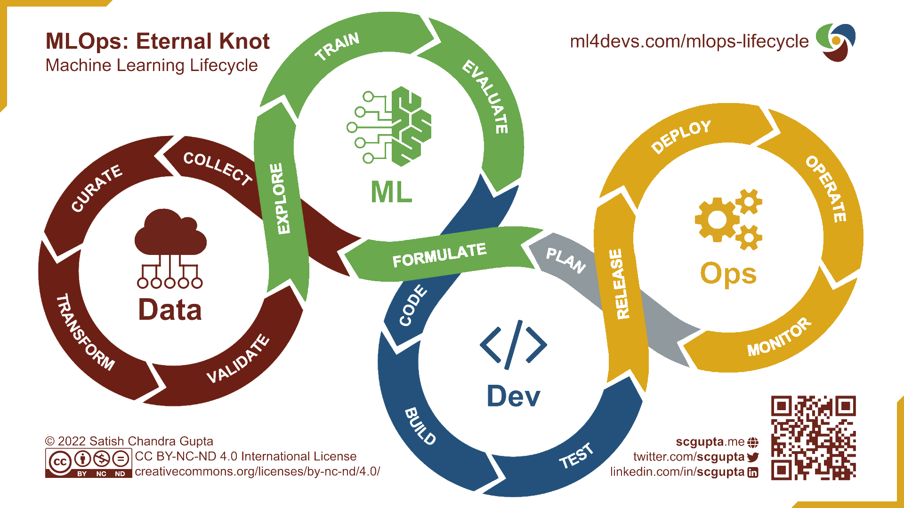
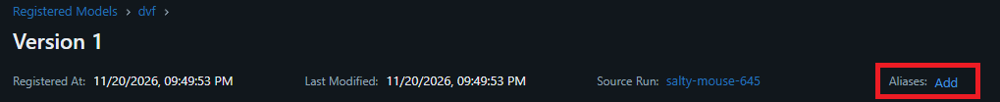
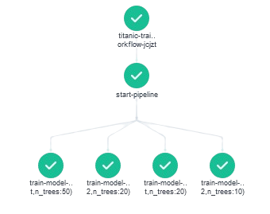
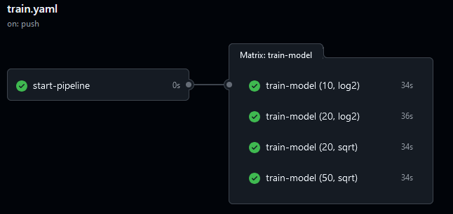

Une application fil rouge pour illustrer l’intérêt d’appliquer graduellement les bonnes pratiques dans une optique de mise en production d’une application de data science.
Introduction
L’objectif de cette mise en application est d’illustrer les différentes étapes qui séparent la phase de développement d’un projet de celle de la mise en production. Elle permettra de mettre en pratique les différents concepts présentés tout au long du cours.
L’objectif pédagogique principal de cette application est d’adopter un point de vue pragmatique en choisissant des outils et des méthodes de travail qui permettent de réaliser des objectifs ambitieux de valorisation de données. Python sera le trait d’union entre les différentes technologies ou infrastructures que nous utiliserons.
Cette application est un tutoriel pas à pas pour avoir un projet reproductible et disponible sous plusieurs livrables. Toutes les étapes ne sont pas indispensables à tous les projets de data science et il existe des outils alternatifs à ceux présentés. Néanmoins, les outils présentés ont l’avantage d’être très bien intégrés à Python, bien configurés si vous utilisez le SSPCloud comme nous le recommandons, tout en étant agnostiques sur le reste des outils que vous utilisez ; de sorte à ne pas être bloquants si on remplace l’une des briques logicielles par une autre.
Nous nous plaçons dans une situation initiale correspondant à la fin de la phase de développement d’un projet de data science. On a un notebook un peu monolithique, qui réalise les étapes classiques d’un pipeline de machine learning :
Import de données ;
Statistiques descriptives et visualisations ;
Feature engineering ;
Entraînement d’un modèle ;
Evaluation du modèle.
Objectif
L’objectif est d’améliorer le projet de manière incrémentale jusqu’à pouvoir le mettre en production, en le valorisant sous une forme adaptée et en adoptant une méthode de travail fluidifiant les évolutions futures.
En améliorant et enrichissant progressivement notre projet, nous aboutirons sur le cercle infini du MLOps (Figure 1) permettant la coexistence de versions en production et en développement.
La Figure 2 montre que notre point de départ initial, à savoir un notebook, mélange tout. Ceci rend très complexe la mise à jour de notre modèle ou l’exploitation de notre modèle sur de nouvelles données, ce qui est pourtant la raison d’être du machine learning qui est pensé pour l’extrapolation. Si on vous demande de valoriser votre modèle sur de nouvelles données, vous risquez de devoir refaire tourner tout votre notebook, avec le risque de ne pas retrouver les mêmes résultats que dans la version précédente.
La Figure 3 illustre l’horizon auquel nous aboutirons à la fin de cette application. Nous désynchronisons les étapes d’entraînement et de prédiction, en identifiant mieux les pré-requis de chacune et en adoptant des briques technologiques adaptées à celles-ci. Les noms présents sur cette figure sont encore obscurs, c’est normal, mais ils vous deviendrons familiers si vous adoptez une infrastructure et une méthode de travail à l’état de l’art.

Figure 1: Le cercle infini du MLOps
Figure 2: Illustration de notre point de départ
Figure 3: Illustration de l’horizon vers lequel on se dirige
Important
Il est important de bien lire les consignes et d’y aller progressivement. Certaines étapes peuvent être rapides, d’autres plus fastidieuses ; certaines être assez guidées, d’autres vous laisser plus de liberté. Si vous n’effectuez pas une étape, vous risquez de ne pas pouvoir passer à l’étape suivante qui en dépend.
Bien que l’exercice soit applicable sur toute configuration bien faite, nous recommandons de privilégier l’utilisation du SSP Cloud, où tous les outils nécessaires sont pré-installés et pré-configurés. Le service VSCode ne sera en effet que le point d’entrée pour l’utilisation d’outils plus exigeants sur le plan de l’infrastructure: Argo, MLFLow, etc.
Ce que cette application ne couvre pas (pour le moment)
A l’heure actuelle, cette application se concentre sur la mise en oeuvre fiable de l’entraînement de modèles de machine learning. Comme vous pouvez le voir, quand on part d’aussi loin qu’un projet monolithique dans un notebook, c’est un travail conséquent d’en arriver à un pipeline pensé pour la production. Cette application vise à vous sensibiliser au fait qu’avoir la Figure 3 en tête et adopter une organisation de travail et faire des choix techniques adéquats, vous fera économiser des dizaines voire centaines d’heures lorsque votre modèle aura vocation à passer en production.
A l’heure actuelle, cette application ne se concentre que sur une partie du cycle de vie d’un projet data ; il y a déjà fort à faire. Nous nous concentrons sur l’entraînement et la mise à disposition d’un modèle à des fins opérationnelles. C’est la première partie du cycle de vie d’un modèle. Dans une approche MLOps, il faut également penser la maintenance de ce modèle et les enjeux que représentent l’arrivée continue de nouvelles données, ou le besoin d’en collecter de nouvelles à travers des annotations, sur la qualité prédictive d’un modèle. Toute entreprise qui ne pense pas cet après est vouée à se faire doubler par un nouveau venu. Une prochaine version de cette application permettra certainement d’illustrer certains des enjeux afférants à la vie en production d’un modèle (supervision, annotations…) sur notre cas d’usage.
Il convient aussi de noter que nous ne faisons que parcourir la surface des sujets que nous évoquons. Ce cours, déjà dense, deviendrait indigeste si nous devions présenter chaque outil dans le détail. Nous laissons donc les curieux approfondir chacun des outils que nous présentons pour découvrir comment en tirer le maximum (et si vous avez l’impression que nous oublions des éléments cruciaux, les issues et pull requests sont bienvenues).
Comment gérer les checkpoints ?
Pour simplifier la reprise en cours de ce fil rouge, nous proposons un système de checkpoints qui s’appuient sur des tagsGit. Ces tags figent le projet tel qu’il est à l’issue d’un exercice donné.
Si vous faites évoluer votre projet de manière expérimentale mais désirez tout de même utiliser à un moment ces checkpoints, il va falloir faire quelques acrobaties Git. Pour cela, nous mettons à disposition un script qui permet de sauvegarder votre avancée dans un tag donné (au cas où, à un moment, vous vouliez revenir dessus) et écraser la branche main avec le tag en question. Par exemple, si vous désirez reprendre après l’exercice 9, vous devrez faire tourner le code dans cette boite :
Move to the state at the end of application appli9
3
Clean up after us
Before continuing, to do on your side
Create the .env file (not versioned, listed in
.gitignore) and set JETON_API in it. A dummy
value is enough: the Melodi API does not check the token.
Partie 0 : initialisation du projet
Nous allons prendre comme point de départ un projet livré exclusivement avec un notebook, à la manière d’un challenge Kaggle. Vous pourrez ainsi voir à quel point ce type de livrable est très loin d’être satisfaisant si on veut que le projet soit réutilisable.
Notre cas d’usage est la prédiction du prix au m² des logements vendus en 2022 à Paris et dans les départements de la petite couronne (Hauts-de-Seine, Seine-Saint-Denis, Val-de-Marne). Il s’appuie sur les Demandes de valeurs foncières (DVF), qui recensent les transactions immobilières, enrichies par des informations socio-économiques issues du dispositif Filosofi de l’Insee : des données carroyées (carreaux de 200 mètres de côté) et des indicateurs communaux récupérés par l’API Melodi. Le modèle est un gradient boosting (LightGBM).
ApplicationApplication préliminaire 1: forker le dépôt d’exemple
Les premières étapes consistent à mettre en place son environnement de travail sur Github:
Générer un jeton d’accès (token) sur GitHub afin de permettre l’authentification en ligne de commande à votre compte. La procédure est décrite ici. Vous ne voyez ce jeton qu’une fois, ne fermez pas la page de suite.
Mettez de côté ce jeton en l’enregistrant dans un gestionnaire de mot de passe ou dans l’espace “Mon compte” du SSP Cloud.
Décocher la case “Copy the main branch only” afin de copier également les tagsGit qui nous permettront de faire les checkpoint.
Ce que vous devriez voir sur la page de création du fork.
Nous recommandons d’utiliser, tout au long de ce projet, l’environnement de développement VSCode. En plus d’être très bien construit, les nombreuses extensions disponibles rendent celui-ci adaptable à tous nos besoins. Comme il s’agit de l’outil sur lequel vous passerez votre quotidien, n’hésitez pas à personnaliser celui-ci grâce aux nombreuses ressources disponibles en ligne1.
ApplicationApplication préliminaire 2: mettre en place son environnement de travail
Il est maintenant possible de ce lancer dans la création de l’environnement de travail:
Ouvrir un service VSCode sur le SSP Cloud. Vous pouvez aller dans la page My Services et cliquer sur New service. Sinon, vous pouvez initialiser la création du service en cliquant directement ici. Modifier les options suivantes:
Dans l’onglet Role, sélectionner le rôle Admin ;
Dans l’onglet Networking, cliquer sur “Enable a custom service port” et laisser la valeur par défaut 5000 pour le numéro du port
Clôner votre dépôt Github en utilisant le terminal depuis Visual Studio (Terminal > New Terminal) et en passant directement le token dans l’URL selon cette structure:
où $GIT_PERSONAL_ACCESS_TOKEN et $GIT_USER_NAME sont à remplacer, respectivement, par le jeton que vous avez généré précédemment et votre nom d’utilisateur.
Le script d’initialisation proposé
Ce script initialise quelques extensions intéressantes pour le développement de projets utilisant Python ou des fichiers textes type Markdown ou YAML: diagnostic, mise en forme automatisée, etc.
#!/bin/bash# Define the configuration directory for VS CodeVSCODE_CONFIG_DIR="$HOME/.local/share/code-server/User"# Create the configuration directory if necessarymkdir -p "$VSCODE_CONFIG_DIR"# User settings fileSETTINGS_FILE="$VSCODE_CONFIG_DIR/settings.json"code-server --install-extension yzhang.markdown-all-in-onecode-server --install-extension oderwat.indent-rainbowcode-server --install-extension tamasfe.even-better-tomlcode-server --install-extension aaron-bond.better-commentscode-server --install-extension github.vscode-github-actions# Replace default flake8 linter with project-preconfigured ruffcode-server --uninstall-extension ms-python.flake8code-server --install-extension charliermarsh.ruffjq '. + { "workbench.colorTheme": "Default Dark Modern", # Set the theme"editor.rulers": [80, 100, 120], # Add specific vertical rulers"files.trimTrailingWhitespace": true, # Automatically trim trailing whitespace"files.insertFinalNewline": true, # Ensure files end with a newline"flake8.args": ["--max-line-length=100"# Max line length for Python linting ]}' "$SETTINGS_FILE" > "$SETTINGS_FILE.tmp" && mv "$SETTINGS_FILE.tmp" "$SETTINGS_FILE"
Si, dans quelques jours, vous désirez relancer un service avec cette configuration, vous pouvez cliquer sur ce lien:
En cliquant sur l’onglet Git, vous pouvez renseigner directement votre URL de la forme https://github.com/username/depot.git: cela clônera votre dépôt dans le service et injectera le token pour vous économiser l’authentification à venir lors de la phase de push.
Partie 1 : qualité du script
Cette première partie vise à rendre le projet conforme aux bonnes pratiques présentées dans le cours.
TipNotions à acquérir dans cette partie
Si vous suivez ces premières applications, vous devriez acquérir les notions suivantes :
Travail collaboratif avec Git et GitHub (voir Rappels Git).
Le plan de la partie est le suivant :
S’assurer que le script fonctionne ;
Nettoyer le code des scories formelles avec un linter et un formatter ;
Paramétrer le script ;
Utiliser des fonctions.
Étape 1 : s’assurer que le script s’exécute correctement
On va partir du fichier dvf.py qui reprend le contenu du notebook2 mais dans un script classique. Le travail de nettoyage en sera facilité.
La première étape est simple, mais souvent oubliée : vérifier que le code fonctionne correctement. Pour cela, nous recommandons de faire un aller-retour entre le script ouvert dans VSCode et un terminal pour le lancer.
ApplicationApplication 1: corriger les erreurs
Ouvrir dans VSCode le script dvf.py ;
Exécuter le script en ligne de commande (python dvf.py)3 pour détecter les erreurs ;
Corriger les deux erreurs qui empêchent la bonne exécution ;
Vérifier le fonctionnement du script en utilisant la ligne de commande:
terminal
python dvf.py
Le code devrait afficher des sorties. Lors de la première exécution, le script télécharge les données (environ 150 Mo) dans un dossier data/ : soyez patients, les exécutions suivantes réutiliseront ces fichiers. Le script complet prend une à deux minutes.
Aide sur les erreurs rencontrées
La première erreur rencontrée est une alerte FileNotFoundError, la seconde est liée à un package.
Il est maintenant temps de commit les changements effectués avec Git4. On ne versionne que le script : les données téléchargées dans data/ n’ont pas vocation à rejoindre Git.
terminal
git add dvf.pygit commit -m"Corrige l'erreur qui empêchait l'exécution"git push
Move to the state at the end of application appli1
3
Clean up after us
Étape 2: utiliser un linter puis un formatter
On va maintenant améliorer la qualité de notre code en appliquant les standards communautaires. Pour cela, on va principalement utiliser Ruff qui est à la fois un linter et un formatter5. On va aussi utiliser le linter classique PyLint qui présente une fonctionnalité assez pédagogique de notation d’un script à l’aune des standards communautaires évoqués dans la partie Qualité du code.
Ce nettoyage automatique du code permettra, au passage, de restructurer notre script de manière plus naturelle.
Important
PyLint et Ruff sont des packagesPython qui s’utilisent principalement en ligne de commande.
Si vous avez une erreur qui suggère que votre terminal ne connait pas PyLint ou Ruff, n’oubliez pas d’exécuter la commande pip install pylint, ou pip install ruff.
ApplicationApplication 2: rendre lisible le script
Diagnostiquer et évaluer la qualité de dvf.py avec PyLint. Regarder la note obtenue.
Utiliser le formatter ruff via la commande ruff check dvf.py pour voir les problèmes recensés par celui-ci. Appliquer l’option --fix suggérée pour commencer à formatter le fichier. Evaluer à nouveau ce fichier avec PyLint.
Utiliser ruff format dvf.py pour modifier la mise en forme du fichier.
Réutiliser PyLint pour diagnostiquer l’amélioration de la qualité du script et le travail qui reste à faire.
Comme la majorité du travail restant est à consacrer aux imports:
Mettre tous les imports ensemble en début de script
Retirer les imports inutilisés en s’aidant des diagnostics de votre éditeur
Réordonner les imports si PyLint ou vous indique de le faire
Corriger les dernières fautes formelles suggérées par PyLint
Délimiter des parties dans votre code pour rendre sa structure plus lisible. Si des parties vous semblent être dans le désordre, vous pouvez réordonner le script (mais n’oubliez pas de le tester). Par exemple, est-il utile de faire la jointure spatiale avec les carreaux Filosofi sur toute la France alors qu’on ne garde ensuite que la petite couronne ?
Simplifier les commentaires. Supprimer ceux qui paraphrasent le code et raccourcir les pavés : un bon commentaire explique le pourquoi (un choix, une particularité des données) plutôt que le comment, que le code dit déjà. Privilégier l’anglais et une forme homogène pour les titres de parties.
Au passage, en relisant la fin du script, avez-vous remarqué l’erreur de copier-coller dans la vérification des modalités du test ?
Move to the state at the end of application appli2
3
Clean up after us
Le code est maintenant lisible, il obtient à ce stade une note formelle proche de 10. Mais il n’est pas encore totalement intelligible ou fiable. Il y a notamment quelques redondances de code auxquelles nous allons nous attaquer par la suite. Néanmoins, avant cela, occupons-nous de mieux gérer certains paramètres du script: jetons d’API et chemin des fichiers.
Étape 3: gestion des paramètres
Reprendre à partir d'ici
If you no longer have an active VSCode with the configuration proposed in the preliminary application, you can restart from this service:
Move to the state at the end of application appli2
3
Clean up after us
L’exécution du code et les résultats obtenus dépendent de certains paramètres définis dans le code. L’étude de résultats alternatifs, en jouant sur des variantes des (hyper)paramètres, est à ce stade compliquée car il est nécessaire de parcourir le code pour trouver ces paramètres. De plus, certains paramètres personnels comme des jetons d’API ou des mots de passe n’ont pas vocation à être présents dans le code.
Il est plus judicieux de considérer ces paramètres comme des variables d’entrée du script. Cela peut être fait de deux manières:
Avec des arguments optionnels appelés depuis la ligne de commande (Application 3a). Cela peut être pratique pour mettre en oeuvre des tests automatisés mais n’est pas forcément pertinent pour toutes les variables. Nous allons montrer cet usage avec le nombre d’arbres de notre modèle LightGBM ;
En utilisant un fichier de configuration dont les valeurs sont importées dans le script principal (Application 3b).
Un exemple de définition d’un argument pour l’utilisation en ligne de commande
ApplicationApplication 3a: Paramétrisation du script
En s’inspirant de l’exemple ci-dessus 👆️, créer une variable n_trees qui peut éventuellement être paramétrée en ligne de commande et dont la valeur par défaut est 1500. L’utiliser pour définir le nombre d’arbres (n_estimators) de notre modèle LightGBM ;
Tester cette paramétrisation en ligne de commande avec la valeur par défaut puis 10, 100 et 500 arbres. Comment évolue la RMSE sur l’échantillon de test ?
L’exercice suivant permet de mettre en application le fait de paramétriser un script en utilisant des variables définies dans un fichier .env.
ApplicationApplication 3b: La configuration dans un fichier dédié
Installer le package python-dotenv que nous allons utiliser pour charger notre jeton d’API à partir d’une variable d’environnement.
A partir de l’exemple de la documentation, utiliser la fonction load_dotenv pour charger dans Python nos variables d’environnement à partir d’un fichier (vous pouvez le créer mais ne pas le remplir encore avec les valeurs voulues, ce sera fait ensuite)
Créer la variable comme proposé ci-dessous et l’utiliser à la place de jetonapi dans les appels à l’API Melodi6. Vérifier la sortie de Python en faisant tourner dvf.py en ligne de commande
dvf.py
jeton_api = os.environ["JETON_API"]
Cela devrait vous renvoyer une erreur, comprenez-vous pourquoi ? Maintenant introduire la valeur voulue pour le jeton d’API dans le fichier d’environnement lu par dotenv.
S’il n’existe pas déjà, créer un fichier .gitignore (cf. Chapitre Git). Ajouter dans ce fichier .env car il ne faut pas committer ce fichier. Au passage ajouter __pycache__/ au .gitignore7, cela évitera d’avoir à le faire ultérieurement ;
Créer un fichier README.md où vous indiquez qu’il faut créer un fichier .env pour pouvoir utiliser l’API.
Move to the state at the end of application appli3
3
Clean up after us
Before continuing, to do on your side
Create the .env file (not versioned, listed in
.gitignore) and set JETON_API in it. A dummy
value is enough: the Melodi API does not check the token.
Étape 4 : Privilégier la programmation fonctionnelle
Nous allons mettre en fonctions les parties importantes de l’analyse. Ceci facilitera l’étape ultérieure de modularisation de notre projet. Comme cela est évoqué dans les éléments magistraux de ce cours, l’utilisation de fonctions va rendre notre code plus concis, plus traçable, mieux documenté.
Cet exercice étant chronophage, il n’est pas obligatoire de le réaliser en entier. L’important est de comprendre la démarche et d’adopter fréquemment une approche fonctionnelle8. Pour obtenir une chaine entièrement fonctionnalisée, vous pouvez reprendre le checkpoint.
Pour commencer, cet exercice fait un petit pas de côté pour faire comprendre la manière dont les pipelines scikit sont un outil au service des bonnes pratiques.
ApplicationApplication 4 (optionnelle): pourquoi utiliser un pipelineScikit ?
Le pipelineScikit d’estimation et d’évaluation vous a été donné tel quel. Regardez, ci-dessous, le code équivalent sans utiliser de pipelineScikit:
Le code équivalent sans pipeline
from lightgbm import LGBMRegressorfrom sklearn.impute import SimpleImputerfrom sklearn.metrics import root_mean_squared_errorfrom sklearn.preprocessing import OrdinalEncoderimport numpy as np# Définition des variablesnumeric_features = ["log_surface", "log_distance_eiffel", "nombre_pieces_principales","nombre_lots", "log_surface_terrain", "ratio_carrez","nbre_menages", "tx_pauvrete", "nv_vie_moyen","part_proprietaires", "part_logements_sociaux","part_logements_avant_1945", "surface_moyenne_logements","NIVVIE_MEDIAN", "TAUX_PAUVRETE",]categorical_features = ["code_commune", "type_local"]features = numeric_features + categorical_featuresX_train = X_train[features].copy()X_test = X_test[features].copy()# PREPROCESSING ----------------------------# Handling missing values for numerical featuresnum_imputer = SimpleImputer(strategy="median")X_train[numeric_features] = num_imputer.fit_transform(X_train[numeric_features])X_test[numeric_features] = num_imputer.transform(X_test[numeric_features])# Handling missing values for categorical featurescat_imputer = SimpleImputer(strategy="most_frequent")X_train[categorical_features] = cat_imputer.fit_transform(X_train[categorical_features])X_test[categorical_features] = cat_imputer.transform(X_test[categorical_features])# Ordinal encoding categorical features (unknown categories in test -> -1)encoder = OrdinalEncoder(handle_unknown="use_encoded_value", unknown_value=-1)X_train[categorical_features] = encoder.fit_transform(X_train[categorical_features])X_test[categorical_features] = encoder.transform(X_test[categorical_features])# LightGBM recognizes categorical variables through the 'category' dtypeX_train[categorical_features] = X_train[categorical_features].astype("category")X_test[categorical_features] = X_test[categorical_features].astype("category")# Log transformation of the target (do not forget to invert it after prediction!)y_train_log = np.log1p(y_train)# MODEL TRAINING ----------------------------# Defining the modelmodel = LGBMRegressor( n_estimators=n_trees, learning_rate=0.03, num_leaves=31, min_child_samples=10, subsample=0.8, colsample_bytree=0.8, random_state=0, verbose=-1,)# Fitting the modelmodel.fit(X_train, y_train_log)# EVALUATION ----------------------------# Back to €/m² before computing the errory_pred = np.expm1(model.predict(X_test))rmse_test = root_mean_squared_error(y_test, y_pred)print(f"RMSE sur le test : {rmse_test:,.0f} €/m²")
Voyez-vous l’intérêt de l’approche par pipeline en termes de lisibilité, évolutivité et fiabilité ?
Créer un notebook qui servira de brouillon. Y introduire le code suivant, qui réutilise les échantillons train.csv et test.csv écrits par notre chaîne (cela évite de refaire tourner l’import et l’enrichissement des données):
Afficher ce pipeline dans une cellule de votre notebook. Cela vous aide-t-il mieux à comprendre les différentes étapes du pipeline de modélisation ?
Comment pouvez-vous accéder aux étapes de preprocessing ? Attention, notre pipeline est encapsulé dans un TransformedTargetRegressor qui transforme la variable cible : regardez la différence entre les attributs regressor et regressor_ de cet objet.
Comment pouvez-vous faire pour appliquer le pipeline de preprocessing des variables numériques (et uniquement celui-ci) à ce DataFrame ?
Le DataFrame à créer pour appliquer un bout de notre pipeline
import numpy as np# Cinq transactions de l'échantillon de test dont on efface quelques valeursnew_data = X_test.head(5).copy()new_data.iloc[[1, 4], new_data.columns.get_loc("log_surface")] = np.nannew_data.iloc[2, new_data.columns.get_loc("ratio_carrez")] = np.nan
Normalement ce code ne devrait pas prendre plus d’une demie-douzaine de lignes. Sans pipeline le code équivalent, beaucoup plus verbeux et moins fiable, ressemble à celui-ci
Le code équivalent, sans pipeline
import pandas as pdfrom sklearn.impute import SimpleImputer# Définition des transformations (même que dans le pipeline)num_imputer = SimpleImputer(strategy="median")# Apprentissage des transformations sur X_train (assumant que vous l'avez déjà)X_train_numeric = X_train[numeric_features] # Supposons que X_train existenum_imputer.fit(X_train_numeric)# Transformation des nouvelles donnéesnew_data_imputed = num_imputer.transform(new_data[numeric_features])# Création du DataFrame finalnew_data_preprocessed = pd.DataFrame( new_data_imputed, columns=numeric_features, # Retrouver soi-même les noms des colonnes index=new_data.index,)# Affichage du DataFrameprint(new_data_preprocessed)
Imaginons que vous ayez déjà des données préprocessées:
Déterminer le prix au m² prédit pour ces transactions à partir de preprocessed_data. Comparer avec pipe.predict(new_data). Qu’est-ce que cela vous apprend sur l’intérêt d’encapsuler toutes les transformations (y compris celle de la variable cible) dans un même objet ?
Maintenant, revenons à notre chaine de production et appliquons des fonctions pour la rendre plus lisible, plus fiable et plus modulaire.
ApplicationApplication 4: adoption des standards de programmation fonctionnelle
Cette application peut être chronophage, vous pouvez aller plus ou moins loin dans la fonctionalisation de votre script en fonction du temps dont vous disposez.
Cette application vise principalement à transformer nos tests de validation de données en fonctions génériques. Nous allons adopter la convention arbitraire de nommer nos vérifications check_*.
Pour comprendre la manière dont une fonction peut être un outil d’autodocumentation, créer une fonction check_code_commune_formatting qui vérifie que la colonne “code_commune” est bien composée de 5 caractères commençant par le code du département. Faire en sorte que cette fonction soit pure9. Utiliser le type hinting des arguments pour renforcer l’autodocumentation de la chaîne10.
Pour comprendre la manière dont une fonction répond au problème du don’t repeat yourself, créer une fonction check_missing_values pour recenser les valeurs manquantes pour une colonne donnée.
Faire la même chose avec une fonction check_unseen_categories, qui vérifie que les modalités des variables catégorielles du test sont toutes présentes dans l’apprentissage.
Appliquer check_missing_values à l’ensemble des variables du dataset11
Le script contient une autre duplication, encore plus flagrante : les deux appels à l’API Melodi (niveau de vie médian et taux de pauvreté) ne diffèrent que par le code de l’indicateur et le nom de la colonne produite. Créer une fonction get_melodi_indicator qui renvoie un DataFrame pour un indicateur donné, en passant le jeton d’API en argument pour que la fonction reste pure, et l’utiliser pour les deux indicateurs.
Move to the state at the end of application appli4
3
Clean up after us
Before continuing, to do on your side
Create the .env file (not versioned, listed in
.gitignore) and set JETON_API in it. A dummy
value is enough: the Melodi API does not check the token.
Cela ne se remarque pas encore vraiment car nous avons de nombreuses définitions de fonctions (plus d’une centaine de lignes) mais notre chaine de production est beaucoup plus concise : les diagnostics de qualité tiennent en une boucle et chaque indicateur récupéré sur l’API Melodi en un appel de fonction. Cette auto-discipline facilitera grandement les étapes ultérieures. Cela aurait été néanmoins beaucoup moins coûteux en temps d’adopter ces bons gestes de manière plus précoce.
Partie 2 : adoption d’une structure modulaire
Dans la partie précédente, on a appliqué de manière incrémentale de nombreuses bonnes pratiques vues tout au long du cours. Ce faisant, on s’est déjà considérablement rapprochés d’un possible partage du code : celui-ci est lisible et intelligible. Le code est proprement versionné sur un dépôt GitHub.
Cependant, le projet est encore perfectible: il est encore difficile de rentrer dedans si on ne sait pas exactement ce qu’on recherche. L’objectif de cette partie est d’isoler les différentes étapes de notre pipeline. Outre le gain de clarté pour notre projet, nous économiserons beaucoup de peines pour la mise en production ultérieure de notre modèle.
Etat du pipeline avant la modularisation
Dans cette partie nous allons continuer les améliorations incrémentales de notre projet avec les étapes suivantes:
Modularisation du code Python pour séparer les différentes étapes de notre pipeline ;
Adopter une structure standardisée pour notre projet afin d’autodocumenter l’organisation de celui-ci ;
Documenter les packages indispensables à l’exécution du code ;
Stocker les données dans un environnement adéquat afin de continuer la démarche de séparer conceptuellement les données du code en de la configuration.
Étape 1 : modularisation
Nous allons profiter de la modularisation pour adopter une structure applicative pour notre code. Celui-ci n’étant en effet plus lancé que depuis la ligne de commande, on peut considérer qu’on construit une application générique où un script principal (main.py) encapsule des éléments issus d’autres scripts Python.
ApplicationApplication 5: modularisation
Déplacer les fonctions de validation de données (check_*) dans un script dédié nommé check.py. Ici un seul script suffit car ces fonctions partagent une thématique commune.
Déplacer les fonctions de récupération des données (download_sources et get_melodi_indicator) dans un second script nommé import_data.py ;
main.py reste long : regrouper les autres grandes étapes en fonctions composables, rangées dans des modules dédiés. Par exemple build_features dans features.py (elle-même composée de petites fonctions : ratios Filosofi, filtre des prix extrêmes, surfaces, distance à la tour Eiffel), la construction du pipeline dans model.py et l’évaluation dans evaluation.py. Les fonctions d’enrichissement par les données Filosofi rejoignent import_data.py. main.py doit se lire comme l’enchaînement de ces étapes ;
Spécifier les dépendances (i.e. les packages à importer) dans les modules pour que ceux-ci puissent s’exécuter indépendamment ;
Renommer dvf.py en main.py pour suivre la convention de nommage des projets Python ;
Importer les fonctions nécessaires à partir du module.
Vérifier que tout fonctionne bien en exécutant le scriptmain à partir de la ligne de commande :
terminal
python main.py
Optionnel: profitez en pour mettre un petit coup de formatter à votre projet, si vous ne l’avez pas fait régulièrement.
Move to the state at the end of application appli5
3
Clean up after us
Before continuing, to do on your side
Create the .env file (not versioned, listed in
.gitignore) and set JETON_API in it. A dummy
value is enough: the Melodi API does not check the token.
Étape 2 : adopter une architecture standardisée de projet
On dispose maintenant d’une application Python fonctionnelle. Néanmoins, le projet est certes plus fiable mais sa structuration laisse à désirer et s’il continuait à être organisé de la même manière à mesure qu’il devenait plus ambitieux il deviendrait de plus en plus difficile de rentrer à nouveau dans celui-ci après une pause de quelques jours.
Etat actuel du projet 🙈
.gitignore
.env
data
dvf.parquet
filosofi_carreaux_200m_2021.parquet
train.csv
test.csv
README.md
check.py
import_data.py
features.py
model.py
evaluation.py
dvf.ipynb
main.py
Comme cela est expliqué dans la partie Structure des projets, on va adopter une structure certes arbitraire mais qui va faciliter l’autodocumentation de notre projet. De plus, une telle structure va faciliter des évolutions optionnelles comme la packagisation du projet. Passer d’une structure modulaire bien faite à un package est quasi-immédiat en Python.
On va donc modifier l’architecture de notre projet pour la rendre plus standardisée. Pour cela, on va s’inspirer des structures cookiecutter qui génèrent des templates de projet. En l’occurrence notre source d’inspiration sera le template datascience issu d’un effort communautaire pour déterminer la localisation adéquate des éléments communs à tout projet de science de données.
Note
L’idée de cookiecutter est de proposer des templates que l’on utilise pour initialiser un projet, afin de bâtir à l’avance une structure évolutive. La syntaxe à utiliser dans ce cas est la suivante :
Ici, on a déjà un projet, on va donc faire les choses dans l’autre sens : on va s’inspirer de la structure proposée afin de réorganiser celle de notre projet selon les standards communautaires.
En s’inspirant du cookiecutter data science on va adopter la structure suivante:
Structure recommandée
application
main.py
.gitignore
.env
README.md
data
raw
dvf.parquet
filosofi_carreaux_200m_2021.parquet
derived
train.csv
test.csv
notebooks
dvf.ipynb
src
data
build_features.py
check.py
import_data.py
models
evaluation.py
model.py
ApplicationApplication 6: adopter une structure lisible
(optionnel) Analyser et comprendre la structure de projet proposée par le template ;
Modifier l’arborescence du projet selon le modèle ci-dessus. Les données brutes téléchargées par le script iront dans data/raw (déplacez-y les fichiers Parquet déjà téléchargés pour éviter de les télécharger à nouveau) et les échantillons train.csv et test.csv produits par la chaîne dans data/derived ;
Mettre à jour l’import des dépendances, le fichier de configuration et main.py avec les nouveaux chemins ;
Les fichiers de data/raw sont volumineux et peuvent être récupérés à tout moment depuis leur source : ajouter ce dossier au .gitignore (sous la forme /data/raw/, le / initial limitant la règle au dossier situé à la racine du projet) ;
Move to the state at the end of application appli6
3
Clean up after us
Before continuing, to do on your side
Create the .env file (not versioned, listed in
.gitignore) and set JETON_API in it. A dummy
value is enough: the Melodi API does not check the token.
Étape 3: mieux tracer notre chaine de production
Indiquer l’environnement minimal de reproductibilité
Le script main.py nécessite un certain nombre de packages pour être fonctionnel. Chez vous les packages nécessaires sont bien sûr installés mais êtes-vous assuré que c’est le cas chez la personne qui testera votre code ?
Afin de favoriser la portabilité du projet, il est d’usage de “fixer l’environnement”, c’est-à-dire d’indiquer dans un fichier toutes les dépendances utilisées ainsi que leurs version. Nous proposons de créer un fichier requirements.txt minimal, sur lequel nous reviendrons dans la partie consacrée aux environnements reproductibles.
Le fichier requirements.txt est conventionnellement localisé à la racine du projet. Ici on ne va pas fixer les versions, on raffinera ce fichier ultérieurement.
ApplicationApplication 7a: création du requirements.txt
Créer un fichier requirements.txt avec la liste des packages nécessaires
Ajouter une indication dans README.md sur l’installation des packages grâce au fichier requirements.txt
Tracer notre chaîne
Quand votre projet passera en production, vous aurez un accès limité à celui-ci. Il est donc important de faire remonter, par le biais du logging des informations critiques sur votre projet qui vous permettront de savoir où il en est (si vous avez accès à la console où il tourne) ou là où il s’est arrêté.
L’utilisation de print montre rapidement ses limites pour cela. Les informations enregistrées ne persistent pas après la session et sont quelques peu rudimentaires. Pour faire du logging, la librairie consacrée depuis longtemps en Python est… logging. Elle permettra d’horodater nos messages, d’avoir différents types de messages et d’enregistrer ceux-ci dans un fichier dédié.
ApplicationApplication 7b: remontée de messages par logging
Aller sur la documentation de la librairie ici et sur ce tutoriel pour trouver des sources d’inspiration sur la configuration et l’utilisation de logging.
Pour afficher les messages dans la console et dans un fichier de log, s’inspirer de cette réponse sur stack overflow.
Tester en ligne de commande votre code et observer le fichier de log. Ajouter celui-ci au .gitignore.
Si vous avez choisi le niveau DEBUG dans logging.basicConfig, votre fichier de log est sans doute pollué par les messages de certaines librairies (matplotlib notamment). Pour n’afficher en DEBUG que vos propres messages, utiliser un logger dédié (logger = logging.getLogger(__name__)) dont vous réglerez le niveau indépendamment de celui de la configuration globale. C’est d’ailleurs ce que recommande ruff qui signale les appels directs à logging.info, logging.debug, etc.
Move to the state at the end of application appli7
3
Clean up after us
Before continuing, to do on your side
Create the .env file (not versioned, listed in
.gitignore) and set JETON_API in it. A dummy
value is enough: the Melodi API does not check the token.
Étape 4 : stocker les données de manière externe
Jusqu’à présent, nous avons une chaîne reproductible puisque si on récupère le code, on récupère aussi les données. Ce n’est pas une bonne pratique. Nous allons maintenant séparer conceptuellement code et données. Cela va nous amener à nous poser trois questions : où stocker les données ? dans quel format ? comment les lire ?
La réponse à ces trois formats permettra d’avoir le nec plus ultra des bonnes pratiques: des données au format Parquet hébergé sur le cloud et lues dans Python par l’intermédiaire de DuckDB.
Pour cette partie, il faut avoir un service VSCode dont les jetons d’authentification à S3 sont valides. Si vous avez un doute, vous reporter à Tip 1.
Tip 1: Pré-requis pour la prochaine application
Pour les prochaines applications, on va supposer l’utilisation d’un système de stockage cloud de type S3 (pour en savoir plus sur l’intérêt de cette approche, se reporter au chapitre dédié).
Sans perte de généralité, on va supposer que le S3 en question est celui du SSPCloud (mais cela fonctionnerait de manière assez transparente si nous proposions d’utiliser un cloud provider privé comme AWS). Pour en savoir plus sur l’adaptation de ce tutoriel hors du SSPCloud, se reporter vers l’encadré dédié (Important 1).
Pour que votre Python interagisse avec S3, il vous faut des jetons d’authentification. Ils permettent de dire à S3 que c’est bien vous qui essayez de consommer la donnée à laquelle vous avez le droit par le biais d’un Python qu’il ne connaît pas a priori.
Des jetons d’authentification sont créés automatiquement pour vous lorsque vous lancez un service interactif VSCode sur le SSPCloud. Ils ont cependant une durée de vie limitée (5 jours). Si votre service a des jetons ayant expiré, vous allez avoir une erreur 403 lorsque vous essaierai d’interagir avec S3.
Deux approches sont possibles:
Récupérer des jetons valides sur https://datalab.sspcloud.fr/account/storage et les renseigner à l’endroit adéquat dans votre service VSCode.
Créer un nouveau service qui bénéficiera automatiquement de l’injection de jetons à jour.
La 2e voie est recommandée. Le plus simple est de 1/ cliquer sur le bouton suivant
2/ remplir l’onglet Git avec l’url de votre dépôt pour bénéficier du clonage automatique de celui-ci et 3/ faire le checkpoint post appli7.
De cette manière votre VSCode sera presque prêt à l’emploi, à l’image de ce que vous aviez fait pour l’application 0. Il vous suffira d’ouvrir un terminal et faire pip install -r requirements.txt && python main.py pour pouvoir démarrer l’application.
Reprendre à partir d'ici
If you no longer have an active VSCode with the configuration proposed in the preliminary application, you can restart from this service:
Move to the state at the end of application appli7
3
Clean up after us
Before continuing, to do on your side
Create the .env file (not versioned, listed in
.gitignore) and set JETON_API in it. A dummy
value is enough: the Melodi API does not check the token.
L’étape précédente nous a permis d’isoler la configuration. Nous avons conceptuellement isolé les données du code lors des applications précédentes. Cependant, nous n’avons pas été au bout du chemin car le stockage des données reste conjoint à celui du code. Nous allons maintenant dissocier ces deux éléments.
Important 1: Et si vous utilisez une infrastructure cloud qui n’est pas le SSPCloud ? (une idée saugrenue mais sait-on jamais)
Les exemples à venir peuvent très bien être répliqués sur n’importe quel cloud provider qui propose une solution de type S3, qu’il s’agisse d’un cloud provider privé (AWS, GCP, Azure, etc.) ou d’une réinstanciation ad hoc du projet Onyxia, le logiciel derrière le SSPCloud.
Pour un système de stockage S3, il suffit de changer les paramètres de connexion de s3fs (endpoint, region, etc.). Pour les stockages sur GCP, les codes sont presque équivalents, il suffit de remplacer la librairie s3fs par gcfs; ces deux librairies sont en fait des briques d’un standard plus général de gestion de systèmes de fichiers en Pythonffspec.
À l’heure actuelle, notre chaîne télécharge, à chaque fois qu’elle est lancée dans un nouvel environnement, deux fichiers depuis des sources externes que nous ne maîtrisons pas (un bucket public du SSPCloud et data.gouv). Ce sont des fichiers volumineux (plus de 150 Mo au total) dont nous n’exploitons qu’une petite partie, puisque nous ne nous intéressons qu’à Paris et à la petite couronne. Nous allons d’abord en écrire une copie sur notre propre espace S3 puis utiliser ces fichiers depuis cet emplacement.
Notre chaine va aller chercher ces fichiers, travailler dessus jusqu’à les valoriser sous la forme de notre modèle de prix et de ses métriques de performance. Bonne nouvelle, les données sont déjà au format Parquet, que nous recommandons. Mais notre chaîne n’en tire pas parti : elle lit tout pour ne garder qu’une petite partie. Apprendre à ne lire que ce qui est nécessaire est l’objet de l’appli 8c.
Cette application va se dérouler en quatre temps:
Upload de nos sources brutes (Parquet) sur S3.
Illustration de l’usage des librairies cloud native pour lire celles-ci.
Utilisation de DuckDB pour ne lire que les colonnes et les lignes utiles de ces fichiers.
Partage public de ces données pour les rendre accessibles de manière plus simple à nos futures applications et adaptation de notre chaîne.
ApplicationApplication 8a: ajout de données sur le système de stockage S3
Le SSPCloud repose sur une implémentation particulière du protocole S3 qui s’appelle MinIO. Cela étend les fonctionnalités de manipulation de fichiers en ligne de commande à des données n’étant pas présentes dans le filesystem local mais dans le cloud.
En pratique, l’implémentation MinIO permet notamment de manipuler des fichiers à distance comme s’ils étaient en local. Les commandes de manipulation de fichier du chapitre Linux 101 (lister, copier, supprimer…) sont étendues grâce à l’ajout d’un petit mc devant celle-ci.
Illustrons cela en copiant les données brutes, que notre script a téléchargées dans data/raw, vers votre bucket personnel.
en modifiant la variable MY_BUCKET, l’emplacement de votre bucket personnel
Avant de modifier notre code Python, on va lister les fichiers se trouvant dans notre bucket. En ligne de commande, sur notre poste local, on ferait ls (cf. Linux 101). Cela ne va pas beaucoup différer avec les librairies cloud native:
terminal
1MY_BUCKET="mon_nom_utilisateur_sspcloud"2CHEMIN="ensae-reproductibilite/data/raw"mc ls s3/${MY_BUCKET}/${CHEMIN}
1
Changer avec le bucket
2
Changer en fonction du chemin voulu
En utilisant l’explorateur de fichiers S3 du SSPCloud (datalab.sspcloud.fr/file-explorer), faites une deuxième vérification que vos données sont bien sauvegardées sur S3.
On va maintenant lire directement une donnée stockée sur S3 avec Python. Pour illustrer le fait qu’être sur un système cloud avec les librairies adaptées change peu notre code, on va lire directement le fichier Parquet des transactions DVF stocké sur le SSPCloud, sans passer par un fichier en local12.
Pour illustrer la cohérence avec un système de fichier local, voici trois solutions pour lire le fichier que vous venez de mettre sur S3 (s’appuyant sur GeoPandas, Arrow ou DuckDB). Attention, il faut avoir des jetons de connexion à S3 à jour. Si vous avez cette erreur
A client error (InvalidAccessKeyId) occurred when calling the ListBuckets operation: The AWS Access Key Id you provided does not exist in our records.
c’est que vos identifiants de connexion ne sont plus à jour (pour des raisons de sécurité, ils sont régulièrement renouvelés). Dans ce cas, consulter Important 1.
ApplicationApplication 8b: importer une donnée depuis un système de stockage S3
Cet exercice illustre trois manières de lire des données Parquet sur S3. Ce choix est arbitraire car il existe de nombreux frameworks concurrents ou complémentaires à Pandas, Arrow ou DuckDB qui permettent de lire des données depuis S3.
Dans un notebook, copier-coller et mettre à jour ces deux variables qui seront utilisées dans différents exemples:
import pyarrow as paimport pyarrow.parquet as pqs3 = pa.fs.S3FileSystem(endpoint_override="https://minio.lab.sspcloud.fr")df = pq.read_table(f"{MY_BUCKET}/{CHEMIN_FICHIER}", filesystem=s3)df
import duckdbcon = duckdb.connect(database=":memory:")query_definition =f"SELECT * FROM read_parquet('s3://{MY_BUCKET}/{CHEMIN_FICHIER}')"df = con.sql(query_definition)df
Seul GeoPandas reconstruit des géométries exploitables pour des traitements spatiaux. Avec Arrow et DuckDB, la colonne geometry est lue sous une forme binaire (le format standard WKB) : nous verrons qu’il est facile de la convertir mais qu’on peut aussi souvent s’en passer.
Nos fichiers sont déjà au format Parquet ; nous n’avons donc pas à les convertir. En revanche, notre chaîne n’exploite pas du tout les atouts de ce format : elle télécharge l’intégralité des deux fichiers (plus de 150 Mo), les lit entièrement puis jette l’essentiel des lignes, puisque nous ne nous intéressons qu’à Paris et à la petite couronne.
Le format Parquet est un format colonne : il est possible de ne lire que les colonnes utiles. Il stocke aussi, par blocs de lignes, des statistiques (minimum, maximum) qui permettent à un moteur comme DuckDB de sauter les blocs qui ne respectent pas un filtre. Enfin, la norme GeoParquet prévoit une colonne bbox qui donne l’emprise de chaque géométrie et permet de faire la même chose pour des filtres spatiaux. C’est ce que propose d’illustrer l’application suivante.
ApplicationApplication 8c: ne lire que les données nécessaires
Dans le même notebook, définir les chemins vers nos deux fichiers :
import timeimport duckdbcon = duckdb.connect(database=":memory:")start = time.time()filo = con.sql(f"SELECT * FROM read_parquet('{CHEMIN_FILOSOFI}')").to_df()print(f"{filo.shape[0]} carreaux lus en {time.time() - start:.1f} secondes")
Ne lire maintenant que quelques colonnes et les carreaux qui recoupent l’emprise de Paris et de la petite couronne, grâce à la colonne bbox (les coordonnées sont en mètres dans la projection EPSG:3035 utilisée par les données carroyées) :
xmin, ymin, xmax, ymax =3_745_000, 2_869_000, 3_780_000, 2_903_000start = time.time()filo = con.sql(f""" SELECT idcar_200m, men, ind_snv, geometry FROM read_parquet('{CHEMIN_FILOSOFI}') WHERE bbox.xmin <= {xmax} AND bbox.xmax >= {xmin} AND bbox.ymin <= {ymax} AND bbox.ymax >= {ymin}""").to_df()print(f"{filo.shape[0]} carreaux lus en {time.time() - start:.1f} secondes")
Faire la même comparaison pour les transactions DVF : tout lire puis ne lire que les colonnes code_commune, valeur_fonciere, surface_reelle_bati des départements 75, 92, 93 et 94.
Comparer les temps de lecture. Pourquoi la seconde requête est-elle beaucoup plus rapide alors qu’elle porte sur le même fichier ? Vous pouvez préfixer vos requêtes par EXPLAIN pour voir les colonnes et les filtres transmis à la lecture du fichier.
TipExercices supplémentaires sur le format Parquet
Pour découvrir, plus en détail, les raisons qui font de Parquet un choix pertinent pour la plupart des chaînes data, vous pouvez aller voir les exercices supplémentaires à la fin du chapitre sur les données).
ApplicationApplication 8d: adapter notre chaîne pour lire des données Parquet avec DuckDB
Par défaut, le contenu de votre bucket est privé, seul vous y avez accès. Pour pouvoir lire votre donnée, vos applications externes devront utiliser des jetons vous identifiant. Ici, comme nous utilisons des données publiques, vous pouvez rendre accessible celles-ci à tous en lecture. Dans le jargon S3, cela signifie donner un accès anonyme à votre donnée.
Le modèle de commande à utiliser dans le terminal est le suivant:
terminal
1BUCKET_PERSONNEL="nom_utilisateur_sspcloud"mc anonymous set download s3/${BUCKET_PERSONNEL}/ensae-reproductibilite/data/raw/
1
Remplacer par le nom de votre bucket.
Les URL de téléchargement seront de la forme https://minio.lab.sspcloud.fr/<BUCKET_PERSONNEL>/ensae-reproductibilite/data/raw/<filename>.<extension>
On va adapter progressivement notre chaîne pour lire directement ces fichiers, sans les télécharger au préalable.
Modifier URL_RAW avec un lien de la forme "https://minio.lab.sspcloud.fr/${BUCKET_PERSONNEL}/ensae-reproductibilite/data/raw" (ne laissez pas ${BUCKET_PERSONNEL}, remplacez par la vraie valeur!).
Maintenant, il faut lire les données Parquet avec DuckDB en ne gardant, comme dans l’application précédente, que ce dont on a besoin :
Créer une table DuckDB nommée dvf avec les transactions des départements de la petite couronne. La colonne geometry n’est pas nécessaire (on peut l’exclure avec SELECT * EXCLUDE (geometry)), les colonnes longitude et latitude suffiront à la reconstruire ;
Adapter les fonctions check_* pour qu’elles s’appliquent à cette table plutôt qu’à un DataFramePandas : elles n’ont plus besoin que de la connexion DuckDB et, éventuellement, du nom de la table ;
Ne lire du fichier Filosofi que les colonnes utiles et les carreaux qui recoupent l’emprise des transactions (la méthode total_bounds d’un GeoDataFrame vous donne cette emprise).
Essayez d’utiliser le plus tard possible Pandas dans la chaîne (via .to_df()): normalement vous ne pourrez plus éviter (Geo)Pandas à partir du moment où vous passerez à la jointure spatiale, puis au pipeline de machine learning (Scikit ne supporte pas les dataframesDuckDB).
Indice pour reconstruire des GeoDataFrame à partir des sorties de DuckDB
# Transactions : des points à partir de la longitude et de la latitudedvf = gpd.GeoDataFrame( dvf, geometry=gpd.points_from_xy(dvf["longitude"], dvf["latitude"]), crs="EPSG:4326",)# Carreaux : DuckDB renvoie la géométrie au format WKB (bytearray)filo = gpd.GeoDataFrame( filo, geometry=gpd.GeoSeries.from_wkb(filo["geometry"].apply(bytes)), crs="EPSG:3035",)
Enfin, nettoyer notre dossier de données en local maintenant que les fichiers téléchargés ne sont plus nécessaires.
Supprimer le code de téléchargement des données qui n’est plus utilisé ;
Ajouter le dossier /data/ au .gitignore ainsi que les fichiers *.parquet. Attention au / initial : une règle data/ ignorerait aussi src/data/ et donc nos fonctions d’import !
Supprimer le dossier data de votre projet et faites git rm --cached -r data
Maintenant qu’on a arrangé la structure de notre projet, c’est l’occasion de supprimer le code qui n’est plus nécessaire au bon fonctionnement de notre projet (cela réduit la charge de maintenance13).
Pour vous aider, vous pouvez utiliser vulture de manière itérative pour vous assister dans le nettoyage de votre code.
terminal
pip install vulturevulture .
Exemple de sortie
terminal
vulture .
src/data/import_data.py:62: unused function 'download_missing_sources' (60% confidence)
Move to the state at the end of application appli8
3
Clean up after us
Before continuing, to do on your side
Create the .env file (not versioned, listed in
.gitignore) and set JETON_API in it. A dummy
value is enough: the Melodi API does not check the token.
Copy the raw data (dvf.parquet and
filosofi_carreaux_200m_2021.parquet) to your S3 bucket,
then make the folder ensae-reproductibilite/data/raw/
anonymously readable (mc anonymous set download).
Partie 2bis: packagisation de son projet (optionnel)
Cette série d’actions n’est pas forcément pertinente pour tous les projets. Elle fait un peu la transition entre la modularité et la portabilité.
Étape 1 : proposer des tests unitaires (optionnel)
Notre code comporte un certain nombre de fonctions génériques. On peut vouloir tester leur usage sur des données standardisées, différentes des transactions DVF.
Même si la notion de tests unitaires prend plus de sens dans un package, nous pouvons proposer dans le projet des exemples d’utilisation de la fonction, ceci peut être pédagogique.
Nous allons utiliser unittest pour effectuer des tests unitaires. Cette approche nécessite quelques notions de programmation orientée objet ou une bonne discussion avec ChatGPT.
ApplicationApplication 9: test unitaire (optionnel)
Dans le dossier tests/, créer avec l’aide d’une IA assistante (ChatGPT, Claude, Copilot.) un test pour la fonction check_unseen_categories.
Effectuer le test unitaire en ligne de commande avec unittest (python -m unittest -v tests/test_check.py). Corriger le test unitaire en cas d’erreur.
Si le temps le permet, proposer des variantes ou d’autres tests.
Move to the state at the end of application appli9
3
Clean up after us
Before continuing, to do on your side
Create the .env file (not versioned, listed in
.gitignore) and set JETON_API in it. A dummy
value is enough: the Melodi API does not check the token.
NoteLe taux de couverture
Lorsqu’on effectue des tests unitaires, on cherche généralement à tester le plus de lignes possibles de son code. On parle de taux de couverture (coverage rate) pour désigner la statistique mesurant cela.
Cela peut s’effectuer de la manière suivante avec le package coverage:
terminal
coverage run -m unittest tests/test_check.pycoverage report -m
Name Stmts Miss Cover Missing---------------------------------------------------src/data/check.py 221245%19-33, 43-52tests/test_check.py 19195%36---------------------------------------------------TOTAL 411368%
Le taux de couverture est souvent mis en avant par les gros projets comme indicateur de leur qualité. Il existe d’ailleurs des badges Github dédiés.
Étape 2 : transformer son projet en package (optionnel)
Notre projet est modulaire, ce qui le rend assez simple à transformer en package en s’inspirant de la structure du cookiecutter adapté. En fait, il ne nous manque qu’un fichier essentiel, le principal distinguant un projet classique d’un package : pyproject.toml. de cet ouvrage.
Ce fichier permet de contrôler de manière formelle l’interaction entre nos scripts et le monde extérieur (l’isolation plus ou moins forte entre notre package et le reste de l’écosystème Python) tout en donnant des indications à Python sur la manière de construire et installer notre package fait maison.
On va créer un package nommé dvfml qui encapsule tout notre code et qui sera appelé par notre script principal. La structure attendue est la suivante:
Structure visée
application
README.md
docs
main.pyPackage documentation and examples
notebooks
dvf.ipynb
pyproject.toml
src
dvfml
__init__.py
data
build_features.pyPackage source code, metadata and build instructions
check.py
import_data.py
models
evaluation.py
model.py
tests
test_check.pyPackage tests
Rappel: structure actuelle
application
notebooks
dvf.ipynb
main.py
README.md
requirements.txt
src
data
build_features.py
check.py
import_data.py
models
evaluation.py
model.py
tests
test_check.py
Il existe plusieurs frameworks pour construire un package. Nous allons privilégier uv, le nouveau venu dans l’écosystème à Poetry ou Setuptools.
Depuis la ligne de commande, en se placant dans le dossier racine ~/work, créer le squelette de notre package avec la commande:
uv init --lib dvfml
Copier les sous-dossiers de notre src/ actuel dans le dossier src/ crée dans le package dvfml
Ouvrir le fichier pyproject.toml présent dans dvfml/ et observer la liste des dépendances vide. La gestion des dépendances est un peu plus formelle dans un package: c’est ici que la liste des dépendances indispensables à notre projet plutôt que dans un requirements.txt.
Bien que ceci sera expliqué plus tard, vous pouvez ajouter des dépendances en tapant, en ligne de commande:
Cela devrait mettre à jour le fichier pyproject.toml pour qu’il ressemble à ceci:
pyproject.toml
[project]name="dvfml"version="0.1.0"description="Add your description here"readme="README.md"authors=[{ name ="daffyduck", email ="daffy.duck@ensae.fr" }]requires-python=">=3.13"dependencies=["duckdb>=1.5.6","geopandas>=1.2.0","lightgbm>=4.7.0","matplotlib>=3.11.2","numpy>=2.5.4","pandas>=3.0.6","pyarrow>=26.0.0","python-dotenv>=1.2.4","requests>=2.34.2","scikit-learn>=1.9.1","seaborn>=0.13.2","skore>=0.28.0",][build-system]requires=["uv_build>=0.12.5,<0.13.0"]build-backend="uv_build"
Déplacer les fichiers adéquats en suivant l’aborescence proposée plus haut.
Compiler le package avec la commande uv build. Cela a créé un wheel (une version compilée) de votre package que nous pouvons installer avec
pip install dist/dvfml-0.1.0-py3-none-any.whl
Modifier le contenu de docs/main.py pour importer les fonctions de notre packagedvfml et tester en ligne de commande ce fichier
Move to the state at the end of application appli8
3
Clean up after us
Before continuing, to do on your side
Create the .env file (not versioned, listed in
.gitignore) and set JETON_API in it. A dummy
value is enough: the Melodi API does not check the token.
Copy the raw data (dvf.parquet and
filosofi_carreaux_200m_2021.parquet) to your S3 bucket,
then make the folder ensae-reproductibilite/data/raw/
anonymously readable (mc anonymous set download).
Dans la partie précédente, on a appliqué de manière incrémentale de nombreuses bonnes pratiques vues dans les chapitres Qualité du code et Structure des projets tout au long du cours.
Ce faisant, on s’est déjà considérablement rapproché d’une possible mise en production : le code est lisible, la structure du projet est normalisée et évolutive, et le code est proprement versionné sur un dépôt GitHub .
Illustration de l’état actuel du projet
À présent, nous avons une version du projet qui est largement partageable.
Du moins en théorie, car la pratique est souvent plus compliquée : il y a fort à parier que si vous essayez d’exécuter votre projet sur un autre environnement (typiquement, votre ordinateur personnel), les choses ne se passent pas du tout comme attendu. Cela signifie qu’en l’état, le projet n’est pas portable : il n’est pas possible, sans modifications coûteuses, de l’exécuter dans un environnement différent de celui dans lequel il a été développé.
Dans cette troisième partie de notre travail vers la mise en production, nous allons voir comment normaliser l’environnement d’exécution afin de produire un projet portable. Autrement dit, nous n’allons plus nous contenter de modularité mais allons rechercher la portabilité. On sera alors tout proche de pouvoir mettre le projet en production.
On progressera dans l’échelle de la reproductibilité de la manière suivante:
Nous allons repartir de l’application 8, c’est-à-dire d’un projet modulaire mais qui n’est pas, à strictement parler, un package (objet des applications optionnelles suivantes 9 et 10).
Reprendre à partir d'ici
If you no longer have an active VSCode with the configuration proposed in the preliminary application, you can restart from this service:
Move to the state at the end of application appli8
3
Clean up after us
Before continuing, to do on your side
Create the .env file (not versioned, listed in
.gitignore) and set JETON_API in it. A dummy
value is enough: the Melodi API does not check the token.
Copy the raw data (dvf.parquet and
filosofi_carreaux_200m_2021.parquet) to your S3 bucket,
then make the folder ensae-reproductibilite/data/raw/
anonymously readable (mc anonymous set download).
Étape 1 : un environnement pour rendre le projet portable
Pour qu’un projet soit portable, il doit remplir deux conditions :
Ne pas nécessiter de dépendances qui ne soient pas renseignées quelque part ;
Ne pas proposer des dépendances inutiles, qui ne sont pas utilisées dans le cadre du projet.
Le prochain exercice vise à mettre ceci en oeuvre. Comme expliqué dans le chapitre portabilité, le choix du gestionnaire d’environnement est laissé libre. Il est recommandé de privilégier venv si vous découvrez la problématique de la portabilité.
En à peine un an uv s’est imposé comme la solution la plus populaire pour créer et gérer des environnements virtuels et gérer les dépendances Python.
ApplicationApplication 11: uv pour gérer son environnement virtuel
Après avoir installé uv, exécuter uv init . et supprimer le fichier hello.py généré. Ouvrir le pyproject.toml et observer sa structure.
Exécuter uv pip freeze en ligne de commande et observer la (très) longue liste de package qu’il serait nécessaire de lister à la main si on voulait recréer un environnnement identique.
Utiliser la commande uv init puis uv sync pour créer un environnement virtuel par le biais d’uv (documentation).
Utiliser ls pour observer et comprendre le contenu du dossier .venv/bin créé par uv
Vérifier directement depuis la ligne de commande que Python exécute bien une commande14 avec:
terminal
uv run python -c"print('Hello')"
Faire la même chose mais avec import pandas as pd: comprenez-vous ce qu’il se passe ? Maintenant, essayer uv run main.py en ligne de commande: comprenez-vous l’erreur ?
Installer de manière itérative les packages à partir d’uv add (documentation) et en testant avec uv run main.py: avez-vous remarqué la vitesse à laquelle cela a été quand vous avez fait uv add pandas ?
Observer votre pyproject.toml. Regarder le lockfileuv.lock. Générer automatiquement le requirements.txt en faisant uv pip compile et regarder celui-ci.
ruff est un outil de développement : il sert à écrire le code mais pas à le faire tourner. L’ajouter comme dépendance de développement avec uv add --dev ruff et observer la section [dependency-groups] créée dans le pyproject.toml. Le pyproject.toml sert aussi à configurer les outils de développement, dans des sections [tool.xxx]. Ajouter une section [tool.ruff] pour exclure les notebooks du périmètre de ruff, puis vérifier avec uv run ruff check . que le code passe toujours le linter.
Section à ajouter au pyproject.toml
pyproject.toml
[tool.ruff]extend-exclude=["*.ipynb"]
Ajouter le dossier .venv/ au .gitignore s’il n’y est pas déjà pour ne pas ajouter ce dossier à Git.
Optionnel: créer un nouveau service avec le checkpoint de cette application, créer l’environnement virtuel avec la commande adéquate et tester l’application.
Move to the state at the end of application appli11
3
Clean up after us
Before continuing, to do on your side
Create the .env file (not versioned, listed in
.gitignore) and set JETON_API in it. A dummy
value is enough: the Melodi API does not check the token.
venv est l’approche historique pour gérer des environnements virtuels. Nous avons en fait implicitement déjà commencé à aller vers cette direction en créant un fichier requirements.txt.
Utiliser ls pour observer et comprendre le contenu du dossier dvf/bin installé
Activer l’environnement et vérifier l’installation de Python maintenant utilisée par votre machine
Vérifier directement depuis la ligne de commande que Python exécute bien une commande16 avec:
terminal
python-c"print('Hello')"
Faire la même chose mais avec import pandas as pd
Installer les packages à partir du requirements.txt. Tester à nouveau import pandas as pd pour comprendre la différence.
Exécuter pip freeze et comprendre la différence avec la situation précédente.
Vérifier que le script main.py fonctionne bien. Sinon ajouter les packages manquants dans le requirements.txt et reprendre de manière itérative à partir de la question 7.
Ajouter le dossier dvf/ au .gitignore pour ne pas ajouter ce dossier à Git.
Aide pour la question 4
Après l’activation, vous pouvez vérifier quel python est utilisé de cette manière
Move to the state at the end of application appli11a
3
Clean up after us
Before continuing, to do on your side
Create the .env file (not versioned, listed in
.gitignore) and set JETON_API in it. A dummy
value is enough: the Melodi API does not check the token.
Étape 2: construire l’environnement de notre application via un script shell
Les environnements virtuels permettent de mieux spécifier les dépendances de notre projet, mais ne permettent pas de garantir une portabilité optimale. Pour cela, il faut recourir à la technologie des conteneurs. L’idée est de construire une machine, en partant d’une base quasi-vierge, qui permette de reproduire étape par étape l’environnement nécessaire au bon fonctionnement de notre projet. C’est le principe des conteneurs Docker .
Leur méthode de construction étant un peu difficile à prendre en main au début, nous allons passer par une étape intermédiaire afin de bien comprendre le processus de production.
Nous allons d’abord créer un script shell, c’est-à-dire une suite de commandes Linux permettant de construire l’environnement à partir d’une machine vierge ;
Nous transformerons celui-ci en Dockerfile dans un deuxième temps. C’est l’objet de l’étape suivante.
ApplicationApplication 12 : créer un fichier d’installation de A à Z
Créer un service ubuntu sur le SSP Cloud
Ouvrir un terminal
Cloner le dépôt
Se placer dans le dossier du projet avec cd
Utiliser le script de checkpoint pour récupérer l’appli11.
Via l’explorateur de fichiers, créer le fichier install.sh à la racine du projet avec le contenu suivant:
Sinon, elle peut être réalisée en essai-erreur par le biais des services d’intégration continue de Github ou Gitlab . Néanmoins, nous présenterons l’utilisation de ces services plus tard, dans la prochaine partie.
Maintenant qu’on sait que ce script préparatoire fonctionne, on va le transformer en Dockerfile pour anticiper la mise en production. Comme la syntaxe Docker est légèrement différente de la syntaxe Linux classique (voir le chapitre portabilité), il va être nécessaire de changer quelques instructions mais ceci sera très léger.
Plutôt que de partir d’une image ubuntu quasi-vierge et d’y installer Python puis uv comme le fait notre script install.sh, nous allons partir d’une image qui les contient déjà : l’image astral/uv maintenue par les développeurs d’uv. Les images Docker s’empilent : autant partir d’une base adaptée à notre besoin. Cette image étant très légère (slim), il faudra simplement y ajouter une dépendance système dont a besoin LightGBM (libgomp1).
On va tester le Dockerfile dans un environnement bac à sable pour ensuite pouvoir plus facilement automatiser la construction de l’image Docker.
ApplicationApplication 13: création de l’image Docker
Se placer dans un environnement avec Docker, par exemple Play with Docker
Création du Dockerfile
Dans le terminal Linux, cloner votre dépôt Github
Repartir du dernier checkpoint mis à disposition (ou de votre dernière version si vous la préférez).
Créer via la ligne de commande un fichier texte vierge nommé Dockerfile (la majuscule au début du mot est importante)
Commande pour créer un Dockerfile vierge depuis la ligne de commande
terminal
touch Dockerfile
Ouvrir ce fichier via un éditeur de texte et copier le contenu suivant dedans:
Premier Dockerfile
terminal
FROM astral/uv:python3.13-trixie-slim# System dependency needed by lightgbmRUN apt-get -y update &&\apt-get install -y libgomp1# Install project dependencies (development ones excluded, also for uv run)ENV UV_NO_DEV=1COPY pyproject.toml .RUN uv syncCMD ["uv", "run", "main.py"]
Construire (build) l’image
Utiliser docker build pour créer une image avec le tag my-python-app
terminal
docker build . -t my-python-app
Vérifier les images dont vous disposez. Vous devriez avoir un résultat proche de celui-ci :
terminal
docker images
REPOSITORY TAG IMAGE ID CREATED SIZEmy-python-app latest e83445c6fb5a 12 seconds ago 978MB
Tester l’image: découverte du cache
L’étape de build a fonctionné: une image a été construite.
Mais fait-elle effectivement ce que l’on attend d’elle ?
Pour le savoir, il faut passer à l’étape suivante, l’étape de run.
terminal
docker run -it my-python-app
error: Failed to spawn: `main.py` Caused by: No such fileor directory (os error 2)
Le message d’erreur est clair : Docker ne sait pas où trouver le fichier main.py. D’ailleurs, il ne connait pas non plus les autres fichiers de notre application qui sont nécessaires pour faire tourner le code, par exemple le dossier src.
Avant l’étape CMD, copier les fichiers nécessaires sur l’image afin que l’application dispose de tous les éléments nécessaires pour être en mesure de fonctionner.
Nouveau Dockerfile
terminal
FROM astral/uv:python3.13-trixie-slim# System dependency needed by lightgbmRUN apt-get -y update &&\apt-get install -y libgomp1# Install project dependencies (development ones excluded, also for uv run)ENV UV_NO_DEV=1COPY pyproject.toml .RUN uv syncCOPY main.py .COPY src ./srcCMD ["uv", "run", "main.py"]
Refaire tourner l’étape de build
Refaire tourner l’étape de run. Il vous manque la variable d’environnement JETON_API qui n’a pas été insérée dans le conteneur pour ne pas prendre le risque de la révéler. Il va falloir l’introduire au moment du run avec la commande suivante:
docker run -e JETON_API=''-it my-python-app
A ce stade, l’application doit tourner de A à Z 🎉. Félicitations, vous avez créé votre première application reproductible !
Note
Ici, le cache permet d’économiser beaucoup de temps. Par besoin de refaire tourner toutes les étapes, Docker agit de manière intelligente en faisant tourner uniquement les étapes qui ont changé.
Move to the state at the end of application appli13
3
Clean up after us
Before continuing, to do on your side
Create the .env file (not versioned, listed in
.gitignore) and set JETON_API in it. A dummy
value is enough: the Melodi API does not check the token.
Imaginez que vous êtes au restaurant et qu’on ne vous serve pas le plat mais seulement la recette et que, de plus, on vous demande de préparer le plat chez vous avec les ingrédients dans votre frigo. Vous seriez quelque peu déçu. En revanche, si vous avez goûté au plat, que vous êtes un réel cordon bleu et qu’on vous donne la recette pour refaire ce plat ultérieurement, peut-être que vous appréciriez plus.
Cette analogie illustre l’enjeu de définir le public cible et ses attentes afin de fournir un livrable adapté. Une image Docker est un livrable qui n’est pas forcément intéressant pour tous les publics. Certains préféreront avoir un plat bien préparé qu’une recette ; certains apprécieront avoir une image Docker mais d’autres ne seront pas en mesure de construire celle-ci ou ne sauront pas la faire fonctionner. Une image Docker est plus souvent un moyen pour faciliter la mise en service d’une production qu’une fin en soi.
Nous allons donc proposer plusieurs types de livrables plus classiques par la suite. Ceux-ci correspondront mieux aux attendus des publics utilisateurs de services construits à partir de techniques de data science. Docker est néanmoins un passage obligé car l’ensemble des types de livrables que nous allons explorer reposent sur la standardisation permise par les conteneurs.
Cette approche nous permettra de quitter le domaine de l’artisanat pour s’approcher d’une industrialisation de la mise à disposition de notre projet. Ceci va notamment nous amener à mettre en oeuvre l’approche pragmatique du DevOps qui consiste à intégrer dès la phase de développement d’un projet les contraintes liées à sa mise à disposition au public cible (cette approche est détaillée plus amplement dans le chapitre sur la mise en production).
L’automatisation et la mise à disposition automatisée de nos productions sera faite progressivement, au cours des prochaines parties. Tous les projets n’ont pas vocation à aller aussi loin dans ce domaine. L’opportunité doit être comparée aux coûts humains et financiers de leur mise en oeuvre et de leur cycle de vie. Avant de faire une production en série de nos modèles, nous allons déjà commencer par automatiser quelques tests de conformité de notre code. On va ici utiliser l’intégration continue pour deux objectifs distincts:
la mise à disposition de l’image Docker ;
la mise en place de tests automatisés de la qualité du code sur le modèle de notre linter précédent.
Nous allons utiliser Github Actions pour cela. Il s’agit de serveurs standardisés mis à disposition gratuitement par Github . Gitlab , l’autre principal acteur du domaine, propose des services similaires. L’implémentation est légèrement différente mais les principes sont identiques.
Reprendre à partir d'ici
If you no longer have an active VSCode with the configuration proposed in the preliminary application, you can restart from this service:
Move to the state at the end of application appli13
3
Clean up after us
Before continuing, to do on your side
Create the .env file (not versioned, listed in
.gitignore) and set JETON_API in it. A dummy
value is enough: the Melodi API does not check the token.
Étape 1: mise en place de tests automatisés
Avant d’essayer de mettre en oeuvre la création de notre image Docker de manière automatisée, nous allons présenter la logique de l’intégration continue en testant de manière automatisée notre script main.py.
Pour cela, nous allons partir de la structure proposée dans l’action officielle. La documentation associée est ici. Des éléments succincts de présentation de la logique déclarative des actions Github sont disponibles dans le chapitre sur la mise en production. Néanmoins, la meilleure école pour comprendre le fonctionnement de celles-ci est de parcourir la documentation du service et d’observer les actions Github mises en oeuvre par vos projets favoris, celles-ci seront fort instructives !
ApplicationApplication 14: premier script d’intégration continue
A partir de l’exemple présent dans la documentation officielle de Github , on a déjà une base de départ qui peut être modifiée. Les questions suivantes permettront d’automatiser les tests et le diagnostic qualité de notre code17
Créer un fichier .github/workflows/test.yaml avec le contenu de l’exemple de la documentation
Avec l’aide de la documentation, introduire une étape d’installation des dépendances. Vous inspirer des scripts précédents, ou de l’action Github développée par Astral, la startup derrière uv, pour cela.
Créer une étape utilisant pylint pour évaluer la qualité formelle du code. Ajouter l’argument --fail-under=5 pour renvoyer une erreur en cas de note trop basse18
Committer ce fichier et corriger de manière itérative s’il y a une erreur en allant voir votre test automatisé dans l’onglet Actions de votre dépôt sur Github.
Passons maintenant à la mise en production de notre code principal.
Utiliser une étape appelant notre application en ligne de commande (uv run main.py) pour tester que les métriques de performance du modèle (notamment la RMSE sur l’échantillon de test) s’affichent bien.
En toute vraisemblance vous avez une erreur à ce niveau. Créer un secret stockant une valeur du JETON_API.
(optionnel): Créer un artefact à partir du fichier de log que vous créez dans main.py
Move to the state at the end of application appli14
3
Clean up after us
Before continuing, to do on your side
Create the .env file (not versioned, listed in
.gitignore) and set JETON_API in it. A dummy
value is enough: the Melodi API does not check the token.
In the application GitHub repository, create the
JETON_API secret (Settings >
Secrets and variables > Actions).
Maintenant, nous pouvons observer que l’onglet Actions s’est enrichi. Chaque commit va entraîner une série d’actions automatisées.
Si l’une des étapes échoue, ou si la note de notre projet est mauvaise, nous aurons une croix rouge (et nous recevrons un mail). On pourra ainsi détecter, en développant son projet, les moments où on dégrade la qualité du script afin de la rétablir immédiatemment.
Étape 2: vérifier la qualité du code dès le commit avec un hookGit
L’intégration continue intervient après le push. Pour détecter les erreurs de forme encore plus tôt, directement sur notre poste de travail, nous pouvons faire tourner ruff automatiquement à chaque commit grâce à un hookGit.
ApplicationApplication 15: vérifier la qualité du code avant chaque commit avec un hook
L’intégration continue ne vérifie notre code qu’une fois celui-ci pushé : les erreurs de forme sont découvertes alors que le commit est déjà partagé. Les hooksGit permettent de faire ces vérifications plus tôt, au moment du commit. Nous allons utiliser pre-commit, un outil qui facilite la gestion de ces hooks, pour lancer ruff avant chaque commit.
Créer à la racine du projet un fichier .pre-commit-config.yaml utilisant les hooksruff-check (linter) et ruff-format (formatter) proposés par ruff-pre-commit. Ces hooks utilisent la configuration de ruff présente dans le pyproject.toml : les notebooks, exclus depuis l’application 11, ne seront donc pas vérifiés.
Installer le hook dans votre copie locale du dépôt19 :
terminal
uvx pre-commit install
Observer le fichier .git/hooks/pre-commit qui a été créé. Le dossier .git/ n’étant pas versionné, comprenez-vous pourquoi chaque personne travaillant sur le projet doit faire cette installation ?
Committer le fichier .pre-commit-config.yaml. Les hooks s’exécutent et doivent être validés (Passed).
Introduire volontairement une erreur dans un fichier du dossier src, par exemple un import os inutilisé suivi d’une ligne mal formatée comme x=1, puis essayer de committer cette modification. Lire le message renvoyé et vérifier avec git log que le commit a été refusé.
Observer avec git status que ruff format a déjà reformaté le fichier. Corriger l’erreur restante signalée par ruff check, refaire un git add puis committer.
Ajouter dans le README.md une section expliquant comment activer le hook.
Note
Il est possible de contourner les hooks avec git commit --no-verify. C’est utile ponctuellement mais cela montre que les hooks ne remplacent pas l’intégration continue : ils permettent de détecter les problèmes plus tôt, sur l’environnement de chaque développeur, alors que l’intégration continue reste le garde-fou commun à tout le projet.
Move to the state at the end of application appli15
3
Clean up after us
Before continuing, to do on your side
Create the .env file (not versioned, listed in
.gitignore) and set JETON_API in it. A dummy
value is enough: the Melodi API does not check the token.
In the application GitHub repository, create the
JETON_API secret (Settings >
Secrets and variables > Actions).
Étape 3: Automatisation de la livraison de l’image Docker
Maintenant, nous allons automatiser la mise à disposition de notre image sur DockerHub (le lieu de partage des images Docker). Cela facilitera sa réutilisation mais aussi des valorisations ultérieures.
Là encore, nous allons utiliser une série d’actions pré-configurées.
Pour que Github puisse s’authentifier auprès de DockerHub, il va falloir d’abord interfacer les deux plateformes. Pour cela, nous allons utiliser un jeton (token) DockerHub que nous allons mettre dans un espace sécurisé associé à votre dépôt Github.
ApplicationApplication 16a: configuration
Se rendre sur https://hub.docker.com/ et créer un compte. Il est recommandé d’associer ce compte à votre compte Github.
Créer un jeton personnel d’accès, ne fermez pas l’onglet en question, vous ne pouvez voir sa valeur qu’une fois.
Dans le dépôt Github de votre projet, cliquer sur l’onglet Settings et cliquer, à gauche, sur Secrets and variables puis dans le menu déroulant en dessous sur Actions. Sur la page qui s’affiche, aller dans la section Repository secrets de l’onglet Secrets
Créer un jeton DOCKERHUB_TOKEN à partir du jeton que vous aviez créé sur Dockerhub. Valider
Créer une variable nommée DOCKERHUB_USERNAME ayant comme valeur le nom d’utilisateur que vous avez créé sur Dockerhub dans la section Repository variables de l’onglet Variables
A ce stade, nous avons donné les moyens à Github de s’authentifier avec notre identité sur Dockerhub. Il nous reste à mettre en oeuvre l’action en s’inspirant de la documentation officielle. On ne va modifier que trois éléments dans ce fichier. Effectuer les actions suivantes:
ApplicationApplication 16b: automatisation de l’image Docker
En s’inspirant de ce template, créer le fichier .github/workflows/docker.yaml qui va build et push l’image sur le DockerHub. Il va être nécessaire de changer légèrement ce modèle :
Retirer la condition restrictive sur les commits pour lesquels sont lancés cette automatisation. Pour cela, remplacer le contenu de on de sorte à avoir
on: push: branches:- main- dev
Changer le tag à la fin pour mettre username/application:latest où username est le nom d’utilisateur sur DockerHub;
Faire un commit et un push de ces fichiers
Comme on est fier de notre travail, on va afficher ça avec un badge sur le README(partie optionnelle).
Se rendre dans l’onglet Actions et cliquer sur une des actions listées.
En haut à droite, cliquer sur ...
Sélectionner Create status badge
Récupérer le code Markdown proposé
Copier dans votre README.md le code markdown proposé
Créer le badge
Maintenant, il nous reste à tester notre application dans l’espace bac à sable ou en local, si Docker est installé.
Move to the state at the end of application appli16
3
Clean up after us
The script asks you in the console for the values to replace in the files (Enter to skip one), then lists those still to replace (<GITHUB_USERNAME>, <DOCKERHUB_USERNAME>, <SSPCLOUD_USERNAME>, <APP_NAME>).
Before continuing, to do on your side
Create the .env file (not versioned, listed in
.gitignore) and set JETON_API in it. A dummy
value is enough: the Melodi API does not check the token.
In the application GitHub repository, create the
JETON_API secret (Settings >
Secrets and variables > Actions).
Create a DockerHub account, a public application
repository, then a personal access token (its value is shown only once).
In the application GitHub repository, save
DOCKERHUB_USERNAME and DOCKERHUB_TOKEN
(Settings > Secrets and variables >
Actions).
Partie 5: déployer une application en production
Nous avons automatisé les étapes intermédiaires de notre projet. Néanmoins nous n’avons pas encore réfléchi à la valorisation à mettre en oeuvre pour notre projet. On va supposer que notre projet s’adresse à des data scientists mais aussi à une audience moins technique. Pour ces premiers, nous pourrions nous contenter de valorisations techniques, comme des API, mais pour ces derniers il est conseillé de privilégier des formats plus user friendly.
Afin de faire le parallèle avec les parcours possibles pour l’évaluation, nous allons proposer deux valorisations :
Une API facilitant la réutilisation du modèle en “production” ;
Un site web statique exploitant cette API pour exposer les prédictions à une audience moins technique.
Cependant, nous allons voir que le modèle que nous avons pour le moment n’est pas très opérationnalisable. C’est un problème classique d’arbitrage performance/simplicité: nos data scientists ont proposé un modèle qui prend en compte beaucoup d’information lors de l’entraînement, il va falloir trouver une manière de fournir ces informations à l’inférence, si possible simplement.
WarningSite statique vs application réactive
La solution que nous allons proposer pour les sites statiques, Quarto associé à Github Pages, peut être utilisée dans le cadre du parcours “dashboard / application interactive”.
Pour ce parcours, d’autres approches techniques sont néanmoins possibles, comme Streamlit. Celles-ci sont plus exigeantes sur le plan technique puisqu’elles nécessitent de mettre en production sur des serveurs conteuneurisés (comme la mise en production de l’API) là où le site statique ne nécessite qu’un serveur web, mis à disposition gratuitement par Github.
La distinction principale entre ces deux approches est qu’elles s’appuient sur des serveurs différents. Un site statique repose sur un serveur web là où Streamlit s’appuie sur serveur classique en backend. La différence principale entre ces deux types de serveurs réside principalement dans leur fonction et leur utilisation:
Un serveur web est spécifiquement conçu pour stocker, traiter et livrer des pages web aux clients. Cela inclut des fichiers HTML, CSS, JavaScript, images, etc. Les serveurs web écoutent les requêtes HTTP/HTTPS provenant des navigateurs des utilisateurs et y répondent en envoyant les données demandées.
Un serveur backend classique est conçu pour effectuer des opérations en réponse à un front, en l’occurrence une page web. Dans le contexte d’une application Streamlit, il s’agit d’un serveur avec l’environnement Pythonad hoc pour exécuter le code nécessaire à répondre à toute action d’un utilisateur de l’appliacation.
Étape 1: développer une API en local
Le premier livrable devenu classique dans un projet impliquant du machine learning est la mise à disposition d’un modèle par le biais d’une API (voir chapitre sur la mise en production). Avant d’exposer le modèle, nous devons construire un pipeline d’inférence capable de produire une prédiction à partir d’une adresse, et non à partir des variables calculées pendant l’entraînement. Le frameworkFastAPI va ensuite permettre de rapidement transformer notre application Python en une API fonctionnelle.
ApplicationApplication 17: Dissocier entraînement et inférence
Installer skops20. N’oubliez pas que nous n’utilisons plus pip install pour cela.
Renommer le fichier main.py en train.py.
Dans ce script, ajouter une sauvegarde du modèle après l’avoir entraîné, en suivant la documentation de Scikit.
Faire tourner train.py pour enregistrer en local votre modèle de production.
Ajouter model.skops au .gitignore car Git n’est pas fait pour ce type de fichiers.
Modifier les appels à main.py dans votre Dockerfile et vos actions Github pour qu’ils pointent vers train.py, sous peine d’essuyer des échecs lors de vos actions Github après le prochain push.
Move to the state at the end of application appli17
3
Clean up after us
The script asks you in the console for the values to replace in the files (Enter to skip one), then lists those still to replace (<GITHUB_USERNAME>, <DOCKERHUB_USERNAME>, <SSPCLOUD_USERNAME>, <APP_NAME>).
Before continuing, to do on your side
Create the .env file (not versioned, listed in
.gitignore) and set JETON_API in it. A dummy
value is enough: the Melodi API does not check the token.
In the application GitHub repository, create the
JETON_API secret (Settings >
Secrets and variables > Actions).
Create a DockerHub account, a public application
repository, then a personal access token (its value is shown only once).
In the application GitHub repository, save
DOCKERHUB_USERNAME and DOCKERHUB_TOKEN
(Settings > Secrets and variables >
Actions).
Nous disposons maintenant d’un fichier model.skops contenant notre modèle entraîné. Peut-on pour autant s’en servir pour estimer le prix d’un bien ? Pas directement. Le modèle attend en entrée les 17 variables utilisées pendant l’entraînement, et la plupart ne sont connues ni de l’utilisateur ni de l’application : le taux de pauvreté du carreau de 200 mètres où se situe le bien, le revenu médian de la commune, la distance à la tour Eiffel (en log), le ratio Carrez, etc. Ce que l’utilisateur connaît, c’est une adresse, le type de logement, sa surface et son nombre de pièces.
Il nous faut donc un pipeline d’inférence, c’est-à-dire une chaîne de traitements qui part de ces quatre informations, reconstruit les 17 variables, puis appelle le modèle. Ce pipeline doit calculer ces variables exactement comme pendant l’entraînement. Sinon, le modèle reçoit en production des données différentes de celles sur lesquelles il a appris, et ses prédictions deviennent peu fiables. Ce décalage entre l’entraînement et l’utilisation réelle s’appelle le training/serving skew. La meilleure façon de l’éviter est de réutiliser les mêmes fonctions de calcul des variables que pendant l’entraînement. C’est ce que nous allons faire dans l’application suivante.
ApplicationApplication 18: Construire un pipeline d’inférence à partir d’une adresse
Nous allons construire ce pipeline pas à pas, en partant de l’adresse. Chaque étape ajoute au même tableau d’une seule ligne les informations dont le modèle a besoin.
Étape 1 : géocoder l’adresse
Un modèle ne comprend pas une adresse écrite en texte libre, il comprend des nombres. Il faut donc transformer l’adresse en coordonnées géographiques, opération appelée géocodage. La Base Adresse Nationale (BAN) fournit ce service gratuitement. Il est désormais servi par la Géoplateforme de l’IGN, à l’adresse https://data.geopf.fr/geocodage/search.
Tester le géocodage d’une adresse depuis un terminal :
La réponse est au format GeoJSON, un format JSON standardisé pour représenter des données géographiques. Les champs utiles sont les suivants :
geometry.coordinates : la longitude puis la latitude du point. Attention à l’ordre, qui est inversé par rapport à ce qu’on écrit parfois à l’oral.
properties.citycode : le code INSEE de la commune. Pour Paris, c’est le code de l’arrondissement (75107 pour le 7e), la même convention que dans DVF.
properties.depcode : le code du département (75, 92, 93, 94…).
properties.label : l’adresse telle que la BAN l’a reconnue, après normalisation.
properties.score : un nombre entre 0 et 1 qui indique la confiance du géocodeur. Un score faible signale une adresse mal reconnue.
Écrire la fonction geocode_address(adresse) dans un nouveau fichier src/data/geocoding.py. Elle prend une adresse en texte libre et renvoie un dictionnaire contenant la longitude, la latitude, le code commune, le code département, l’adresse normalisée et le score. Si l’API ne trouve aucun résultat, la fonction doit lever une ValueError.
Solution
src/data/geocoding.py
"""Geocoding functions: from a postal address to coordinates"""import requestsURL_BAN ="https://data.geopf.fr/geocodage/search"def geocode_address(adresse: str) ->dict:"""Turn a postal address into coordinates and administrative codes Uses the Base Adresse Nationale (BAN) geocoder. For Paris, citycode is the arrondissement code (75107 for the 7th), as in DVF. """ response = requests.get(URL_BAN, params={"q": adresse, "limit": 1}, timeout=10) response.raise_for_status() features = response.json()["features"]ifnot features:raiseValueError(f"Adresse introuvable : {adresse}") feature = features[0] longitude, latitude = feature["geometry"]["coordinates"]return {"label": feature["properties"]["label"],"score": feature["properties"]["score"],"longitude": longitude,"latitude": latitude,"code_commune": feature["properties"]["citycode"],"code_departement": feature["properties"]["depcode"], }
Étape 2 : retrouver le carreau Filosofi
Pendant l’entraînement, nous avons rattaché des centaines de milliers de transactions à leur carreau de 200 mètres avec geopandas. Ici, nous n’avons qu’un seul point à localiser. Plutôt que de manipuler tout le fichier en mémoire, nous allons interroger directement le fichier Parquet distant avec une requête SQL dans DuckDB, grâce à son extension spatial qui ajoute des fonctions géographiques :
ST_Point(longitude, latitude) crée un point à partir de ses coordonnées ;
ST_Transform(point, 'EPSG:4326', 'EPSG:3035', always_xy := true) reprojette ce point du système de coordonnées GPS (EPSG:4326, en degrés) vers celui de Filosofi (EPSG:3035, en mètres, le même que pendant l’entraînement). L’option always_xy := true impose l’ordre longitude puis latitude, car selon les conventions de l’EPSG l’ordre des axes peut être inversé ;
ST_Contains(carreau, point) vérifie que la géométrie du carreau contient le point. C’est l’équivalent de la jointure spatiale within de l’entraînement.
Il reste un point important pour la performance. Le fichier Parquet est lu depuis internet, et contient la France entière. Or, comme à l’entraînement, la colonne bbox décrit l’emprise de chaque carreau. Filtrer d’abord sur ces colonnes simples permet à DuckDB d’ignorer les blocs de lignes qui ne contiennent aucun carreau proche du point, sans même lire leur géométrie.
Écrire la fonction get_filosofi_carreau(longitude, latitude, connection, url_filosofi) dans src/data/import_data.py. Elle renvoie un DataFrame d’une seule ligne, avec les colonnes renommées comme dans add_filosofi_carreaux.
Pour éviter de dupliquer la liste des colonnes et leur renommage, les extraire de add_filosofi_carreaux dans une constante de module FILOSOFI_COLUMNS, et l’utiliser dans les deux fonctions.
Solution
src/data/import_data.py
# Extrait de src/data/import_data.py: constante extraite de add_filosofi_carreaux# Filosofi columns we keep, raw name -> our nameFILOSOFI_COLUMNS = {"men": "nbre_menages","men_pauv": "nbre_menages_pauvres","men_prop": "nbre_menages_prop","ind_snv": "somme_nv_vie","log_soc": "nbre_logements_sociaux","log_av45": "nbre_logements_avant_1945","men_surf": "surface_totale_logements",}def get_filosofi_carreau( longitude: float, latitude: float, connection: duckdb.DuckDBPyConnection, url_filosofi: str,) -> pd.DataFrame:"""Return the Filosofi 200m cell containing a point, as a one-row DataFrame Used to describe a single address at prediction time: the same columns as add_filosofi_carreaux are returned, with NaN if the point lies in no cell. """ connection.execute("INSTALL spatial") connection.execute("LOAD spatial") colonnes = ["idcar_200m", "ind", *FILOSOFI_COLUMNS]# The point is projected to EPSG:3035, the CRS of the cells, as in# add_filosofi_carreaux. The bbox column limits the rows read. filo = connection.sql(f""" WITH pt AS ( SELECT ST_Transform( ST_Point({longitude}, {latitude}), 'EPSG:4326', 'EPSG:3035', always_xy := true ) AS p ), xy AS (SELECT ST_X(p) x, ST_Y(p) y, p FROM pt) SELECT {", ".join(colonnes)} FROM read_parquet('{url_filosofi}'), xy WHERE bbox.xmin <= x AND bbox.xmax >= x AND bbox.ymin <= y AND bbox.ymax >= y AND ST_Contains(geometry, p) """).to_df()if filo.empty: filo = pd.DataFrame([{col: np.nan for col in colonnes}])return filo.rename(columns=FILOSOFI_COLUMNS)
Étape 3 : ajouter les indicateurs de la commune
Les deux indicateurs communaux, NIVVIE_MEDIAN (revenu médian) et TAUX_PAUVRETE, viennent de l’API Melodi de l’Insee. Nous réutilisons la fonction get_melodi_indicator de l’entraînement, mais cette fois pour une seule commune. Pendant l’entraînement, elle récupérait toutes les communes d’un coup ; ici, son argument geo_level permet de demander uniquement la commune concernée :
ARM-75107 pour un arrondissement parisien ;
COM-92012 pour les autres communes.
L’API Melodi fonctionne sans jeton, mais avec un débit limité. Le jeton reste donc recommandé, surtout si vous enchaînez les tests.
Étape 4 : assembler le pipeline dans src/models/predict.py
Dans ce fichier, écrire la fonction build_inference_features, qui prend en entrée l’adresse et les informations du logement, et renvoie un GeoDataFrame d’une seule ligne avec les 17 variables du modèle. Elle doit :
géocoder l’adresse avec geocode_address ;
rejeter avec une ValueError toute adresse située hors des départements 75, 92, 93 et 94. Le modèle n’a rien appris ailleurs, il ne doit donc pas produire d’estimation ;
construire un GeoDataFrame d’une ligne, avec le point en EPSG:4326 et les colonnes saisies par l’utilisateur ;
ajouter les données du carreau Filosofi et les indicateurs de la commune ;
appeler add_filosofi_ratios, add_surface_features et add_distance_eiffel, exactement comme à l’entraînement.
Les informations que l’utilisateur ne connaît pas forcément deviennent des arguments optionnels, avec une valeur par défaut correspondant au cas le plus courant : un seul lot (nombre_lots=1) et pas de terrain (surface_terrain=0). La surface Carrez est laissée vide par défaut : la variable ratio_carrez est alors manquante, et l’étape d’imputation du pipeline la remplace par la médiane observée à l’entraînement.
Il faut bien remarquer ce qu’on n’appelle pas : build_features. Cette fonction calcule la cible prix_m2, que nous cherchons justement à prédire et que nous ne connaissons pas ici. Elle filtre aussi les valeurs aberrantes, ce qui supprimerait la seule ligne que nous voulons évaluer. Nous réutilisons donc uniquement les fonctions qui calculent les variables explicatives.
Écrire aussi la fonction predict_prix_m2(model, features), qui renvoie le prix au m² prédit. Grâce à la transformation inverse enregistrée dans le modèle, la valeur renvoyée est directement exprimée en euros par m².
Solution
src/models/predict.py
"""Prediction functions: from an address to a price per m²"""import duckdbimport geopandas as gpdfrom src.data.build_features import ( add_distance_eiffel, add_filosofi_ratios, add_surface_features,)from src.data.geocoding import geocode_addressfrom src.data.import_data import get_filosofi_carreau, get_melodi_indicatorDEPARTEMENTS_MODELE = ["75", "92", "93", "94"]def build_inference_features( adresse: str, type_local: str, surface_reelle_bati: float, nombre_pieces_principales: int, connection: duckdb.DuckDBPyConnection, url_filosofi: str, jeton_api: str, nombre_lots: int=1, surface_terrain: float=0.0, lot1_surface_carrez: float|None=None,) -> gpd.GeoDataFrame:"""Build the model features of one property from its address The features are computed by the same functions as in training (add_filosofi_ratios, add_surface_features, add_distance_eiffel), so that training and serving see the same variables. build_features is not used: it computes the target and filters outliers, which make no sense here. """ localisation = geocode_address(adresse)if localisation["code_departement"] notin DEPARTEMENTS_MODELE:raiseValueError("Le modèle ne couvre que Paris et la petite couronne "f"(92, 93, 94) : {localisation['label']}" ) code_commune = localisation["code_commune"] logement = gpd.GeoDataFrame( {"label": [localisation["label"]],"code_commune": [code_commune],"type_local": [type_local],"surface_reelle_bati": [surface_reelle_bati],"nombre_pieces_principales": [nombre_pieces_principales],"nombre_lots": [nombre_lots],"surface_terrain": [surface_terrain],"lot1_surface_carrez": [lot1_surface_carrez], }, geometry=gpd.points_from_xy( [localisation["longitude"]], [localisation["latitude"]] ), crs="EPSG:4326", ) logement["lot1_surface_carrez"] = logement["lot1_surface_carrez"].astype(float)# Filosofi cell of the address cellule = get_filosofi_carreau( localisation["longitude"], localisation["latitude"], connection, url_filosofi ) logement = logement.join(cellule)# Commune indicators: Paris is split into arrondissements (ARM) in Melodi,# the other municipalities are COM niveau ="ARM"if code_commune.startswith("75") else"COM" geo_level = (f"{niveau}-{code_commune}",)for code, nom_indicateur in [ ("MED_SL", "NIVVIE_MEDIAN"), ("PR_MD60", "TAUX_PAUVRETE"), ]: indicateur = get_melodi_indicator( code=code, value_name=nom_indicateur, jeton_api=jeton_api, geo_level=geo_level, ) logement = logement.merge( indicateur, left_on="code_commune", right_on="CODGEO", how="left" ).drop(columns="CODGEO") logement = add_filosofi_ratios(logement) logement = add_surface_features(logement)return add_distance_eiffel(logement)def predict_prix_m2(model, features: gpd.GeoDataFrame) ->float:"""Predict the price per m² of the property described by features"""returnfloat(model.predict(features)[0])
Étape 5 : tester le pipeline
Dans une session Python ou un notebook, chargez le modèle enregistré à l’application 17. Avant de charger un fichier skops, on demande la liste des types qu’il contient avec get_untrusted_types. Une fois cette liste vérifiée, on la passe à load pour autoriser explicitement ces types, comme le prévoit la sécurité de skops.
Construisez ensuite les variables d’un logement de votre choix, puis estimez son prix au m². Vérifiez que l’ordre de grandeur est cohérent avec le marché parisien, c’est-à-dire de quelques milliers d’euros par m².
Move to the state at the end of application appli18
3
Clean up after us
The script asks you in the console for the values to replace in the files (Enter to skip one), then lists those still to replace (<GITHUB_USERNAME>, <DOCKERHUB_USERNAME>, <SSPCLOUD_USERNAME>, <APP_NAME>).
Before continuing, to do on your side
Create the .env file (not versioned, listed in
.gitignore) and set JETON_API in it. A dummy
value is enough: the Melodi API does not check the token.
In the application GitHub repository, create the
JETON_API secret (Settings >
Secrets and variables > Actions).
Create a DockerHub account, a public application
repository, then a personal access token (its value is shown only once).
In the application GitHub repository, save
DOCKERHUB_USERNAME and DOCKERHUB_TOKEN
(Settings > Secrets and variables >
Actions).
ApplicationApplication 19: Exposer le pipeline d’inférence avec une API
Notre pipeline fonctionne, mais seulement depuis une session Python. Pour qu’une application ou une autre personne puisse l’interroger, nous allons le mettre à disposition par une API, comme annoncé en introduction de cette partie. Nous utilisons à nouveau FastAPI, accompagné du serveur web uvicorn qui fait tourner l’application.
Installer fastapi et uvicorn avec uv :
terminal
uv add fastapi uvicorn
Comme découvrir FastAPI n’est pas l’objet de cet enseignement, nous donnons directement le code de l’API. Si vous désirez tester par vous-mêmes, vous pouvez écrire votre fichier sans vous référer à l’exemple. Créer le fichier app/api.py :
Fichier app/api.py
app/api.py
"""API estimating the price per m² of a property from its addressLancer l'API depuis le dossier du projet, après avoir entraîné le modèleavec `uv run train.py` : uv run uvicorn app.api:app"""import osimport duckdbimport skops.io as siofrom dotenv import load_dotenvfrom fastapi import FastAPI, HTTPExceptionfrom src.models.predict import build_inference_features, predict_prix_m2load_dotenv()JETON_API = os.environ.get("JETON_API", "")URL_RAW ="https://minio.lab.sspcloud.fr/lgaliana/ensae-reproductibilite/data/raw"URL_FILOSOFI =f"{URL_RAW}/filosofi_carreaux_200m_2021.parquet"con = duckdb.connect(database=":memory:")# The model is saved by train.py. skops refuses to load unknown types by# default: we list them and accept them explicitly, since we trained the model.unknown_types = sio.get_untrusted_types(file="model.skops")model = sio.load("model.skops", trusted=unknown_types)app = FastAPI( title="Prix au m² en petite couronne", description=("Estimation du prix au m² des logements à Paris et dans les départements ""92, 93 et 94, à partir des transactions DVF enrichies par des données ""socio-économiques Filosofi." ),)@app.get("/")def accueil():"""Présentation de l'API"""return {"Message": "Bienvenue sur l'API d'estimation du prix au m²","Model_name": "Prix au m² DVF (LightGBM)","Model_version": "0.1", }@app.get("/predict")def predire( adresse: str="20 avenue de Ségur 75007 Paris", type_local: str="Appartement", surface: float=45.0, nombre_pieces: int=2,):"""Estimer le prix d'un logement à partir de son adresse - `type_local` : `Appartement` ou `Maison` - `surface` : surface réelle du bâti, en m² - `nombre_pieces` : nombre de pièces principales Seules les adresses de Paris et des départements 92, 93 et 94 sont acceptées. """try: features = build_inference_features( adresse=adresse, type_local=type_local, surface_reelle_bati=surface, nombre_pieces_principales=nombre_pieces, connection=con, url_filosofi=URL_FILOSOFI, jeton_api=JETON_API, )exceptValueErroras erreur:raise HTTPException(status_code=400, detail=str(erreur)) prix_m2 = predict_prix_m2(model, features)return {"adresse": features.loc[0, "label"],"code_commune": features.loc[0, "code_commune"],"prix_m2": round(prix_m2),"prix_estime": round(prix_m2 * surface), }
Le modèle et la connexion DuckDB sont chargés une seule fois au démarrage de l’API. Chaque requête appelle ensuite le pipeline d’inférence. L’API lit le jeton Melodi dans la variable d’environnement JETON_API, comme train.py, et utilise un jeton vide s’il n’est pas défini.
L’API charge le modèle model.skops au démarrage : celui-ci doit donc avoir été produit auparavant par train.py. Comme model.skops est ignoré par Git, il n’existe pas encore si vous venez d’utiliser un checkpoint ou de cloner le dépôt. Dans ce cas, entraîner d’abord le modèle :
terminal
uv run train.py
Déployer ensuite l’API en local avec la commande suivante :
terminal
uv run uvicorn app.api:app
Cette commande signifie : lancer l’objet app du fichier app/api.py.
Observer l’output dans la console. Notre API est désormais déployée en local, plus précisément sur le localhost, un serveur web local accessible à l’adresse http://127.0.0.1. L’API est déployée sur le port par défaut utilisé par uvicorn, soit le port 8000.
Sans fermer le terminal précédent, ouvrir un nouveau terminal. Tester le bon déploiement de l’API en requêtant son endpoint racine avec curl :
terminal
curl"http://127.0.0.1:8000"
Si tout s’est bien passé, on devrait récupérer une réponse au format JSON affichant le message d’accueil de l’API.
Le endpoint/predict prend en paramètres l’adresse, le type de logement (Appartement ou Maison), la surface et le nombre de pièces, et renvoie un JSON avec les champs adresse, code_commune, prix_m2 et prix_estime. Pour le tester, estimons le prix d’un appartement de 3 pièces de 65 m² à 12 rue de Paris 93100 Montreuil.
Une adresse contient des espaces, des accents et parfois des virgules, qui ne peuvent pas figurer tels quels dans une URL. Il faut les encoder (par exemple l’espace devient %20). L’option -G de curl envoie les données comme paramètres de l’URL, et --data-urlencode se charge de l’encodage.
Solution
terminal
curl-G"http://127.0.0.1:8000/predict"\--data-urlencode"adresse=12 rue de Paris 93100 Montreuil"\--data-urlencode"type_local=Appartement"\-d surface=65 \-d nombre_pieces=3
Toujours sans fermer le terminal qui déploie l’API, ouvrir une session Python et estimer le prix d’une maison, avec la librairie requests. Ici, requests se charge d’encoder les paramètres :
Solution
import requestsURL ="http://127.0.0.1:8000/predict"params = {"adresse": "5 avenue du Général de Gaulle 94300 Vincennes","type_local": "Maison","surface": 120,"nombre_pieces": 5,}requests.get(URL, params=params).json()
Tester une adresse hors du périmètre du modèle, par exemple 1 place de l'Hôtel de Ville 95000 Cergy (Val-d’Oise). L’API doit refuser la demande avec une erreur 400, qui signale que le problème vient de la requête et non du serveur.
Une fois l’API testée, la documentation interactive générée automatiquement par FastAPI est accessible à l’adresse http://127.0.0.1:8000/docs. Vous pouvez y tester les endpoints directement depuis le navigateur.
Vous pouvez fermer l’API en effectuant CTRL+C depuis le terminal où elle est lancée.
Move to the state at the end of application appli19
3
Clean up after us
The script asks you in the console for the values to replace in the files (Enter to skip one), then lists those still to replace (<GITHUB_USERNAME>, <DOCKERHUB_USERNAME>, <SSPCLOUD_USERNAME>, <APP_NAME>).
Before continuing, to do on your side
Create the .env file (not versioned, listed in
.gitignore) and set JETON_API in it. A dummy
value is enough: the Melodi API does not check the token.
In the application GitHub repository, create the
JETON_API secret (Settings >
Secrets and variables > Actions).
Create a DockerHub account, a public application
repository, then a personal access token (its value is shown only once).
In the application GitHub repository, save
DOCKERHUB_USERNAME and DOCKERHUB_TOKEN
(Settings > Secrets and variables >
Actions).
Étape 2: déployer l’API de manière manuelle
A ce stade, nous avons déployé l’API seulement localement, dans le cadre d’un terminal qui tourne en arrière-plan. C’est une mise en production manuelle, pas franchement pérenne. Ce mode de déploiement est très pratique pour la phase de développement, afin de s’assurer que l’API fonctionne comme attendue. Pour pérenniser la mise en production, on va éliminer l’aspect artisanal de celle-ci.
Il est temps de passer à l’étape de déploiement, qui permettra à notre API d’être accessible, à tout moment, via une URL sur le web et d’avoir un serveur, en arrière plan, qui effectuera les opérations pour répondre à une requête. Pour se faire, on va utiliser les possibilités offertes par Kubernetes, technologie sur laquelle est basée l’infrastructure SSP Cloud.
ImportantEt si vous n’utilisez pas le SSPCloud ? (une idée saugrenue mais sait-on jamais)
Les exemples à venir peuvent très bien être répliqués sur n’importe quel cloud provider qui propose une solution d’ordonnancement type Kubernetes. Il existe également des fournisseurs de services dédiés, généralement associés à une implémentation, par exemple pour Streamlit. Ces services sont pratiques si on n’a pas le choix mais il faut garder à l’esprit qu’ils peuvent constituer un mur de la production car vous ne contrôlez pas l’environnement en question, qui peut se distinguer de votre environnement de développement.
Et si jamais vous voulez avoir un SSPCloud dans votre entreprise c’est possible: le logiciel Onyxia sur lequel repose cette infrastructure est open source et est, déjà, réimplémenté par de nombreux acteurs. Pour bénéficier d’un accompagnement dans la création d’une telle infrastructure, rdv sur le Slack du projet Onyxia:
Créer un script app/run.sh à la racine du projet qui lance le script train.py puis déploie localement l’API. Attention, quand on se place dans le monde des conteneurs et plus généralement des infrastructures cloud, on ne va plus déployer sur le localhost mais sur “l’ensemble des interfaces réseaux”. Lorsqu’on déploie une application web dans un conteneur, on va donc toujours devoir spécifier un host valant 0.0.0.0 (et non plus localhost ou, de manière équivalente, http://127.0.0.1).
Fichier app/run.sh
app/run.sh
#!/bin/bashuv run train.pyuv run uvicorn app.api:app --host"0.0.0.0"
Pourquoi lancer train.py avant l’API ? Le fichier model.skops est ignoré par Git (il figure dans le .gitignore) : il n’est donc ni dans le dépôt, ni dans l’image Docker. Le conteneur entraîne alors le modèle au démarrage, avant de le servir. Ce démarrage est long (plusieurs minutes, le temps de télécharger les données et d’entraîner le modèle) ; nous reviendrons plus tard sur ce point, avec une meilleure façon de partager un modèle entraîné entre l’entraînement et l’API.
Donner au script app/run.sh des permissions d’exécution : chmod +x app/run.sh
Ajouter COPY app ./app au Dockerfile pour avoir les fichiers nécessaires au lancement dans l’API dans l’image
Changer l’instruction CMD du Dockerfile pour exécuter le script app/run.sh au lancement du conteneur (CMD ["./app/run.sh"])
Commit et push les changements
Une fois le CI terminé, vérifier que le nouveau taglatest a été pushé sur le DockerHub. Récupérer la nouvelle image dans votre environnement de test de Docker et vérifier que l’API se déploie correctement.
Tester l’image sur le SSP Cloud
Lancer dans un terminal la commande suivante pour pull l’application depuis le DockerHub et la déployer en local :
terminal
kubectl run -it api-ml --env JETON_API=''--image=votre_compte_docker_hub/application:latestkubectl logs api-ml
Si tout se passe correctement, vous devriez observer dans la console un output similaire au déploiement en local de la partie précédente. Les journaux de l’entraînement s’affichent d’abord, puis ceux d’uvicorn une fois l’API lancée. Cette fois, l’application est déployée à l’adresse http://0.0.0.0:8000. On ne peut néanmoins pas directement l’exploiter à ce stade : si le conteneur de l’API est déployé, il manque un ensemble de ressources Kubernetes qui permettent de déployer proprement l’API à tout utilisateur. C’est l’objet de l’application suivante !
Si vous avez testé kubectl get pods, faire kubectl delete pod api-ml pour nettoyer le serveur.
Move to the state at the end of application appli20
3
Clean up after us
The script asks you in the console for the values to replace in the files (Enter to skip one), then lists those still to replace (<GITHUB_USERNAME>, <DOCKERHUB_USERNAME>, <SSPCLOUD_USERNAME>, <APP_NAME>).
Before continuing, to do on your side
Create the .env file (not versioned, listed in
.gitignore) and set JETON_API in it. A dummy
value is enough: the Melodi API does not check the token.
In the application GitHub repository, create the
JETON_API secret (Settings >
Secrets and variables > Actions).
Create a DockerHub account, a public application
repository, then a personal access token (its value is shown only once).
In the application GitHub repository, save
DOCKERHUB_USERNAME and DOCKERHUB_TOKEN
(Settings > Secrets and variables >
Actions).
Nous avons préparé la mise à disposition de notre API mais à l’heure actuelle elle n’est pas accessible de manière aisée car il est nécessaire de lancer manuellement une image Docker pour pouvoir y accéder. Ce type de travail est la spécialité de Kubernetes que nous allons utiliser pour gérer la mise à disposition de notre API.
ApplicationApplication 21: Mettre à disposition l’API (déploiement manuel)
Cette partie nécessite d’avoir à disposition une infrastructure cloud.
Créer un dossier deployment à la racine du projet qui va contenir les fichiers de configuration nécessaires pour déployer sur un cluster Kubernetes
En vous inspirant de la documentation, y ajouter un premier fichier deployment.yaml qui va spécifier la configuration du Pod à lancer sur le cluster
En vous inspirant de la documentation, y ajouter un second fichier service.yaml qui va créer une ressource Service permettant de donner une identité fixe au Pod précédemment créé au sein du cluster
En vous inspirant de la documentation, y ajouter un troisième fichier ingress.yaml qui va créer une ressource Ingress permettant d’exposer le service via une URL en dehors du cluster
Mettez l’URL auquel vous voulez exposer votre service. Sur le modèle de dvf-ensae.lab.sspcloud.fr (mais ne tentez pas celui-là, il est déjà pris 😃)
2
Mettre cette même URL ici aussi
Appliquer ces fichiers de configuration sur le cluster : kubectl apply -f deployment/
Vérifier le bon déploiement de l’application (c’est à dire du Pod qui encapsule le conteneur) à l’aide de la commande kubectl get pods. Regarder les logs avec kubectl logs -l app=dvf -f --tail=200. Le Pod échoue au démarrage : comprenez-vous pourquoi ? Pour vous aider, rappelez-vous de ce dont a besoin train.py et de ce que nous lui avons passé avec --env à l’application précédente.
Créer un secret pour votre jeton d’API. Le script train.py attend que la variable d’environnement JETON_API soit définie : sans elle, il s’arrête avec l’erreur KeyError: 'JETON_API'. Il faut donc transmettre le jeton au conteneur, sans l’écrire dans les fichiers de configuration : ceux-ci sont versionnés dans Git et seraient visibles de toutes les personnes ayant accès au dépôt. Nous allons plutôt stocker le jeton dans un Secret Kubernetes, que Kubernetes injecte dans le conteneur sous forme de variable d’environnement. Vous pouvez utiliser votre jeton personnel de l’API Melodi de l’Insee (l’API fonctionne aussi avec un jeton vide, mais avec un nombre de requêtes limité). Il y a plusieurs manières de faire. En l’occurrence, vous pouvez utiliser cette commande
Si tout a correctement fonctionné, vous devriez pouvoir accéder depuis votre navigateur à l’API à l’URL spécifiée dans le fichier deployment/ingress.yaml. Par exemple https://api-dvf-test.lab.sspcloud.fr/ si vous avez mis celui-ci plus tôt.
L’API n’est accessible qu’une fois l’entraînement terminé, c’est-à-dire quelques minutes après le démarrage du Pod. Suivez les logs jusqu’à voir le message de démarrage d’uvicorn. Vous pouvez alors tester une prédiction directement dans votre navigateur, par exemple à l’adresse https://api-dvf-test.lab.sspcloud.fr/predict?adresse=20%20avenue%20de%20S%C3%A9gur%2075007%20Paris&type_local=Appartement&surface=65&nombre_pieces=3.
Explorer le swagger de votre API à l’adresse https://api-dvf-test.lab.sspcloud.fr/docs. Il s’agit d’une page de documentation standard à la plupart des APIs, bien utiles pour tester des requêtes de manière interactive. Regarder les logs avant/après avoir testé les exemples interactifs d’utilisation.
Move to the state at the end of application appli21
3
Clean up after us
The script asks you in the console for the values to replace in the files (Enter to skip one), then lists those still to replace (<GITHUB_USERNAME>, <DOCKERHUB_USERNAME>, <SSPCLOUD_USERNAME>, <APP_NAME>).
Before continuing, to do on your side
Create the .env file (not versioned, listed in
.gitignore) and set JETON_API in it. A dummy
value is enough: the Melodi API does not check the token.
In the application GitHub repository, create the
JETON_API secret (Settings >
Secrets and variables > Actions).
Create a DockerHub account, a public application
repository, then a personal access token (its value is shown only once).
In the application GitHub repository, save
DOCKERHUB_USERNAME and DOCKERHUB_TOKEN
(Settings > Secrets and variables >
Actions).
On the Kubernetes cluster, create the api-jeton secret:
kubectl create secret generic api-jeton --from-literal=JETON_API='...'.
On peut remarquer quelques voies d’amélioration de notre approche qui seront ultérieurement traitées:
L’entraînement du modèle est ré-effectué à chaque lancement d’un nouveau conteneur. On relance donc autant de fois un entraînement qu’on déploie de conteneurs pour répondre à nos utilisateurs. Ce sera l’objet de la partie MLOps de fiabiliser et optimiser cette partie du pipeline.
il est nécessaire de (re)lancer manuellement kubectl apply -f deployment/ à chaque changement de notre code. Autrement dit, lors de cette application, on a amélioré la fiabilité du lancement de notre API mais un lancement manuel est encore indispensable. Comme dans le reste de ce cours, on va essayer d’éviter un geste manuel pouvant être source d’erreur en privilégiant l’automatisation et l’archivage dans des scripts. C’est l’objet de la prochaine étape.
Etape 3: automatiser le déploiement (déploiement en continu)
ImportantClarification sur la branche de travail, les tags et l’image Docker utilisée
A partir de maintenant, il est nécessaire de clarifier la branche principale sur laquelle nous travaillons. Toutes les prochaines applications supposeront que vous travaillez depuis la branche main. Si vous avez changé de branche, vous pouvez fusionner celle-ci à main.
Si vous avez utilisé un tag pour sauter une ou plusieurs étapes, il va être nécessaire de se placer sur une branche car vous êtes en head detached. Si vous avez utilisé les scripts automatisés de checkpoint, cette gymnastique a été faite pour vous.
Les prochaines applications vont également nécessiter d’utiliser une image Docker. Si vous avez suivi de manière linéaire cette application, votre image Docker devrait exister depuis l’application 16 si vous avez pushé votre dépôt à ce moment là.
Néanmoins, si vous n’avez pas fait cette application, vous pouvez utiliser le checkpoint de l’application 21 et faire un git push origin main --force (à ne pas reproduire sur vos projets!) qui devrait déclencher les opérations côté Github pour construire et livrer votre image Docker. Cela nécessite quelques opérations de votre côté, notamment la création d’un tokenDockerhub à renseigner en secret Github. Pour vous refraîchir la mémoire sur le sujet, vous pouvez retourner consulter l’application 15.
Qu’est-ce qui peut déclencher une évolution nécessitant de mettre à jour l’ensemble de notre processus de production ?
Regardons à nouveau notre pipeline:
Les inputs de notre pipeline sont donc:
La configuration. Ici, on peut considérer que notre .env de configuration, les secrets renseignés à Github ou encore le requirements.txt relèvent de cette catégorie ;
Les données. Nos données sont statiques et n’ont pas vocation à évoluer. Si c’était le cas, il faudrait en tenir compte dans notre automatisation (Note 1). ;
Le code. C’est l’élément principal qui évolue chez nous. Idéalement, on veut automatiser le processus au maximum en faisant en sorte qu’à chaque mise à jour de notre code (un push sur Github), les étapes ultérieures (production de l’image Docker, etc.) se lancent. Néanmoins, on veut aussi éviter qu’une erreur puisse donner lieu à une mise en production non-fonctionnelle, on va donc maintenir une action manuelle minimale comme garde-fou.
Note 1: Et le versionning des données ?
Ici, nous nous plaçons dans le cas simple où les données brutes reçues sont figées. Ce qui peut changer est la manière dont on constitue nos échantillons train/test. Il sera donc utile de logguer les données en question par le biais de MLFlow. Mais il n’est pas nécessaire de versionner les données brutes.
Si celles-ci évoluaient, il pourrait être utile de versionner les données, à la manière dont on le fait pour le code. Git n’est pas l’outil approprié pour cela. Parmi les outils populaires de versionning de données, bien intégrés avec S3, il y a, sur le SSPCloud, lakefs.
Pour automatiser au maximum la mise en production, on va utiliser un nouvel outil : ArgoCD. Ainsi, au lieu de devoir appliquer manuellement la commande kubectl apply à chaque modification des fichiers de déploiement (présents dans le dossier deployment/), c’est l’opérateurArgoCD, déployé sur le cluster, qui va détecter les changements de configuration du déploiement et les appliquer automatiquement.
C’est l’approche dite GitOps : le dépôt Git du déploiement fait office de source de vérité unique de l’état voulu de l’application, tout changement sur ce dernier doit donc se répercuter immédiatement sur le déploiement effectif.
ApplicationApplication 22a: Automatiser la mise à disposition de l’API (déploiement continu)
Lancer un service ArgoCD sur le SSPCloud depuis la page Mes services (catalogue Automation). Laisser les configurations par défaut.
Sur GitHub, créer un dépôt application-deployment qui va servir de dépôt GitOps, c’est à dire un dépôt qui spécifie le paramétrage du déploiement de votre application.
Ajouter un dossier deployment à votre dépôt GitOps, dans lequel on mettra les trois fichiers de déploiement qui permettent de déployer notre application sur Kubernetes (deployment.yaml, service.yaml, ingress.yaml). Ce sont les trois fichiers écrits à l’application précédente : copiez-y le dossier deployment de votre dépôt applicatif.
A la racine de votre dépôt GitOps, créez un fichier application.yaml avec le contenu suivant, en prenant bien soin de modifier les lignes annotées avec des informations pertinentes :
L’URL de votre dépôt Github faisant office de dépôt GitOps.
2
La branche à partir de laquelle vous déployez.
3
Le nom du dossier contenant vos fichiers de déploiement Kubernetes.
4
Votre namespaceKubernetes. Sur le SSPCloud, cela prend la forme user-${username}.
Pousser sur Github le dépôt GitOps.
Dans ArgoCD, cliquez sur New App puis Edit as a YAML. Copiez-collez le contenu de application.yaml et cliquez sur Create.
Observez dans l’interface d’ArgoCD le déploiement progressif des ressources nécessaires à votre application sur le cluster. Joli non ?
Vérifiez que votre API est bien déployée en utilisant l’URL définie dans le fichier ingress.yaml.
Le secret api-jeton créé à l’application précédente est toujours présent dans votre namespace. ArgoCD ne le gère pas : il n’est volontairement pas dans le dépôt GitOps, puisqu’il contient votre jeton. Vous n’avez rien à faire. Si vous l’avez supprimé, recréez-le avec la commande kubectl create secret de l’application précédente.
Supprimer du code applicatif le dossier deployment puisque c’est maintenant votre dépôt de déploiement qui le contrôle.
Indiquer dans le README.md que le déploiement de votre application (dont vous pouvez mettre l’URL dans le README) est contrôlé par un autre dépôt.
Si cela a fonctionné, vous devriez maintenant voir votre application dans votre tableau de bord ArgoCD:
Move to the state at the end of application appli22a
3
Clean up after us
In your clone of the application-deployment repository, run these commands. The second argument application-deployment tells the script to use the correction of the GitOps repository:
Move the GitOps repository (application-deployment) to the state at the end of application appli22a
3
Clean up after us
The script asks you in the console for the values to replace in the files (Enter to skip one), then lists those still to replace (<GITHUB_USERNAME>, <DOCKERHUB_USERNAME>, <SSPCLOUD_USERNAME>, <APP_NAME>).
Before continuing, to do on your side
Create the .env file (not versioned, listed in
.gitignore) and set JETON_API in it. A dummy
value is enough: the Melodi API does not check the token.
In the application GitHub repository, create the
JETON_API secret (Settings >
Secrets and variables > Actions).
Create a DockerHub account, a public application
repository, then a personal access token (its value is shown only once).
In the application GitHub repository, save
DOCKERHUB_USERNAME and DOCKERHUB_TOKEN
(Settings > Secrets and variables >
Actions).
On the Kubernetes cluster, create the api-jeton secret:
kubectl create secret generic api-jeton --from-literal=JETON_API='...'.
Launch an ArgoCD service from « My services »
(Automation catalog), with the default configuration.
In ArgoCD, create the application from application.yaml
(New App > Edit as a YAML >
Create), once this file has been pushed to GitHub.
A présent, nous avons tous les outils à notre disposition pour construire un vrai pipeline de CI/CD, automatisé de bout en bout. Il va nous suffire pour cela de mettre à bout les composants :
dans la partie 4 de l’application, nous avons construit un pipeline de CI : on a donc seulement à faire un commit sur le dépôt de l’application pour lancer l’étape de build et de mise à disposition de la nouvelle image sur le DockerHub ;
dans l’application précédente, nous avons construit un pipeline de CD : ArgoCD suit en permanence l’état du dépôt GitOps, tout commit sur ce dernier lancera donc automatiquement un redéploiement de l’application.
Il y a donc un élément qui fait la liaison entre ces deux pipelines et qui nous sert de garde-fou en cas d’erreur : la version de l’application.
ApplicationApplication 22b : Mettre à jour la version en production
Jusqu’à maintenant, on a utilisé le tag latest pour définir la version de notre application. En pratique, lorsqu’on passe de la phase de développement à celle de production, on a plutôt envie de versionner proprement les versions de l’application afin de savoir ce qui est déployé. On va pour cela utiliser les tags avec Git, qui vont se propager au nommage de l’image Docker.
Modifier le fichier de CI docker.yaml pour assurer la propagation des tags.
Fichier .github/workflows/docker.yaml
.github/workflows/docker.yaml
name: Construction image Dockeron:push:branches:- main- devtags:-'v*.*.*'jobs:docker:runs-on: ubuntu-lateststeps:-name: Set up QEMUuses: docker/setup-qemu-action@v3-name: Set up Docker Buildxuses: docker/setup-buildx-action@v3-name: Docker metaid: metauses: docker/metadata-action@v5with:1images: username_dockerhub/application-name: Login to Docker Hubuses: docker/login-action@v3with:username: ${{ secrets.DOCKERHUB_USERNAME }}password: ${{ secrets.DOCKERHUB_TOKEN }}-name: Build and pushuses: docker/build-push-action@v5with:push:truetags: ${{ steps.meta.outputs.tags }}labels: ${{ steps.meta.outputs.labels }}
1
Remplacer par votre compte DockerHub
Dans le dépôt de l’application, mettre à jour le code dans app/api.py pour changer un élément de l’interface de votre documentation. Par exemple, mettre en gras un titre.
app/api.py
app = FastAPI( title="Démonstration du modèle de prix au m² en petite couronne", description=("<b>Estimation du prix au m² des logements</b> à Paris et dans les ""départements 92, 93 et 94, à partir des transactions DVF enrichies ""par des données socio-économiques Filosofi 🏠<br>""Une version par API pour faciliter la réutilisation du modèle 🚀" ),)
Commit et push les changements.
Tagger le commit effectué précédemment et push le nouveau tag :
terminal
git tag -a v0.0.1 -m"Version minimale de l'API avec FastAPI et uv"git push --tags
Vérifier sur le dépôt GitHub de l’application que ce commit lance bien un pipeline de CI associé au tag v0.0.1. Une fois terminé, vérifier sur le DockerHub que le tag v0.0.1 existe bien parmi les tags disponibles de l’image.
La partie CI a correctement fonctionné. Intéressons-nous à présent à la partie CD.
Sur le dépôt GitOps, mettre à jour la version de l’image à déployer en production dans le fichier deployment/deployment.yaml
Après avoir committé et pushé, observer dans ArgoCD le statut de votre application. Normalement, l’opérateur devrait avoir automatiquement identifié le changement, et mettre à jour le déploiement pour en tenir compte. Si vous êtes allé sur l’interface avant le resynchronisation automatique, vous pouvez cliquer sur Sync pour relancer la livraison automatique.
Vérifier que l’API a bien été mise à jour. Par exemple, le titre de la page /docs doit maintenant être le nouveau.
Move to the state at the end of application appli22b
3
Clean up after us
In your clone of the application-deployment repository, run these commands. The second argument application-deployment tells the script to use the correction of the GitOps repository:
Move the GitOps repository (application-deployment) to the state at the end of application appli22b
3
Clean up after us
The script asks you in the console for the values to replace in the files (Enter to skip one), then lists those still to replace (<GITHUB_USERNAME>, <DOCKERHUB_USERNAME>, <SSPCLOUD_USERNAME>, <APP_NAME>).
Before continuing, to do on your side
Create the .env file (not versioned, listed in
.gitignore) and set JETON_API in it. A dummy
value is enough: the Melodi API does not check the token.
In the application GitHub repository, create the
JETON_API secret (Settings >
Secrets and variables > Actions).
Create a DockerHub account, a public application
repository, then a personal access token (its value is shown only once).
In the application GitHub repository, save
DOCKERHUB_USERNAME and DOCKERHUB_TOKEN
(Settings > Secrets and variables >
Actions).
On the Kubernetes cluster, create the api-jeton secret:
kubectl create secret generic api-jeton --from-literal=JETON_API='...'.
Launch an ArgoCD service from « My services »
(Automation catalog), with the default configuration.
In ArgoCD, create the application from application.yaml
(New App > Edit as a YAML >
Create), once this file has been pushed to GitHub.
Partie 6 : construire un produit utilisant notre modèle
CautionSi vous prenez ce projet fil rouge en cours de route
terminal
git checkout appli22bgit checkout -b devgit push origin dev
Nous avons un modèle dont l’inférence est facile d’accès et nous avons déjà commencé à faire le travail pour avoir de la liberté dans les paramètres à fournir à l’API.
Cependant, l’API n’est pas vraiment un produit qu’on peut exposer au grand public : si c’était le seul mode d’exposition de notre modèle, nous ne pourrions parler qu’à des publics ayant un certain bagage technique.
On va proposer un nouveau livrable pour parler à un public plus large. Les sites interactifs sont de bons produits pour cela, et deux approches existent :
Les applications dynamiques avec Streamlit (Python )21. Chaque interaction avec l’interface déclenche une série d’opérations Python.
Les sites web statiques qui délèguent les opérations à JavaScript , embarqué dans n’importe quel navigateur.
La première approche a du sens si des opérations complexes en Python sont à mettre en oeuvre suite à une action de l’utilisateur. Il faut cependant un serveur qui soit disponible en continu, sache faire ces opérations et répondre à l’utilisateur. C’est un niveau technique exigeant.
Dans notre cas, nous avons déjà délégué ce type d’opérations à l’API : nous n’avons pas besoin d’un autre serveur, plus complexe à maintenir. Comme dans de nombreuses situations, un site statique exposé sur un serveur web suffit 22 : JavaScript est parfait pour envoyer et récupérer des résultats d’une API.
Les frameworks de construction de sites sont nombreux. Comme on veut garder un pipeline simple et maintenable, on va prendre un outil très adapté: Quarto. Le site sera déployé via Github Pages par intégration continue.
Étape 1 : intégrer l’API dans un site statique
L’objectif de cette première étape est de montrer comment intégrer une API dans un frontend minimaliste et léger, déployé comme un site statique sur GitHub Pages.
Quarto est bien connu des utilisateurs.trices de R et Python mais permet aussi d’embarquer du code exécutable en JavaScript (cellules OJS) qui appellent l’API en fonction des valeurs affichées par le navigateur (plus de détails dans la documentation).
Le coût de maintenance est faible : on n’a besoin de changer notre site que si on change l’endpoint de notre API ou si on désire ajouter des fonctionnalités.
ApplicationApplication 23: Création d’un site web pour valoriser le projet
Initialiser le projet avec la commande
terminal
quarto create project website mysite
Faire remonter d’un niveau _quarto.yml
Supprimer about.qmd et déplacer index.qmd vers la racine de notre projet.
Remplacer le contenu de index.qmd par celui-ci. Cette page permet aux visiteurs de saisir une adresse, un type de logement, une surface et un nombre de pièces, et affiche le prix estimé par votre API. Dans cette page, remplacer apiRoot par l’URL de votre propre API.
Dans _quarto.yml, retirer about.qmd de la barre de navigation et ajouter sous project: une liste render: ne contenant que index.qmd. Sans cela, Quarto compilerait aussi le README et le notebook du dossier notebooks/.
Contenu attendu de _quarto.yml
_quarto.yml
project:type: websiterender:- index.qmdwebsite:title:"Prix de l'immobilier en petite couronne"navbar:left:-text:"Accueil"href: index.qmdformat:html:lang: frtheme: cosmocss: styles.csstoc:true
Déplacer styles.css à la racine du projet
Supprimer le dossier mysite (avec son fichier .gitignore généré par Quarto)
Mettre à jour le .gitignore avec les instructions suivantes
Contenu attendu de .gitignore
.gitignore
/.quarto/*.html*_files_site/
En ligne de commande, faire quarto preview
Observer le site web généré en local et jouer avec.
Enfin, on va construire et déployer automatiquement ce site web grâce au combo Github Actions et Github Pages :
Dans les paramètres de votre dépôt sur GitHub (Settings > Pages > Build and deployment), choisir GitHub Actions comme source (Source). Le site ne sera plus publié à partir d’une branche : c’est un workflow qui le construira puis le déploiera.
Créer un fichier .github/workflows/publish.yml avec le contenu de ce fichier. Il comporte deux étapes (jobs) : build construit le site avec Quarto dans le dossier _site/ et le met de côté sous forme d’artefact, deploy publie cet artefact sur GitHub Pages.
Contenu attendu de .github/workflows/publish.yml
.github/workflows/publish.yml
name: Publish website # Le site est publié à chaque push sur la branche par défaut : l'environnement # github-pages n'autorise par défaut que cette brancheon:push:branches:- mainworkflow_dispatch: # Droits nécessaires pour déployer sur GitHub Pagespermissions:contents: readpages: writeid-token: write # Un seul déploiement à la foisconcurrency:group: pagescancel-in-progress:falsejobs:build:runs-on: ubuntu-lateststeps:-name: Checkoutuses: actions/checkout@v7-name: Set up quartouses: quarto-dev/quarto-actions/setup@v2-name: Renderuses: quarto-dev/quarto-actions/render@v2-name: Upload siteuses: actions/upload-pages-artifact@v5with:path: _sitedeploy:needs: buildruns-on: ubuntu-latestenvironment:name: github-pagesurl: ${{ steps.deployment.outputs.page_url }}steps:-name: Deploy to GitHub Pagesid: deploymentuses: actions/deploy-pages@v5
Le workflow se déclenche à chaque push sur main : l’environnement github-pages, que GitHub crée pour ce mode de déploiement, n’autorise par défaut que la branche principale.
Pousser ces modifications sur main, puis suivre l’exécution du workflow dans l’onglet Actions. L’adresse du site (https://<compte>.github.io/<depot>/) s’affiche à la fin du jobdeploy.
Modifier le README pour indiquer l’URL de votre site web et de votre API
Move to the state at the end of application appli23
3
Clean up after us
In your clone of the application-deployment repository, run these commands. The second argument application-deployment tells the script to use the correction of the GitOps repository:
Move the GitOps repository (application-deployment) to the state at the end of application appli23
3
Clean up after us
The script asks you in the console for the values to replace in the files (Enter to skip one), then lists those still to replace (<GITHUB_USERNAME>, <DOCKERHUB_USERNAME>, <SSPCLOUD_USERNAME>, <APP_NAME>).
Before continuing, to do on your side
Create the .env file (not versioned, listed in
.gitignore) and set JETON_API in it. A dummy
value is enough: the Melodi API does not check the token.
In the application GitHub repository, create the
JETON_API secret (Settings >
Secrets and variables > Actions).
Create a DockerHub account, a public application
repository, then a personal access token (its value is shown only once).
In the application GitHub repository, save
DOCKERHUB_USERNAME and DOCKERHUB_TOKEN
(Settings > Secrets and variables >
Actions).
On the Kubernetes cluster, create the api-jeton secret:
kubectl create secret generic api-jeton --from-literal=JETON_API='...'.
Launch an ArgoCD service from « My services »
(Automation catalog), with the default configuration.
In ArgoCD, create the application from application.yaml
(New App > Edit as a YAML >
Create), once this file has been pushed to GitHub.
In the settings of the application repository
(Settings > Pages >
Build and deployment), choose GitHub Actions
as the source.
Étape 2 : une application interactive pour les clients du modèle
Le site de l’étape précédente se contente d’afficher une estimation. Avec un assistant IA intégré à VSCode, on peut aller beaucoup plus loin en faisant du vibecoding : on décrit ce que l’on veut à une IA qui écrit le code, puis on itère sur le résultat en corrigeant et en précisant la demande.
La prochaine application proposé de faire exactement ceci. Elle vise à vous apprendre les vertus de :
Penser le produit avant de coder.:
On va supposer que les clients de notre modèle veulent une application interactive qui leur permette à la fois de parcourir la carte des prix et d’obtenir une prédiction pour un bien donné. Pour répondre à ce besoin, on va s’inspirer de explore.data.gouv.fr/.
Avant d’écrire la moindre ligne, prenez quelques minutes pour décrire ce produit : qui l’utilise, que voit-il en arrivant, quelles actions doit-il pouvoir faire ? Cette description est le premier message à donner à votre assistant.
Le dogfooding.: utiliser soi-même son propre produit pour en trouver les défauts.
Ajoutons à l’application des informations qui nourrissent l’amélioration continue du modèle : comparer le prix prédit au prix observé lors de ventes passées. Les biens pour lesquels l’écart est systématique révèlent les faiblesses du modèle, et donc ce qu’il faut corriger à la prochaine itération de son cycle de vie.
WarningUn second pipeline dans le projet
Ce site est un second produit, donc pipeline data, complémentaire mais pas identique au premier dont l’aboutissement était l’API. Bien qu’il expose notre modèle, son cycle de vie diffère du premier produit (nous y reviendrons plus loin dans le cours).
Cependant, les bonnes pratiques vues pour Python s’appliquent aussi ici, même si l’usage de JavaScript reste très limité :
structurer le code du site en modules séparés, cohérents avec le pipeline (lecture des données, rendu de la carte, prédiction, visualisation) ;
organiser la donnée pour celui qui la consomme : c’est l’objet de la partie sur le partitionnement du fichier Parquet, qui permettra d’avoir un modèle de données plus adapté à la manière dont on désire faire voir la donnée.
Vous êtes libres. Les possibilités d’un frontend sont nombreuses. La version proposée (tag appli24) n’est qu’un exemple : prenez-la comme point de départ (notamment pour les appels à l’API) ou comme source d’inspiration.
Architecture de la solution d’exemple mise en oeuvre
La page d’accueil est une carte plein écran interactive qui expose:
un fond de plan de l’IGN
les sections cadastrales pour simplifier la requête des parcelles cadastrales dans lesquelles s’insèrent nos bien évalués
des parcelles colorées selon le prix médian au m² sont cliquables pour passer au niveau bien.
Les actions possibles pour l’utilisateur:
Un clic sur une parcelle ouvre un bandeau latéral qui liste ses ventes.
On peut y ajuster les caractéristiques du bien (type, surface, nombre de pièces) : l’API réestime alors le prix
Le bandeau compare l’estimation au prix de vente et affiche deux histogrammes des prix au m², pour la commune et pour la section.
Les choix techniques qui en découlent:
DuckDB-WASM (implémentation dans la navigateur de DuckDB) pour lire la donnée et effectuer des opérations
carte s’appuyant sur avec MapLibre
notre API sollicitée seulement lorsqu’on a besoin d’une prédiction.
ApplicationApplication 24: Une carte interactive pour explorer les prix
Partie 1 : une carte interactive à partir de notre parquet
Avec votre assistant IA, et en partant de la description du produit que vous avez rédigée, construisez un site Quarto avec des cellules OJS, comme à l’application 23. La carte des ventes et des prix lit directement le fichier https://minio.lab.sspcloud.fr/lgaliana/ensae-reproductibilite/data/raw/dvf.parquet dans le navigateur, avec DuckDB-WASM. Pour un bien choisi, elle demande son estimation à votre API et la compare au prix observé. Gardez le code structuré (données, carte, prédiction, visualisation dans des fichiers séparés, comme le rappelle l’encadré ci-dessus).
La version proposée est consultable sous le tag appli24 du dépôt de l’application et illustrée par la vidéo ci-dessous. Vous pouvez partir de cette version si vous préférez.
Prévisualisez le site avec quarto preview, puis publiez-le en poussant vos modifications sur main : le workflow de l’application 23 le republie automatiquement.
Partie 2 : une donnée mal organisée pour cet usage
Ouvrez les outils de développement du navigateur (touche F12, onglet Réseau) sur votre site. Les requêtes vers dvf.parquet renvoient 206 Partial Content, pourtant environ 40 Mo sont téléchargés et la carte met du temps à se charger. Relevez ces deux chiffres.
Le fichier dvf.parquet compte deux « row groups », deux blocs de lignes. Pour chaque bloc et chaque colonne, Parquet stocke le minimum et le maximum des valeurs, et DuckDB s’en sert pour sauter les blocs qui ne peuvent pas répondre à un WHERE. Ici, cela ne marche pas : code_departement n’a pas ces statistiques, et les ventes de Paris sont mêlées au reste de la France dans un seul gros bloc. Le filtre ne saute donc rien, et DuckDB lit les 13 colonnes utiles pour toute la France. Les requêtes par plage n’évitent que les colonnes inutiles, pas les lignes. Mieux vaut réorganiser le fichier : le découper par département, trier les lignes et écrire des blocs plus petits.
Le lancer une fois, en remplaçant <votre_bucket> par le nom de votre bucket. Il écrit un dossier par département (code_departement=75/, etc.) dans diffusion/, le dossier de votre bucket lisible publiquement sur SSP Cloud :
terminal
uv run partitionner_dvf.py s3://<votre_bucket>/diffusion/dvf
Faire lire à votre site ces partitions plutôt que le fichier brut, à l’adresse https://minio.lab.sspcloud.fr/<votre_bucket>/diffusion/dvf (dans la version proposée, c’est la constante URL_DVF de js/donnees.js). La page ne lit alors que quatre fichiers (code_departement=75, 92, 93 et 94, chacun dans son dvf_0.parquet), nommés explicitement car DuckDB-WASM ne peut pas lister un dossier en HTTP. Recharger la page et comparer l’onglet Réseau : quelques Mo au lieu de 40.
Ce script ne s’exécute qu’une fois, à la main : le fichier brut reste la référence, celle qu’utilise train.py.
Move to the state at the end of application appli24
3
Clean up after us
In your clone of the application-deployment repository, run these commands. The second argument application-deployment tells the script to use the correction of the GitOps repository:
Move the GitOps repository (application-deployment) to the state at the end of application appli24
3
Clean up after us
The script asks you in the console for the values to replace in the files (Enter to skip one), then lists those still to replace (<GITHUB_USERNAME>, <DOCKERHUB_USERNAME>, <SSPCLOUD_USERNAME>, <APP_NAME>).
Before continuing, to do on your side
Create the .env file (not versioned, listed in
.gitignore) and set JETON_API in it. A dummy
value is enough: the Melodi API does not check the token.
In the application GitHub repository, create the
JETON_API secret (Settings >
Secrets and variables > Actions).
Create a DockerHub account, a public application
repository, then a personal access token (its value is shown only once).
In the application GitHub repository, save
DOCKERHUB_USERNAME and DOCKERHUB_TOKEN
(Settings > Secrets and variables >
Actions).
On the Kubernetes cluster, create the api-jeton secret:
kubectl create secret generic api-jeton --from-literal=JETON_API='...'.
Launch an ArgoCD service from « My services »
(Automation catalog), with the default configuration.
Move to the state at the end of application appli24
3
Clean up after us
In your clone of the application-deployment repository, run these commands. The second argument application-deployment tells the script to use the correction of the GitOps repository:
Move the GitOps repository (application-deployment) to the state at the end of application appli24
3
Clean up after us
The script asks you in the console for the values to replace in the files (Enter to skip one), then lists those still to replace (<GITHUB_USERNAME>, <DOCKERHUB_USERNAME>, <SSPCLOUD_USERNAME>, <APP_NAME>).
Before continuing, to do on your side
Create the .env file (not versioned, listed in
.gitignore) and set JETON_API in it. A dummy
value is enough: the Melodi API does not check the token.
In the application GitHub repository, create the
JETON_API secret (Settings >
Secrets and variables > Actions).
Create a DockerHub account, a public application
repository, then a personal access token (its value is shown only once).
In the application GitHub repository, save
DOCKERHUB_USERNAME and DOCKERHUB_TOKEN
(Settings > Secrets and variables >
Actions).
On the Kubernetes cluster, create the api-jeton secret:
kubectl create secret generic api-jeton --from-literal=JETON_API='...'.
Launch an ArgoCD service from « My services »
(Automation catalog), with the default configuration.
In ArgoCD, create the application from application.yaml
(New App > Edit as a YAML >
Create), once this file has been pushed to GitHub.
In the settings of the application repository
(Settings > Pages >
Build and deployment), choose GitHub Actions
as the source.
Run partitionner_dvf.py once to write the partitions to the
diffusion/ folder of your S3 bucket, which is publicly
readable.
Maintenant que nous avons tout préparé pour mettre à disposition rapidement un modèle, nous pouvons revenir en arrière pour améliorer ce modèle. Pour cela, nous allons mettre en oeuvre une validation croisée.
Le problème que nous allons rencontrer va être que nous voudrions facilement tracer les évolutions de notre modèle, la qualité prédictive de celui-ci dans différentes situations. Il s’agira d’à nouveau mettre en place du logging mais, cette fois, de suivre la qualité du modèle et pas seulement s’il fonctionne.
L’outil MLFlow va répondre à ce problème et va, au passage, fluidifier la mise à disposition du modèle de production, c’est-à-dire de celui qu’on désire mettre à disposition du public.
Revenir sur le code d’entraînement du modèle pour faire de la validation croisée
Jusqu’ici, les hyperparamètres de LightGBM (learning_rate, num_leaves) ont été fixés à la main. Nous allons maintenant les choisir par une recherche sur grille (grid search) avec validation croisée, uniquement sur le jeu d’entraînement : le jeu de test reste intact jusqu’à l’évaluation finale du modèle choisi.
Pour pouvoir faire ceci, il va falloir changer un tout petit peu notre code applicatif dans sa phase d’entraînement.
ApplicationApplication 25 (optionnelle) : choisir les hyperparamètres par validation croisée
Dans src/models/model.py, ajouter l’import from sklearn.model_selection import GridSearchCV, KFold puis la fonction suivante :
Fonction à ajouter dans src/models/model.py
src/models/model.py
def search_hyperparameters( pipe: TransformedTargetRegressor, param_grid: dict[str, list], X_train: pd.DataFrame, y_train: pd.Series, cv_folds: int=3,) -> GridSearchCV:"""Choose the hyperparameters by a cross-validated grid search Only the training set is used: the test set stays untouched for the final evaluation of the chosen model. """ cv = KFold(n_splits=cv_folds, shuffle=True, random_state=0) search = GridSearchCV( estimator=pipe, param_grid=param_grid, scoring="neg_root_mean_squared_error", cv=cv, refit=True, verbose=1, ) search.fit(X_train, y_train)return search
Remplacer train.py par le script ci-dessous. Par rapport à la version précédente :
les constantes LEARNING_RATE et NUM_LEAVES laissent la place à une grille d’hyperparamètres, PARAM_GRID. Les noms des paramètres suivent l’imbrication du modèle (TransformedTargetRegressor > Pipeline > LGBMRegressor), d’où le préfixe regressor__regressor__ ;
un argument --cv fixe le nombre de folds de la validation croisée ;
l’entraînement (pipe.fit(X_train, y_train)) est remplacé par search_hyperparameters, qui affiche dans le journal la RMSE de chaque combinaison et la combinaison retenue ;
le modèle évalué puis sauvegardé est le meilleur de la grille (search.best_estimator_), réentraîné sur tout le jeu d’entraînement. Le reste de l’évaluation (RMSE sur l’apprentissage et le test, RMSE par commune, skore) ne change pas.
Nouveau script train.py
train.py
"""Predict the price per m² of homes sold in Paris and its inner suburbsfrom DVF transactions enriched with Filosofi socio-economic data,with hyperparameters chosen by cross-validation"""import argparseimport loggingimport osfrom pathlib import Pathimport duckdbimport geopandas as gpdimport pandas as pdimport seaborn as snsimport skops.io as siofrom dotenv import load_dotenvfrom sklearn.metrics import root_mean_squared_errorfrom sklearn.model_selection import train_test_splitfrom src.data.build_features import build_featuresfrom src.data.check import ( check_code_commune_formatting, check_missing_values, check_unseen_categories,)from src.data.import_data import add_filosofi_carreaux, add_filosofi_communesfrom src.models.evaluation import evaluate_with_skore, rmse_by_communefrom src.models.model import create_pipeline, search_hyperparametersload_dotenv()con = duckdb.connect(database=":memory:")logging.basicConfig(format="{asctime} - {levelname} - {message}", style="{", datefmt="%Y-%m-%d %H:%M", level=logging.INFO, handlers=[logging.FileHandler("recording.log"), logging.StreamHandler()],)# DEBUG only for our own messages: globally, libraries such as matplotlib# would flood the loglogger = logging.getLogger(__name__)logger.setLevel(logging.DEBUG)# Hyperparameter grid explored by cross-validation. The names follow the# nesting of the model: TransformedTargetRegressor > Pipeline > LGBMRegressorPARAM_GRID = {"regressor__regressor__learning_rate": [0.03, 0.1],"regressor__regressor__num_leaves": [31, 63],}NUMERIC_FEATURES = ["log_surface","log_distance_eiffel","nombre_pieces_principales","nombre_lots","log_surface_terrain","ratio_carrez","nbre_menages","tx_pauvrete","nv_vie_moyen","part_proprietaires","part_logements_sociaux","part_logements_avant_1945","surface_moyenne_logements","NIVVIE_MEDIAN","TAUX_PAUVRETE",]CATEGORICAL_FEATURES = ["code_commune", "type_local"]DEPARTEMENTS_PARIS = ["75", "92", "93", "94"]jeton_api = os.environ["JETON_API"]URL_RAW ="https://minio.lab.sspcloud.fr/lgaliana/ensae-reproductibilite/data/raw"URL_DVF =f"{URL_RAW}/dvf.parquet"URL_FILOSOFI =f"{URL_RAW}/filosofi_carreaux_200m_2021.parquet"DERIVED_DATA_LOCATION = Path("data/derived")# ENVIRONMENT CONFIGURATION ---------------------------------------parser = argparse.ArgumentParser( description="Paramètres du modèle LightGBM et de la validation croisée")parser.add_argument("--n_trees", type=int, default=1500, help="Nombre d'arbres")parser.add_argument("--cv", type=int, default=3, help="Nombre de folds de la validation croisée")args = parser.parse_args()n_trees = args.n_treescv_folds = args.cvlogger.debug(f"Valeur de l'argument n_trees: {n_trees}")logger.debug(f"Valeur de l'argument cv: {cv_folds}")# DATA IMPORT ---------------------------------------logger.debug(f"\n{80*'-'}\nLecture des données\n{80*'-'}")# Filtering in the query avoids loading the whole of France. The geometry is# rebuilt later from longitude and latitude.departements =", ".join(f"'{dep}'"for dep in DEPARTEMENTS_PARIS)query_definition =f""" CREATE TEMP TABLE dvf AS SELECT * EXCLUDE (geometry, __index_level_0__) FROM read_parquet('{URL_DVF}') WHERE code_departement IN ({departements})"""con.sql(query_definition)# QUALITY DIAGNOSTICS ---------------------------------------logger.debug(f"\n{80*'-'}\nValidation des données\n{80*'-'}")column_names = con.sql("SELECT column_name FROM (DESCRIBE dvf)").to_df()["column_name"]check_code_commune_formatting(connection=con)for var in column_names: check_missing_values(connection=con, variable=var)# SCOPE RESTRICTION ---------------------------------------logger.info("Restriction aux transactions de moins d'un million d'euros")dvf = con.sql("SELECT * FROM dvf WHERE valeur_fonciere < 1e6").to_df()dvf = gpd.GeoDataFrame( dvf, geometry=gpd.points_from_xy(dvf["longitude"], dvf["latitude"]), crs="EPSG:4326",)# ADDITIONAL DATA ---------------------------------------dvf = add_filosofi_carreaux(dvf, connection=con, url_filosofi=URL_FILOSOFI)dvf = add_filosofi_communes(dvf, jeton_api)logger.debug(f"Aperçu des données enrichies:\n{dvf.head(5)}")# DESCRIPTIVE STATISTICS ---------------------------------------logger.debug(f"\n{80*'-'}\nStatistiques descriptives\n{80*'-'}")sns.histplot(data=dvf, x="valeur_fonciere")sns.histplot(data=dvf, x="valeur_fonciere", log_scale=True)grid = sns.scatterplot(data=dvf, x="surface_reelle_bati", y="valeur_fonciere")grid.set(xscale="log", yscale="log")# FEATURE ENGINEERING ---------------------------------------logger.debug(f"\n{80*'-'}\nFeature engineering\n{80*'-'}")dvf = build_features(dvf)# Missing features are imputed in the pipeline: only rows without a target# are dropped.dvf_start_data = dvf.dropna(subset=["prix_m2"])# PRICE PER M² BY MUNICIPALITY ---------------------------------------prix_m2_commune = ( dvf.groupby(["code_commune", "nom_commune"])["prix_m2"].mean().sort_values())logger.info(f"Communes au prix au m2 le plus bas :\n{prix_m2_commune.head(5)}")logger.info(f"Communes au prix au m2 le plus élevé :\n{prix_m2_commune.tail(5)}")# TRAIN/TEST SPLIT ---------------------------------------features = NUMERIC_FEATURES + CATEGORICAL_FEATURESX = dvf_start_data[features]y = dvf_start_data["prix_m2"]X_train, X_test, y_train, y_test = train_test_split(X, y, test_size=0.1, random_state=0)DERIVED_DATA_LOCATION.mkdir(parents=True, exist_ok=True)pd.concat([X_train, y_train], axis=1).to_csv(DERIVED_DATA_LOCATION /"train.csv")pd.concat([X_test, y_test], axis=1).to_csv(DERIVED_DATA_LOCATION /"test.csv")# SPLIT VALIDATION ---------------------------------------for string_var in CATEGORICAL_FEATURES: check_unseen_categories(X_train, X_test, string_var)# HYPERPARAMETER SEARCH ---------------------------------------logger.debug(f"\n{80*'-'}\nRecherche des hyperparamètres par validation croisée\n{80*'-'}")pipe = create_pipeline(NUMERIC_FEATURES, CATEGORICAL_FEATURES, n_trees=n_trees)search = search_hyperparameters(pipe, PARAM_GRID, X_train, y_train, cv_folds=cv_folds)resultats_cv = pd.DataFrame(search.cv_results_)resultats_cv["rmse_cv"] =-resultats_cv["mean_test_score"]logger.info("RMSE moyenne en validation croisée par combinaison d'hyperparamètres :\n"f"{resultats_cv[['params', 'rmse_cv']]}")logger.info(f"Meilleurs hyperparamètres : {search.best_params_}")# GridSearchCV refits the best combination on the whole training setpipe = search.best_estimator_# EVALUATION ---------------------------------------logger.debug(f"\n{80*'-'}\nÉvaluation du meilleur modèle\n{80*'-'}")rmse_train = root_mean_squared_error(y_train, pipe.predict(X_train))rmse_test = root_mean_squared_error(y_test, pipe.predict(X_test))logger.info(f"RMSE sur l'apprentissage : {rmse_train:,.0f} €/m²")logger.info(f"RMSE sur le test : {rmse_test:,.0f} €/m²")cog = dvf_start_data[["code_commune", "nom_commune"]].drop_duplicates()rmse_commune = rmse_by_commune(pipe, X_test, y_test, cog)logger.info(f"Communes avec la RMSE la plus faible :\n{rmse_commune.head(5)}")logger.info(f"Communes avec la RMSE la plus élevée :\n{rmse_commune.tail(5)}")# EVALUATION WITH SKORE ---------------------------------------logger.debug(f"\n{80*'-'}\nÉvaluation du modèle avec skore\n{80*'-'}")evaluate_with_skore(pipe, X_train, y_train, X_test, y_test)# MODEL SAVING ---------------------------------------sio.dump(pipe, "model.skops")logger.info("Modèle sauvegardé dans model.skops")logger.debug(f"\n{80*'-'}\nFIN DU SCRIPT !\n{80*'-'}")
Lancer uv run train.py et lire dans le terminal la RMSE de chaque combinaison d’hyperparamètres, ainsi que la combinaison retenue.
Attention, l’entraînement est maintenant plus long : 4 combinaisons × 3 plis = 12 entraînements, auxquels s’ajoute le ré-entraînement final sur tout le jeu d’entraînement. Comme app/run.sh relance l’entraînement au démarrage du conteneur, l’API met aussi plus de temps à démarrer. Ce couplage entre entraînement et mise à disposition est exactement ce que MLFlow va nous aider à supprimer dans les prochaines applications.
Dans le code de l’API (app/api.py), dans la fonction accueil, changer la version du modèle mise en oeuvre en “0.2” (clé Model_version).
Après avoir committé cette nouvelle version du code applicatif, tagger ce commit avec v0.0.2 et pousser le tag. Comme à l’application 22b, ce tag déclenche la CI :
terminal
git tag -a v0.0.2 -m"Choix des hyperparamètres par validation croisée"git push --tags
Vérifier sur le dépôt GitHub de l’application que le pipeline de CI est bien lancé pour le tag v0.0.2, puis que le tag v0.0.2 existe sur le DockerHub.
Sur le dépôt GitOps, mettre à jour l’image déployée dans deployment/deployment.yaml pour utiliser ce nouveau tag :
deployment/deployment.yaml
image: username_dockerhub/application:v0.0.2
en remplaçant username_dockerhub par votre compte DockerHub.
Après avoir committé et pushé, vérifier dans ArgoCD que la nouvelle version est déployée (ou cliquer sur Sync si la synchronisation automatique n’a pas encore eu lieu). Sur la page d’accueil de l’API, la version du modèle doit maintenant afficher 0.2.
Move to the state at the end of application appli25
3
Clean up after us
In your clone of the application-deployment repository, run these commands. The second argument application-deployment tells the script to use the correction of the GitOps repository:
Move the GitOps repository (application-deployment) to the state at the end of application appli25
3
Clean up after us
The script asks you in the console for the values to replace in the files (Enter to skip one), then lists those still to replace (<GITHUB_USERNAME>, <DOCKERHUB_USERNAME>, <SSPCLOUD_USERNAME>, <APP_NAME>).
Before continuing, to do on your side
Create the .env file (not versioned, listed in
.gitignore) and set JETON_API in it. A dummy
value is enough: the Melodi API does not check the token.
In the application GitHub repository, create the
JETON_API secret (Settings >
Secrets and variables > Actions).
Create a DockerHub account, a public application
repository, then a personal access token (its value is shown only once).
In the application GitHub repository, save
DOCKERHUB_USERNAME and DOCKERHUB_TOKEN
(Settings > Secrets and variables >
Actions).
On the Kubernetes cluster, create the api-jeton secret:
kubectl create secret generic api-jeton --from-literal=JETON_API='...'.
Launch an ArgoCD service from « My services »
(Automation catalog), with the default configuration.
Move to the state at the end of application appli25
3
Clean up after us
In your clone of the application-deployment repository, run these commands. The second argument application-deployment tells the script to use the correction of the GitOps repository:
Move the GitOps repository (application-deployment) to the state at the end of application appli25
3
Clean up after us
The script asks you in the console for the values to replace in the files (Enter to skip one), then lists those still to replace (<GITHUB_USERNAME>, <DOCKERHUB_USERNAME>, <SSPCLOUD_USERNAME>, <APP_NAME>).
Before continuing, to do on your side
Create the .env file (not versioned, listed in
.gitignore) and set JETON_API in it. A dummy
value is enough: the Melodi API does not check the token.
In the application GitHub repository, create the
JETON_API secret (Settings >
Secrets and variables > Actions).
Create a DockerHub account, a public application
repository, then a personal access token (its value is shown only once).
In the application GitHub repository, save
DOCKERHUB_USERNAME and DOCKERHUB_TOKEN
(Settings > Secrets and variables >
Actions).
On the Kubernetes cluster, create the api-jeton secret:
kubectl create secret generic api-jeton --from-literal=JETON_API='...'.
Launch an ArgoCD service from « My services »
(Automation catalog), with the default configuration.
In ArgoCD, create the application from application.yaml
(New App > Edit as a YAML >
Create), once this file has been pushed to GitHub.
In the settings of the application repository
(Settings > Pages >
Build and deployment), choose GitHub Actions
as the source.
Run partitionner_dvf.py once to write the partitions to the
diffusion/ folder of your S3 bucket, which is publicly
readable.
Enregistrer nos premiers entraînements
ApplicationApplication 26 : archiver nos entraînements avec MLFlow
Lancer MLFlow depuis l’onglet Mes services du SSPCloud. Attendre que le service soit bien lancé. Cela créera un service dont l’URL est de la forme https://user-{username}.user.lab.sspcloud.fr. Ce service MLFlow communiquera avec les VSCode que vous ouvrirez ultérieurement ainsi qu’avec le système de stockage S323.
Regarder la page Experiments. Elle ne contient que Default à ce stade, c’est normal.
Une fois le service MLFlow fonctionnel, lancer un nouveau VSCode pour bénéficier de la connexion automatique entre les services interactifs du SSPCloud et les services d’automatisation comme MLFlow.
Cloner votre projet, vous situer sur la branche de travail.
Installer mlflow dans le projet :
terminal
uv add mlflow
Ajouter mlruns/ et mlflow.db dans .gitignore : ce sont les espaces de stockage locaux de MLFlow lorsqu’aucun serveur n’est configuré (par exemple dans le conteneur Docker).
Remplacer le contenu de train.py par celui-ci. Par rapport à la version précédente, chaque entraînement est enregistré comme un run dans l’expérimentation MLFlowdvf (modifiable avec l’argument --experiment_name) : jeux de données, hyperparamètres, métriques (RMSE de validation croisée, d’apprentissage et de test), graphiques et modèle.
Pour reproduire soi-même
Partir du train.py de l’application précédente :
ajouter l’argument --experiment_name dans la section de passage des paramètres :
train.py
parser.add_argument("--experiment_name", type=str, default="dvf", help="Nom de l'expérimentation MLflow")
ajouter import mlflow puis, juste après args = parser.parse_args(), configurer MLFlow. La variable d’environnement MLFLOW_TRACKING_URI, injectée automatiquement dans le VSCode, donne l’adresse du serveur ; set_experiment crée l’expérimentation si elle n’existe pas encore :
train.py
# MLFLOW CONFIGURATION ---------------------------------------mlflow_server = os.getenv("MLFLOW_TRACKING_URI")logger.info(f"Expérimentations enregistrées dans {mlflow_server}")mlflow.set_tracking_uri(mlflow_server)mlflow.set_experiment(args.experiment_name)
placer la recherche d’hyperparamètres, l’évaluation et la sauvegarde du modèle dans un bloc with mlflow.start_run(): : tout ce qui est enregistré dans ce bloc est rattaché au même run. Y enregistrer les jeux de données (mlflow.log_input), les paramètres (mlflow.log_params), les métriques (mlflow.log_metric), les fichiers produits comme prediction_error.png (mlflow.log_artifact) et le modèle (mlflow.sklearn.log_model).
MLFlow sauvegarde le modèle au format skops, qui refuse les types qu’il ne connaît pas, comme notre fonction as_category. Comme dans app/api.py, on lui indique de leur faire confiance avec l’argument skops_trusted_types. Le fichier model.skops est toujours écrit car l’API le lit encore.
Tester uv run train.py. Pour itérer plus vite, vous pouvez réduire le nombre d’arbres, par exemple avec uv run train.py --n_trees 200 (environ une minute sur le SSPCloud).
Observer la page Experiments, qui affiche maintenant l’expérimentation dvf. Cliquer sur un des runs. Observer les métadonnées archivées : hyperparamètres, métriques d’évaluation, jeux de données, artefacts (rmse_commune.csv, prediction_error.png), requirements.txt dont MLFlow a fait l’inférence, etc. Le modèle est visible dans l’onglet Logged models (ou Models selon la version de MLFlow) de l’expérimentation.
Observer le code proposé par MLFlow pour récupérer le run en question. Tester celui-ci dans un notebook sur le fichier intermédiaire de test data/derived/test.csv. Le notebook doit être à la racine du projet (ou la racine doit être dans le sys.path) : charger le modèle importe src.models.model, qui définit la fonction as_category.
Exemple de code dans le notebook
notebook.ipynb
import mlflowimport pandas as pd# Remplacer par l'URI indiquée par l'interface de MLFlow pour le modèlemodel_uri ="runs:/<run_id>/model"model = mlflow.sklearn.load_model(model_uri)# Les codes commune sont lus comme des chaînes de caractères : sinon,# ils seraient lus comme des entiers et le modèle ne les reconnaîtrait pastest = pd.read_csv("data/derived/test.csv", index_col=0, dtype={"code_commune": str})X_test = test.drop(columns="prix_m2")y_test = test["prix_m2"]predictions = pd.DataFrame({"prix_m2": y_test, "prix_predit": model.predict(X_test)})predictions.head()
En ligne de commande, relancer l’entraînement pour plusieurs autres valeurs de n_trees, par exemple uv run train.py --n_trees 500. Retourner à la liste des runs en cliquant à nouveau sur “dvf” dans les expérimentations.
Sélectionner plusieurs runs, cliquer sur Compare et ajouter les métriques rmse_test et rmse_cv. Afficher un scatterplot de la RMSE de test en fonction du nombre d’arbres (n_trees). Conclure : le nombre d’arbres améliore-t-il la performance sur les données de test ? À partir de quelle valeur le gain devient-il négligeable ?
Move to the state at the end of application appli26
3
Clean up after us
In your clone of the application-deployment repository, run these commands. The second argument application-deployment tells the script to use the correction of the GitOps repository:
Move the GitOps repository (application-deployment) to the state at the end of application appli26
3
Clean up after us
The script asks you in the console for the values to replace in the files (Enter to skip one), then lists those still to replace (<GITHUB_USERNAME>, <DOCKERHUB_USERNAME>, <SSPCLOUD_USERNAME>, <APP_NAME>).
Before continuing, to do on your side
Create the .env file (not versioned, listed in
.gitignore) and set JETON_API in it. A dummy
value is enough: the Melodi API does not check the token.
In the application GitHub repository, create the
JETON_API secret (Settings >
Secrets and variables > Actions).
Create a DockerHub account, a public application
repository, then a personal access token (its value is shown only once).
In the application GitHub repository, save
DOCKERHUB_USERNAME and DOCKERHUB_TOKEN
(Settings > Secrets and variables >
Actions).
On the Kubernetes cluster, create the api-jeton secret:
kubectl create secret generic api-jeton --from-literal=JETON_API='...'.
Launch an ArgoCD service from « My services »
(Automation catalog), with the default configuration.
In ArgoCD, create the application from application.yaml
(New App > Edit as a YAML >
Create), once this file has been pushed to GitHub.
In the settings of the application repository
(Settings > Pages >
Build and deployment), choose GitHub Actions
as the source.
Run partitionner_dvf.py once to write the partitions to the
diffusion/ folder of your S3 bucket, which is publicly
readable.
Launch the MLflow service from « My services »
(Automation catalog) and wait until it is running.
Cette application illustre l’un des premiers apports de MLFlow: on garde une trace de nos expérimentations: le modèle est archivé avec les paramètres et des métriques de performance. On peut donc retrouver de plusieurs manières un modèle qui nous avait tapé dans l’oeil.
Néanmoins, persistent un certain nombre de voies d’amélioration dans notre pipeline.
On entraîne le modèle en local, de manière séquentielle, et en lançant nous-mêmes le script train.py.
Pis encore, à l’heure actuelle, cette étape d’estimation n’est pas séparée de la mise à disposition du modèle par le biais de notre API. On archive des modèles mais on les utilise pas ultérieurement.
Les prochaines applications permettront d’améliorer ceci.
Consommation d’un modèle archivé sur MLFlow
A l’heure actuelle, notre pipeline est linéaire:
Ceci nous gêne pour faire évoluer notre modèle: on ne dissocie pas ce qui relève de l’entraînement du modèle de son utilisation. Un pipeline plus cyclique permettra de mieux dissocier l’expérimentation de la production:
ApplicationApplication 27 : passer en production un modèle avec MLFlow
Jusqu’ici, l’API lisait le fichier model.skops produit par train.py, que le conteneur relançait à chaque démarrage. Nous allons maintenant charger le modèle depuis le registre de modèles de MLFlow, et plus précisément celui qui a été choisi pour la production.
Dans MLFlow, ouvrir l’expérimentation dvf et comparer les runs entraînés avec des n_trees différents, en regardant rmse_test et rmse_cv. Cliquer sur le meilleur run puis sur le bouton “Register model”. Créer un nouveau modèle nommé dvf : cela crée la version 1 de ce modèle.
Rendez-vous sur l’onglet Models, ouvrir le modèle dvf, puis cliquer sur “Version 1” pour afficher la page de cette version et lui ajouter l’alias production24.
Où ajouter l’alias dans l’interface de MLFlow ?
L’alias s’ajoute depuis l’en-tête de la page de la version :

En-tête de la page d’une version de modèle dans MLFlow
Cliquer sur “Add” à côté de “Aliases” (encadré en rouge). Dans la fenêtre qui s’ouvre, taper production, valider avec la touche Entrée pour que l’alias apparaisse sous forme d’étiquette, puis cliquer sur “Save”. L’en-tête affiche alors l’alias @ production.
Le lien “Source Run” renvoie au run dont est issue cette version : on y retrouve les hyperparamètres, les métriques et les artefacts du modèle qu’on s’apprête à mettre en production.
Ouvrir un notebook temporaire à la racine du projet et charger le modèle de production. Le notebook doit être à la racine car charger le modèle importe src.models.model. Le code reprend celui de l’application précédente : seule l’URI du modèle change.
Exemple de code dans le notebook
notebook.ipynb
import mlflowimport pandas as pd# Version de production du modèle `dvf`, lue dans le registremodel_uri ="models:/dvf@production"model = mlflow.sklearn.load_model(model_uri)# Les codes commune sont lus comme des chaînes de caractères : sinon,# ils seraient lus comme des entiers et le modèle ne les reconnaîtrait pastest = pd.read_csv("data/derived/test.csv", index_col=0, dtype={"code_commune": str})X_test = test.drop(columns="prix_m2")y_test = test["prix_m2"]predictions = pd.DataFrame({"prix_m2": y_test, "prix_predit": model.predict(X_test)})predictions.head()
Adapter le code de l’API (app/api.py) pour utiliser ce modèle de production. Le fichier complet est ci-dessous.
Voir le script app/api.py proposé
app/api.py
"""API estimating the price per m² of a property from its addressL'API charge le modèle de production depuis le registre de modèles de MLflow(modèle `dvf`, alias `production`). Pour la lancer en local, la variabled'environnement `MLFLOW_TRACKING_URI` doit être définie (ainsi que`MLFLOW_TRACKING_USERNAME` et `MLFLOW_TRACKING_PASSWORD` si le serveur demandeune authentification), et un modèle `dvf` avec l'alias `production` doit exister.Lancer l'API depuis le dossier du projet : uv run uvicorn app.api:app"""import loggingimport osimport duckdbimport mlflowfrom dotenv import load_dotenvfrom fastapi import FastAPI, HTTPExceptionfrom src.models.predict import build_inference_features, predict_prix_m2load_dotenv()JETON_API = os.environ.get("JETON_API", "")logging.basicConfig(format="{asctime} - {levelname} - {message}", style="{", datefmt="%Y-%m-%d %H:%M", level=logging.INFO, handlers=[logging.FileHandler("api.log"), logging.StreamHandler()],)logger = logging.getLogger(__name__)URL_RAW ="https://minio.lab.sspcloud.fr/lgaliana/ensae-reproductibilite/data/raw"URL_FILOSOFI =f"{URL_RAW}/filosofi_carreaux_200m_2021.parquet"MODEL_NAME ="dvf"MODEL_ALIAS ="production"MODEL_URI =f"models:/{MODEL_NAME}@{MODEL_ALIAS}"con = duckdb.connect(database=":memory:")# MLflow reads the tracking server address from the MLFLOW_TRACKING_URI# environment variable. Without it, MLflow silently falls back to an empty# local database where the production model does not exist: better stop here# with a clear message.MLFLOW_TRACKING_URI = os.environ.get("MLFLOW_TRACKING_URI")ifnot MLFLOW_TRACKING_URI:raiseRuntimeError("La variable d'environnement MLFLOW_TRACKING_URI n'est pas définie : ""impossible de joindre le serveur MLFlow" )logger.info(f"Connexion au serveur MLFlow {MLFLOW_TRACKING_URI}")# The types trusted by skops were saved with the model at training time,# so no trusted list is needed here.logger.info(f"Chargement du modèle {MODEL_URI}")model = mlflow.sklearn.load_model(MODEL_URI)version_production = ( mlflow.MlflowClient().get_model_version_by_alias(MODEL_NAME, MODEL_ALIAS).version)logger.info(f"Version {version_production} du modèle {MODEL_NAME} chargée")app = FastAPI( title="Démonstration du modèle de prix au m² en petite couronne", description=("<b>Estimation du prix au m² des logements</b> à Paris et dans les ""départements 92, 93 et 94, à partir des transactions DVF enrichies ""par des données socio-économiques Filosofi 🏠<br>""Une version par API pour faciliter la réutilisation du modèle 🚀" ),)@app.get("/")def accueil():"""Présentation de l'API"""return {"Message": "Bienvenue sur l'API d'estimation du prix au m²","Model_name": "Prix au m² DVF (LightGBM)","Model_version": "0.3","Model_registry": f"{MODEL_NAME} (alias {MODEL_ALIAS}, version {version_production})", }@app.get("/predict")def predire( adresse: str="20 avenue de Ségur 75007 Paris", type_local: str="Appartement", surface: float=45.0, nombre_pieces: int=2,):"""Estimer le prix d'un logement à partir de son adresse - `type_local` : `Appartement` ou `Maison` - `surface` : surface réelle du bâti, en m² - `nombre_pieces` : nombre de pièces principales Seules les adresses de Paris et des départements 92, 93 et 94 sont acceptées. """try: features = build_inference_features( adresse=adresse, type_local=type_local, surface_reelle_bati=surface, nombre_pieces_principales=nombre_pieces, connection=con, url_filosofi=URL_FILOSOFI, jeton_api=JETON_API, )exceptValueErroras erreur: logger.warning(f"Adresse refusée : {erreur}")raise HTTPException(status_code=400, detail=str(erreur)) prix_m2 = predict_prix_m2(model, features) logger.info(f"Prédiction de {round(prix_m2)} €/m² pour {features.loc[0, 'label']}")return {"adresse": features.loc[0, "label"],"code_commune": features.loc[0, "code_commune"],"prix_m2": round(prix_m2),"prix_estime": round(prix_m2 * surface), }
Les changements principaux de ce code sont :
le modèle est chargé depuis le registre de MLFlow, via l’alias production, au lieu du fichier model.skops. Les types de confiance de skops ont été enregistrés avec le modèle lors de l’entraînement : il n’y a plus de liste à fournir ;
l’adresse du serveur MLFlow vient de la variable d’environnement MLFLOW_TRACKING_URI, définie hors du code ;
si MLFLOW_TRACKING_URI n’est pas définie, l’API s’arrête dès son démarrage avec un message explicite. Sans cette variable, MLFlow ne signale rien : il chercherait le modèle dans une base locale vide (sqlite:///mlflow.db), et l’erreur obtenue serait beaucoup moins claire ;
la page d’accueil affiche la version 0.3 de l’API et, dans Model_registry, la version du registre réellement servie ;
on enregistre davantage de messages dans le journal (chargement du modèle, chaque prédiction, adresses refusées), écrits dans api.log.
Retirer l’entraînement de app/run.sh : le conteneur ne relance plus train.py au démarrage, il se contente de lancer l’API.
app/run.sh
#!/bin/bashuv run uvicorn app.api:app --host"0.0.0.0"
Le conteneur démarre donc beaucoup plus vite, et il sert toujours le modèle choisi dans le registre. L’entraînement (l’expérimentation) et la mise à disposition (la production) sont désormais découplés : on peut entraîner autant de modèles que l’on veut sans toucher à l’API, et ne mettre en production que celui que l’on a retenu. train.py reste dans l’image Docker, car une application ultérieure s’en servira.
Tester avant de publier. Dans le VSCode du SSPCloud, les variables MLFLOW_TRACKING_URI, MLFLOW_TRACKING_USERNAME et MLFLOW_TRACKING_PASSWORD sont injectées automatiquement : l’API peut donc joindre MLFlow sans configuration supplémentaire. Lancer l’API depuis le terminal :
terminal
uv run uvicorn app.api:app
Dans les journaux, repérer dans l’ordre les lignes Connexion au serveur MLFlow https://..., Chargement du modèle models:/dvf@production puis Version 1 du modèle dvf chargée. Ouvrir ensuite la page d’accueil de l’API, puis la page /docs pour tester /predict. Chaque prédiction est aussi écrite dans les journaux.
Committer ce changement dans main, puis publier un tag v0.0.3 pour le code applicatif, comme à l’application 25 :
terminal
git tag -a v0.0.3 -m"Modèle de production chargé depuis MLFlow"git push --tags
Vérifier sur le dépôt GitHub de l’application que le pipeline de CI est bien lancé pour le tag v0.0.3, puis que l’image v0.0.3 existe sur le DockerHub.
Mettre à jour le manifeste dans le dépôt GitOps. Trois changements sont nécessaires :
la version de l’image passe au tag v0.0.3 ;
la variable d’environnement MLFLOW_TRACKING_URI est déclarée dans le manifeste : l’adresse du serveur MLFlow est ainsi définie hors du code, dans la configuration du déploiement. Pour la lire, faire echo $MLFLOW_TRACKING_URI dans le terminal du VSCode ;
les identifiants de MLFlow ne sont pas écrits en clair dans deployment.yaml. Ils sont lus dans un secret Kubernetes, comme le jeton de l’API l’est dans le secret api-jeton. Ce secret se crée une seule fois, dans le namespace :
Le tag de l’image : remplacer <DOCKERHUB_USERNAME> par votre nom d’utilisateur DockerHub.
2
L’adresse de votre serveur MLFlow : remplacer <SSPCLOUD_USERNAME> par votre identifiant SSPCloud.
Committer et pousser ce changement dans le dépôt GitOps. Dans ArgoCD, vérifier que la nouvelle version est déployée (ou cliquer sur Sync si la synchronisation automatique n’a pas encore eu lieu).
Vérifier les logs de l’API déployée. Faire kubectl get pods, repérer le pod dont le nom commence par dvf-deployment-, puis faire kubectl logs <nom du pod>. Les lignes Connexion au serveur MLFlow https://..., Chargement du modèle models:/dvf@production et Version 1 du modèle dvf chargée doivent apparaître, dans cet ordre. Si le pod s’arrête avec une erreur mentionnant MLFLOW_TRACKING_URI, vérifier que la section env de deployment/deployment.yaml déclare bien cette variable, ainsi que les deux identifiants MLFLOW_TRACKING_USERNAME et MLFLOW_TRACKING_PASSWORD. La page d’accueil de l’API déployée affiche la version 0.3 et, dans Model_registry, la version 1 du registre.
(optionnel) Mettre en production un autre modèle sans nouvelle image. Enregistrer un autre run comme version 2 de dvf, puis déplacer l’alias production vers cette version 2 dans l’onglet Models. Redémarrer ensuite le déploiement :
terminal
kubectl rollout restart deployment dvf-deployment
La page d’accueil affiche alors la version 2 dans Model_registry, alors que la version de l’API reste 0.3. Le modèle n’étant chargé qu’au démarrage du pod, il faut le redémarrer pour qu’il prenne en compte le nouvel alias.
Move to the state at the end of application appli27
3
Clean up after us
In your clone of the application-deployment repository, run these commands. The second argument application-deployment tells the script to use the correction of the GitOps repository:
Move the GitOps repository (application-deployment) to the state at the end of application appli27
3
Clean up after us
The script asks you in the console for the values to replace in the files (Enter to skip one), then lists those still to replace (<GITHUB_USERNAME>, <DOCKERHUB_USERNAME>, <SSPCLOUD_USERNAME>, <APP_NAME>).
Before continuing, to do on your side
Create the .env file (not versioned, listed in
.gitignore) and set JETON_API in it. A dummy
value is enough: the Melodi API does not check the token.
In the application GitHub repository, create the
JETON_API secret (Settings >
Secrets and variables > Actions).
Create a DockerHub account, a public application
repository, then a personal access token (its value is shown only once).
In the application GitHub repository, save
DOCKERHUB_USERNAME and DOCKERHUB_TOKEN
(Settings > Secrets and variables >
Actions).
On the Kubernetes cluster, create the api-jeton secret:
kubectl create secret generic api-jeton --from-literal=JETON_API='...'.
Launch an ArgoCD service from « My services »
(Automation catalog), with the default configuration.
In ArgoCD, create the application from application.yaml
(New App > Edit as a YAML >
Create), once this file has been pushed to GitHub.
In the settings of the application repository
(Settings > Pages >
Build and deployment), choose GitHub Actions
as the source.
Run partitionner_dvf.py once to write the partitions to the
diffusion/ folder of your S3 bucket, which is publicly
readable.
Launch the MLflow service from « My services »
(Automation catalog) and wait until it is running.
In the MLflow interface, register the selected model under
the name dvf (Register model), then give this
version the alias production (Models tab).
Get the MLflow credentials (README of the service, opened
from « My services »), then create the Kubernetes secret
mlflow-secrets with MLFLOW_TRACKING_USERNAME
and MLFLOW_TRACKING_PASSWORD.
A ce stade, nous avons amélioré la fiabilité de notre application car nous utilisons le meilleur modèle. Néanmoins, nos entraînements sont encore manuels. Là encore il y a des gains possibles car cela paraît pénible à la longue de devoir systématiquement relancer des entraînements manuellement pour tester des variations de tel ou tel paramètre. Heureusement, nous allons pouvoir automatiser ceci également.
Industrialiser les entraînements de nos modèles
Pour industrialiser nos entraînements, nous allons créer des processus parallèles indépendants pour chaque combinaison de nos hyperparamètres.
Ce travail nous amène de l’approche pipeline à mi-chemin entre data science et data engineering. Il existe plusieurs outils pour faire ceci, généralement issus de la sphère du data engineering. L’outil le plus complet sur le SSPCloud, bien intégré à l’écosystème Kubernetes, est Argo Workflows25.
Chaque combinaison d’hyperparamètres sera un processus isolé à l’issue duquel sera loggué le résultat dans MLFlow. Ces entraînements auront lieu en parallèle.
Nous allons construire, dans les deux prochaines applications, un pipeline simple prenant cette forme26:

(a) Via Argo Workflows

(b) Via Github Actions
Figure 4: Pipeline d’entraînement de nos modèles avec deux outils d’automatisation différents
L’outil permettant une intégration native de notre pipeline dans l’infrastructure cloud (SSPCloud) que nous avons utilisée jusqu’à présent est Argo Workflows. Néanmoins, pour illustrer la modularité de notre chaîne, permise par l’adoption de Docker, nous allons montrer que les serveurs d’intégration continue de Github peuvent très bien servir d’environnement d’exécution, sans rien perdre de ce que nous avons mis en oeuvre précédemment (logging des modèles dans MLFlow, récupération de données depuis S3, etc.)
ApplicationApplication 28 : industrialisation des entraînements avec Argo Workflows
Jusqu’ici, chaque exécution de train.py explore une grille d’hyperparamètres par validation croisée, avec un nombre d’arbres (n_trees) fixé en ligne de commande. Nous allons maintenant laisser un orchestrateur lancer plusieurs entraînements en parallèle, un par combinaison de n_trees et de taux d’apprentissage. Pour cela, le taux d’apprentissage doit devenir un argument de la ligne de commande : c’est la première modification du code applicatif.
Dans train.py, ajouter après l’argument --n_trees ce bout de code :
train.py
parser.add_argument("--learning_rate",type=float, default=0.1,help="Taux d'apprentissage de LightGBM",)
Puis déplacer la définition de PARAM_GRID après le parsing des arguments, et la remplacer par :
train.py
# The learning rate is set from the command line: each run explores only# the number of leaves.PARAM_GRID = {"regressor__regressor__learning_rate": [args.learning_rate],"regressor__regressor__num_leaves": [31, 63],}
La validation croisée choisit toujours num_leaves à l’intérieur de chaque exécution. En revanche, learning_rate est désormais fixé par l’orchestrateur : chaque exécution n’explore plus qu’une valeur de ce paramètre. Il reste enregistré dans MLFlow avec les meilleurs hyperparamètres, comme avant.
Vous pouvez tester localement, depuis le terminal de VSCode :
terminal
uv run train.py --n_trees=500 --learning_rate=0.1
Committer ce changement dans main, puis publier un tag v0.0.4 pour le code applicatif :
terminal
git tag -a v0.0.4 -m"Taux d'apprentissage en argument de train.py"git push --tags
Vérifier sur le dépôt GitHub de l’application que le pipeline de CI est bien lancé pour le tag v0.0.4, puis que l’image v0.0.4 existe sur le DockerHub.
Le déploiement de l’API reste sur l’image v0.0.3 : cette nouvelle image ne sert qu’à lancer les entraînements, et le code de l’API n’a pas changé.
Lancer un service Argo Workflows depuis « Mes services » (catalogue Automation), avec la configuration par défaut.
Jusqu’ici, nos entraînements étaient lancés à la main. Argo Workflows est un orchestrateur : il lance des tâches dans le cluster Kubernetes du SSPCloud, et peut les exécuter en parallèle. C’est lui qui va lancer nos entraînements.
Dans le dépôt GitOps, créer le fichier argo-workflow/manifest.yaml. Ce fichier décrit le workflow : une étape de démarrage, puis un entraînement par combinaison de paramètres, lancés en parallèle.
Le manifeste argo-workflow/manifest.yaml proposé
argo-workflow/manifest.yaml
apiVersion: argoproj.io/v1alpha1kind: Workflowmetadata:generateName: dvf-training-workflow-namespace: user-<SSPCLOUD_USERNAME>spec:entrypoint: mainserviceAccountName: workflowarguments:parameters: # MLflow server where the runs (hyperparameters, metrics, models) are logged-name: mlflow-tracking-uri1value:"https://user-<SSPCLOUD_USERNAME>-mlflow.user.lab.sspcloud.fr"-name: mlflow-experiment-name2value:"dvf" # One training per combination, run in parallel-name: model-training-conf-list value: | [ { "n_trees": 500, "learning_rate": 0.1 }, { "n_trees": 1500, "learning_rate": 0.03 }, { "n_trees": 1500, "learning_rate": 0.1 }, { "n_trees": 3000, "learning_rate": 0.03 } ]templates: # Entrypoint DAG template-name: maindag:tasks: # Task 0: start the pipeline-name: start-pipelinetemplate: start-pipeline-wt # Task 1: train one model per combination of hyperparameters-name: train-model-with-paramsdependencies:[start-pipeline]template: run-model-training-wtarguments:parameters:-name: n_treesvalue:"{{item.n_trees}}"-name: learning_ratevalue:"{{item.learning_rate}}"withParam:"{{workflow.parameters.model-training-conf-list}}" # Worker template for task 0: start-pipeline-name: start-pipeline-wtcontainer:image: busyboxcommand:["sh","-c"]args:["echo Starting pipeline"] # Worker template for task 1: train the model with the given hyperparameters-name: run-model-training-wtinputs:parameters:-name: n_trees-name: learning_ratecontainer:3image: <DOCKERHUB_USERNAME>/application:v0.0.4imagePullPolicy: Alwayscommand:["sh","-c"]args: - >- uv run train.py --n_trees={{inputs.parameters.n_trees}} --learning_rate={{inputs.parameters.learning_rate}} --experiment_name={{workflow.parameters.mlflow-experiment-name}}env:-name: MLFLOW_TRACKING_URIvalue:"{{workflow.parameters.mlflow-tracking-uri}}"-name: MLFLOW_TRACKING_USERNAMEvalueFrom:secretKeyRef:name: mlflow-secretskey: MLFLOW_TRACKING_USERNAME-name: MLFLOW_TRACKING_PASSWORDvalueFrom:secretKeyRef:name: mlflow-secretskey: MLFLOW_TRACKING_PASSWORD-name: JETON_APIvalueFrom:secretKeyRef:name: api-jetonkey: JETON_API4resources:requests:memory:"2Gi"cpu:"1000m"limits:memory:"4Gi"cpu:"2000m"
1
L’adresse de votre serveur MLFlow : remplacer <SSPCLOUD_USERNAME> par votre identifiant SSPCloud, comme dans deployment.yaml.
2
Les entraînements sont enregistrés dans l’expérimentation dvf, à côté de ceux de l’application 26. Vous pourrez ainsi les comparer.
3
Remplacer <DOCKERHUB_USERNAME> par votre nom d’utilisateur DockerHub. L’image est celle de l’étape précédente, en version v0.0.4.
4
Chaque entraînement charge les données et lance une validation croisée : il a besoin de plus de mémoire que l’API.
Ces identifiants ne sont pas écrits en clair dans le manifeste : les secrets mlflow-secrets et api-jeton sont ceux créés aux applications 27 et 21.
Il faut noter que ArgoCD ne surveille que le dossier deployment/ : ce fichier n’est donc pas déployé par ArgoCD. C’est volontaire. L’API doit tourner en permanence, alors qu’un workflow est un travail ponctuel, qu’on soumet à la demande et qui se termine une fois les entraînements finis.
Committer et pousser ce fichier dans le dépôt GitOps, puis le soumettre depuis le terminal du VSCode, dans le clone du dépôt GitOps :
terminal
kubectl create -f argo-workflow/manifest.yaml
Attention à la commande : on utilise create et non apply. Grâce à generateName, chaque soumission reçoit un nouveau nom. Chaque create lance donc une nouvelle exécution du pipeline. apply, lui, sert à mettre à jour un objet dont le nom est connu à l’avance : il refuse un manifeste qui n’a qu’un generateName.
Ouvrir l’interface d’Argo Workflows. Vous devriez voir Figure 4 (a) : l’étape start-pipeline, suivie de quatre entraînements lancés en parallèle. Cliquer sur l’un des entraînements pour lire ses logs : on y retrouve les mêmes messages que lors d’un lancement de train.py en local.
Dans MLFlow, ouvrir l’expérimentation dvf : quatre nouveaux runs sont apparus. Sélectionner ces runs puis cliquer sur “Compare” pour comparer rmse_cv et rmse_test selon n_trees et learning_rate.
(optionnel) Si l’un de ces runs fait mieux que le modèle en production, l’enregistrer comme nouvelle version du modèle dvf, puis déplacer l’alias production vers cette version, comme à l’application 27. Redémarrer ensuite le déploiement, comme à l’étape 11 de l’application 27 :
terminal
kubectl rollout restart deployment dvf-deployment
L’API sert alors le nouveau modèle, sans qu’il soit nécessaire de construire une nouvelle image.
Move to the state at the end of application appli28
3
Clean up after us
In your clone of the application-deployment repository, run these commands. The second argument application-deployment tells the script to use the correction of the GitOps repository:
Move the GitOps repository (application-deployment) to the state at the end of application appli28
3
Clean up after us
The script asks you in the console for the values to replace in the files (Enter to skip one), then lists those still to replace (<GITHUB_USERNAME>, <DOCKERHUB_USERNAME>, <SSPCLOUD_USERNAME>, <APP_NAME>).
Before continuing, to do on your side
Create the .env file (not versioned, listed in
.gitignore) and set JETON_API in it. A dummy
value is enough: the Melodi API does not check the token.
In the application GitHub repository, create the
JETON_API secret (Settings >
Secrets and variables > Actions).
Create a DockerHub account, a public application
repository, then a personal access token (its value is shown only once).
In the application GitHub repository, save
DOCKERHUB_USERNAME and DOCKERHUB_TOKEN
(Settings > Secrets and variables >
Actions).
On the Kubernetes cluster, create the api-jeton secret:
kubectl create secret generic api-jeton --from-literal=JETON_API='...'.
Launch an ArgoCD service from « My services »
(Automation catalog), with the default configuration.
In ArgoCD, create the application from application.yaml
(New App > Edit as a YAML >
Create), once this file has been pushed to GitHub.
In the settings of the application repository
(Settings > Pages >
Build and deployment), choose GitHub Actions
as the source.
Run partitionner_dvf.py once to write the partitions to the
diffusion/ folder of your S3 bucket, which is publicly
readable.
Launch the MLflow service from « My services »
(Automation catalog) and wait until it is running.
In the MLflow interface, register the selected model under
the name dvf (Register model), then give this
version the alias production (Models tab).
Get the MLflow credentials (README of the service, opened
from « My services »), then create the Kubernetes secret
mlflow-secrets with MLFLOW_TRACKING_USERNAME
and MLFLOW_TRACKING_PASSWORD.
Launch an Argo Workflows service from « My services »
(Automation catalog), with the default configuration.
Nous pouvons maintenant passer à la version Github. Celle-ci est optionnelle car elle vient surtout démontrer l’intérêt d’avoir une chaine modulaire et la dissociation que cela permet entre l’environnement d’exécution et les autres environnements nécessaires à notre chaine (notamment le stockage code et le logging).
ApplicationApplication 28b (optionnelle) : GitHub Actions comme ordonnanceur
Pour que GitHub sache où écrire les logs et les artefacts des entraînements, il faut lui indiquer où se trouve MLFlow et comment s’y identifier. Il faut donc lui donner plusieurs variables d’environnement. Il est hors de question de mettre ces valeurs dans le code. Heureusement, GitHub permet de renseigner des secrets : nous allons les utiliser.
Aller dans les paramètres de votre projet GitOps et dans la section Secrets and variables, puis Actions.
Créer les secrets suivants :
MLFLOW_TRACKING_URI
MLFLOW_TRACKING_USERNAME
MLFLOW_TRACKING_PASSWORD
JETON_API
Les valeurs se trouvent dans le terminal du VSCode : echo $MLFLOW_TRACKING_URI, echo $MLFLOW_TRACKING_USERNAME, etc. Ces variables sont injectées automatiquement par le SSPCloud. Elles figurent aussi dans le README de votre service MLFlow, qui s’affiche quand vous cliquez sur le bouton Ouvrir depuis la page Mes services. Enfin, JETON_API est la même valeur que dans votre fichier .env.
Reprendre ce modèle d’action dans votre dépôt GitOps, dans le fichier .github/workflows/train.yaml.
Mettre ici votre image, issue de l’application précédente, en remplaçant <DOCKERHUB_USERNAME>. Si vous n’en avez pas, vous pouvez mettre linogaliana/application:v0.0.4.
2
Le code et l’environnement d’exécution sont ceux de l’image, installée à sa racine (cd /). Il n’est donc pas nécessaire de récupérer le dépôt de l’application : ce job exécute exactement la même chose qu’Argo Workflows.
Les déclencheurs (on:) méritent une explication :
workflow_dispatch permet de relancer les entraînements à la main, depuis l’onglet Actions, avec le bouton Run workflow ;
le déclencheur push ne porte que sur ce fichier. Ainsi, modifier le déploiement de l’API dans le même dépôt ne relance pas quatre entraînements.
Pusher ce fichier et observer l’interface de GitHub depuis l’onglet Actions. Vous devriez retrouver Figure 4 (b). Cliquer sur l’un des jobs pour lire ses logs.
Retourner dans l’interface de MLFlow : quatre nouveaux runs sont apparus dans l’expérimentation dvf. Ils ont été entraînés sur les serveurs de GitHub, mais enregistrés au même endroit que ceux d’Argo Workflows : seul l’environnement d’exécution a changé, le reste est identique.
Pour aller plus loin
Nous n’avons géré qu’une partie du cycle de vie d’un projet data, à savoir l’entraînement et la mise à disposition d’un modèle. Comme nous partions de très long, ce sprint avait plutôt l’allure d’un marathon. Néanmoins, nous avons maintenant un projet très flexible qui pourrait permettre d’aller plus loin et d’intégrer d’autres aspects du cycle de vie d’un projet data.
En premier lieu, pour suivre la vie d’un modèle en production (enjeu de l’observabilité), il faut collecter de nouvelles données annotées. Si cette collecte n’est pas naturelle (de nouveaux enregistrement du label sont automatiques), il faut généralement mettre en oeuvre de l’annotation humaine ou des feedbacks. Parmi les outils disponibles sur le SSPCloud pour cela, il existe Label Studio. L’objet des applications bonus 28 à ** est de simuler l’enjeu de remontée régulière d’informations annotées en donnant ce travail à un LLM appelé à intervalle régulier.
En second lieu, on a encore une chaîne de production où peu de profils non tech peuvent s’insérer. On pourrait vouloir la rendre plus accessible: soit en améliorant notre output site web, soit en mettant en oeuvre des dashboards plus orientés BI, pensés pour des profils moins techniques mais ayant une place dans la chaîne de valeur data comme les data analysts. Pour cela, il existe des outils sur le SSPCloud comme Apache Superset.
Gardons aussi à l’esprit que notre chaine dépend de données tabulaires simples avec un objectif assez modeste: mettre à disposition un modèle de classification dans un cadre supervisé. Si on avait un use case différent ou des données plus complexes - par exemple des remontées de données en temps réel ou encore des données textuelles - nous adopterions probablement un pipeline ou des briques technologiques différents à certaines étapes. Néanmoins, la philosophie serait probablement la même : avoir une chaine modulaire, avec les outils technologiques les plus efficaces à chaque maillon, et Python et Kubernetes pour, dans les ténèbres, les lier.
Applications bonus
TipApplication 29a: faire appel à une API LLM
Cette application consiste à se familiariser avec l’appel à un LLM depuis Python via le standard OpenAI:
Créer un jeton d’API pour accéder à un fournisseur de service. Pour ne pas avoir une facture démesurée avec un fournisseur de service classique (OpenAI, Anthropic…), dans le cadre de ce cours, vous pouvez utiliser llm.lab.sspcloud.fr/ qui est certes peu performant (les GPU sont une ressource très consommée sur le SSPCloud et à la disponibilité limitée) mais permettra d’illustrer l’utilisation d’API suivant le standard OpenAI.
Stocker ce jeton dans votre .env sous le nom OPENAI_API_KEY
Dans un notebook, tester la connexion au LLM que nous utiliserons au cours des prochains exercices:
from dotenv import load_dotenvfrom openai import OpenAIimport osimport jsonclient = OpenAI( api_key=os.environ["OPENAI_API_KEY"],1 base_url="https://llm.lab.sspcloud.fr/api/v1/")models = client.models.list()for model in models.data:print(model.id)client.chat.completions.create(2 model="qwen3-5-9b", messages=[{"role": "user", "content": "t'es qui ?"}],)
1
En supposant que vous utilisez le service LLM du SSPCloud. Sinon, remplacer par votre fournisseur de service (attention à la facture…)
2
Remplacer par le modèle adéquat
Nous allons maintenant définir notre pipeline pour générer des données synthétiques. Il dépendra, comme l’illustre Figure 5, de 4 inputs:
Un prompt indiquant au LLM sa tâche et les éléments de contexte à prendre en considération ;
Un schéma définissant le format de données qu’on veut en sortie. Ce schéma permet de cadre l’output du LLM
Des données démographiques tirées aléatoirement depuis le recensement de la population française. Elles nous donneront le profil de nos nouveaux membres du Titanic.
Une distribution agrégée du prix des tickets sur le Titanic qui permettra au LLM de générer des valeurs vraisemblables pour la variable Fare
Nous allons adopter de bonnes pratiques évitant l’ajout d’un monolithe à notre projet:
Le prompt est stocké dans un fichier markdown dédié. Nous verrons plus tard, avec langfuse, comment améliorer ceci. On devra injecter dans celui-ci des valeurs réalistes issues de données réelles. On pourra le faire grâce à Python.
Le schéma est dans un JSON dédié
Les données réelles sont lues par DuckDB via Python :
On utilise DuckDB pour tirer aléatoirement des données de recensement qui nous serviront d’input au LLM
On utilise DuckDB pour calculer la distribution de prix qui nous servira de contexte à la génération de LLM
Figure 5: Structuration du pipeline d’annotation avec un LLM
TipApplication 29b: Générer des données synthétiques avec un LLM en local
Créer, selon les modèles ci-dessous, les fichiers :
src/synthetic_data/prompt_generation.md
src/synthetic_data/schema_generation.json
src/synthetic_data/distribution.py
src/synthetic_data/llm.py
Fichier src/synthetic_data/prompt_generation.md
Tu es un simulateur de passagers du Titanic.Ta tâche:Pour chaque passager en entrée, compléter :1. le champ "fare" (prix du billet) à partir de la PCS,2. le champ "fare_band",3. le champ "survived" (0= non, 1= oui) de façon réaliste.Règles pour fare_band:-"low" si fare <= {fare_q1}-"mid" si {fare_q1} < fare <= {fare_q3}-"high" si fare > {fare_q3}Règles réalistes pour survived:- les femmes survivent plus souvent que les hommes- les passagers avec fare élevé survivent plus souvent- les enfants survivent plus souvent- embarked = C peut légèrement augmenter la survie- rester plausible, sans être déterministeContraintes:- fare doit être un float>0- fare arrondi à 2 décimales- survived doit valoir 0 ou 1- ne modifie pas les champs d’entrée- ajoute seulement fare, fare_band et survived- renvoie uniquement un JSON valide- renvoie un tableau de {N} objetsEntrée:{input}
import duckdbOBSERVED_DATA = ("https://minio.lab.sspcloud.fr/projet-formation/""bonnes-pratiques/data/RPindividus/REGION=84/part-0.parquet")TITANIC_HISTORICAL_DATA = ("https://minio.lab.sspcloud.fr/""lgaliana/ensae-reproductibilite/data/raw/data.parquet")def pick_observed_data( con: duckdb.DuckDBPyConnection, path: str, n: int=5): query =f""" CREATE TEMP TABLE titanic AS SELECT AGED AS age, 'C' AS embarked, CS1 AS pcs, SEXE AS sex FROM '{path}' LIMIT 1000 """# Assume they all embarked from Cherbourg ('C') con.sql(query) sample_query =f""" SELECT age, embarked, pcs, sex FROM titanic ORDER BY random() LIMIT {n} """ passengers = ( con.execute(sample_query) .fetchdf() .to_dict(orient="records") )return passengersdef compute_observed_distribution_fare( con: duckdb.DuckDBPyConnection, titanic_historical_data: str): stat_agg_query =f""" SELECT min(fare) AS fare_min, quantile(fare, 0.25) AS fare_q1, quantile(fare, 0.50) AS fare_q2, quantile(fare, 0.75) AS fare_q3, max(fare) AS fare_max FROM read_parquet('{titanic_historical_data}'); """ fare_stats = ( con.sql(stat_agg_query) .to_df().to_dict() )return fare_stats
Fichier src/synthetic_data/llm.py
import osfrom pathlib import Pathfrom dotenv import load_dotenvimport jsonimport duckdbfrom openai import OpenAIimport argparseimport loggingimport timeimport uuidimport pandas as pdfrom distribution import ( pick_observed_data, compute_observed_distribution_fare, OBSERVED_DATA, TITANIC_HISTORICAL_DATA)# CONFIGURATION -------------------------------------load_dotenv()parser = argparse.ArgumentParser()parser.add_argument("--n", type=int, required=False, default=5,help="Nombre de passagers à générer")args = parser.parse_args()N = args.nlogging.basicConfig( level=logging.INFO,format="%(asctime)s | %(levelname)s | %(message)s")logger = logging.getLogger(__name__)con = duckdb.connect()# LLM templatetemplate = Path("src/synthetic_data/prompt_generation.md").read_text(encoding="utf-8")withopen("src/synthetic_data/schema_generation.json", "r", encoding="utf-8") as f: schema = json.load(f)# Ensure schema consistency with Nschema["schema"]["minItems"] = Nschema["schema"]["maxItems"] = Nclient = OpenAI( api_key=os.environ["OPENAI_API_KEY"], base_url="https://llm.lab.sspcloud.fr/api")# OBSERVED DATA PICKED FROM FRENCH CENSUS DATA -------------------------logger.info(f"Sélection de {N} passagers observés")passengers = pick_observed_data(con, OBSERVED_DATA, n=N)logger.debug(passengers)fare_stats = compute_observed_distribution_fare( con, TITANIC_HISTORICAL_DATA)logger.info("Fare données historiques utilisées pour générer des valeurs vraisemblables")logger.info(fare_stats)# INJECTION DANS LE PROMPT --------------------------prompt = template.format( N=N, fare_min=fare_stats["fare_min"], fare_q1=fare_stats["fare_q1"], fare_q2=fare_stats["fare_q2"], fare_q3=fare_stats["fare_q3"], fare_max=fare_stats["fare_max"],input=json.dumps(passengers, ensure_ascii=False))logger.debug(prompt)# REQUETE GENERATIVE ------------------------------logger.info("Envoi de la requête au LLM")t0 = time.perf_counter()resp = client.chat.completions.create( model="qwen3-5-9b", messages=[{"role": "user", "content": prompt}], response_format={"type": "json_schema","json_schema": {**schema,"strict": True } })elapsed = time.perf_counter() - t0logger.info("Temps de réponse du LLM: %.3f secondes", elapsed)out = resp.choices[0].message.contentresult = json.loads(out)logger.info("Résultat reçu: %s lignes", len(result))logger.info("Résultat brut: %s", result)# SAVE OBSERVED DATA -----------------------------------------output_dir = Path("outputs")output_dir.mkdir(parents=True, exist_ok=True)random_filename =f"titanic_{uuid.uuid4().hex}.parquet"output_path = output_dir / random_filenamedf = pd.DataFrame(result)df.to_parquet(output_path, index=False)logger.info("Parquet enregistré dans %s", output_path)logger.debug(f"Saved to: {output_path}")
TipApplication 30: Enregister le prompt et les logs dans langfuse
TipApplication 31: Logguer les données dans S3 (répéter l’expérience x fois ?)
TipApplication 32: CRON job pour évaluer la performance du modèle sur données annotées
Footnotes
Il y a quelques différences entre le VSCode server mis à disposition sur le SSPCloud et la version desktop sur laquelle s’appuient beaucoup de ressources. A quelques extensions prêts (Data Wrangler, Copilot), les différences sont néanmoins minimes.↩︎
L’export dans un script .py a été fait directement depuis VSCode. Comme cela n’est pas vraiment l’objet du cours, nous passons cette étape et fournissons directement le script expurgé du texte intermédiaire. Mais n’oubliez pas que cette démarche, fréquente quand on a démarré sur un notebook et qu’on désire consolider en faisant la transition vers des scripts, nécessite d’être attentif pour ne pas risquer de faire une erreur.↩︎
Il est également possible avec VSCode d’exécuter le script ligne à ligne de manière interactive ligne à ligne (MAJ+ENTER). Néanmoins, cela nécessite de s’assurer que le working directory de votre console interactive est le bon. Celle-ci se lance selon les paramètres préconfigurés de VSCode et les votres ne sont peut-être pas les mêmes que les notres. Vous pouvez changer le working directory dans le script en utilisant le packageos mais peut-être allez vous découvrir ultérieurement qu’il y a de meilleures pratiques…↩︎
Essayez de commit vos changements à chaque étape de l’exercice, c’est une bonne habitude à prendre.↩︎
Pendant longtemps, Black était le formatter de référence en Python et on retrouve de nombreuses ressources sur internet qui l’utilisent. Ruff est une version évoluée, plus rapide et plus complet, qui est très rapidement devenu un outil standard des utilisateurs de Python.↩︎
L’API Melodi de l’Insee est en accès libre : le jeton fictif présent dans le script n’est pas vérifié. Nous faisons comme s’il l’était car c’est le cas de nombreuses API et la bonne pratique est la même.↩︎
Il est normal d’avoir des dossiers __pycache__ qui traînent en local : ils se créent automatiquement à l’exécution d’un script en Python. Néanmoins, il ne faut pas associer ces fichiers à Git, voilà pourquoi on les ajoute au .gitignore.↩︎
Nous proposons ici d’adopter le principe de la programmation fonctionnelle. Pour encore fiabiliser un processus, il serait possible d’adopter le paradigme de la programmation orientée objet (POO). Celle-ci est plus rebutante et demande plus de temps au développeur. L’arbitrage coût-avantage est négatif pour notre exemple, nous proposons donc de nous en passer. Néanmoins, pour une mise en production réelle d’un modèle, il peut être utle de l’adopter car certains frameworks, à commencer par les pipelinesscikit, exigeront certaines classes et méthodes si vous désirez brancher des objets ad hoc à ceux-ci.↩︎
Une fonction pure est une fonction qui n’attend pas de variables autres que ceux définis dans ses arguments.↩︎
Python n’étant pas un langage fortement typé, le type hinting n’est pas coercitif. Il n’y aura pas d’erreur si on fournit un argument différent de celui indiqué dans la définition de la fonction. Il existe des frameworks, notamment Pydantic, qui visent à sécuriser le code en production en assurant l’homogénéité des types entre les définitions et les usages d’une variable. Nous n’allons pas utiliser ce framework explicitement, cela nécessiterait d’aller plus loin dans le domaine de la programmation orientée objet. Néanmoins, quand nous utiliserons FastAPI, nous l’utiliserons indirectement.↩︎
A ce stade, il est tout à fait possible d’utiliser .columns pour lister les colonnes. Mais comme nous allons ultérieurement privilégier DuckDB (application 8) il est possible dès maintenant de récupérer la liste des noms de colonnes avec DuckDB. Attention, DuckDB ne sait pas lire la colonne geometry d’un GeoDataFrame : c’est pour cela que les tests portent sur dvf_attributs, une version du DataFrame sans cette colonne.↩︎
Alors oui, c’est vrai, S3 se distingue d’un système de fichiers classiques comme on peut le lire dans certains posts énervés sur la question (par exemple sur Reddit). Mais du point de vue de l’utilisateur Python plutôt que de l’architecte cloud, on va avoir assez peu de différence avec un système de fichier local. C’est pour le mieux, cela réduit la difficulté à rentrer dans cette technologie.↩︎
Lorsqu’on développe du code qui finalement ne s’avère plus nécessaire, on a souvent un cas de conscience à le supprimer et on préfère le mettre de côté. Au final, ce syndrôme de Diogène est mauvais pour la pérennité du projet : on se retrouve à devoir maintenir une base de code qui n’est, en pratique, pas utilisée. Ce n’est pas un problème de supprimer un code ; si finalement celui-ci s’avère utile, on peut le retrouver grâce à l’historique Git et les outils de recherche sur Github. Le packagevulture est très pratique pour diagnostiquer les morceaux de code inutiles dans un projet.↩︎
L’option -c passée après la commande python permet d’indiquer à Python que la commande ne se trouve pas dans un fichier mais sera dans le texte qu’on va directement lui fournir.↩︎
Si vous désirez aussi contrôler la version de Python, ce qui peut être important dans une perspective de portabilité, vous pouvez ajouter une option, par exemple -p python3.10. Néanmoins nous n’allons pas nous embarasser de cette nuance pour la suite car nous pourrons contrôler la version de Python plus finement par le biais de Docker.↩︎
L’option -c passée après la commande python permet d’indiquer à Python que la commande ne se trouve pas dans un fichier mais sera dans le texte qu’on va directement lui fournir.↩︎
Il est tout à fait normal de ne pas parvenir à créer une action fonctionnelle du premier coup. N’hésitez pas à pusher votre code après chaque question pour vérifier que vous parvenez bien à réaliser chaque étape. Sinon vous risquez de devoir corriger bout par bout un fichier plus conséquent.↩︎
Il existe une approche alternative pour faire des tests réguliers: les hooksGit. Il s’agit de règles qui doivent être satisfaites pour que le fichier puisse être committé. Cela assure que chaque commit remplisse des critères de qualité afin d’éviter le problème de la procrastination.
La documentation de pylint offre des explications supplémentaires. Ici, nous allons d’abord demander à notre action de faire ce travail d’évaluation de la qualité de notre code. Nous mettrons en place un hook dans l’application suivante.↩︎
uvx (alias de uv tool run) exécute un outil dans un environnement temporaire, sans l’ajouter aux dépendances du projet. pre-commit est un outil de développement : il n’a pas vocation à être installé dans l’image Docker de l’application.↩︎
skops est une nouvelle librairie développée par Probabl, la startup derrière Scikit. Elle vise à sécuriser la réutilisation de modèles de machine learning afin d’éviter que du code malicieux soit exécuté lors de l’ouverture d’un modèle entraîné par quelqu’un d’autre. Elle est progressivement amenée à se substituer à joblib, la librairie qui permettait jusqu’à présent d’enregistrer sous forme persistente et réutiliser un modèle de machine learning.↩︎
Il existe bien d’autres frameworks pour les utilisateurs de Python mais Streamlit est le plus populaire depuis des années. L’équivalent, en , est le frameworkShiny.↩︎
Pour être honnête, les sites statiques suffisent souvent. Dans de nombreux cas, le besoin d’une application interactive est lié à une mauvaise architecture logicielle : plutôt qu’un Streamlit monolithique, on pourrait se contenter d’une API en backend et d’un site statique en frontend.↩︎
Par conséquent, MLFLow bénéficie de l’injection automatique des tokens pour pouvoir lire/écrire sur S3. Ces jetons ont la même durée avant expiration que ceux de vos services interactifs VSCode. Il faut donc, par défaut, supprimer et rouvrir un service MLFLow régulièrement. La manière d’éviter cela est de créer des service account sur https://minio-console.lab.sspcloud.fr/ et de les renseigner sur la page.↩︎
Un alias est une étiquette qui pointe vers une version d’un modèle, et qui peut être déplacée d’une version à une autre. L’API ne demandera pas “la version avec le sha 2aby45…”, mais “la version qui porte l’alias production”. Pour mettre en production un autre modèle plus tard, il suffira de changer le modèle exposé derrière l’alias, sans modifier le code. Observez que l’entrepôt conserve l’historique des versions, et pour chacune le run dont elle est issue.↩︎
Il existe d’autres outils d’ordonnancement de pipelines très utilisés dans l’industrie, notamment Airflow.
Ce dernier est plus utilisé, en pratique, qu’Argo Workflow mais, même s’il est disponible sur le SSPCloud aussi, est moins pensé autour de Kubernetes que l’est Argo.
Pour mieux comprendre la différence entre Argo et Airflow, la philosophie différente de ces deux outils et leurs avantages comparatifs, cette courte vidéo est intéressante:
Il serait bien sûr possible d’aller beaucoup plus loin dans la définition du pipeline.
Par exemple, il est possible, si le framework utilisé pour la modélisation n’intègre pas la notion de pipeline au niveau de Python de faire ceci au niveau d’Argo. Cela donnerait un pipeline prenant cette forme:
Néanmoins, ici, nous utilisons un pipelineScikit-Learn, qui permet d’intégrer le preprocessing comme une étape de modélisation. Nous n’avons donc pas d’intérêt à définir ceci comme une tâche autonome, raison pour laquelle notre pipeline apparaît plus simple.↩︎


Comment gérer les checkpoints ?
Pour simplifier la reprise en cours de ce fil rouge, nous proposons un système de checkpoints qui s’appuient sur des tags
Git. Ces tags figent le projet tel qu’il est à l’issue d’un exercice donné.Si vous faites évoluer votre projet de manière expérimentale mais désirez tout de même utiliser à un moment ces checkpoints, il va falloir faire quelques acrobaties
Git. Pour cela, nous mettons à disposition un script qui permet de sauvegarder votre avancée dans un tag donné (au cas où, à un moment, vous vouliez revenir dessus) et écraser la branchemainavec le tag en question. Par exemple, si vous désirez reprendre après l’exercice 9, vous devrez faire tourner le code dans cette boite :Before continuing, to do on your side
.envfile (not versioned, listed in.gitignore) and setJETON_APIin it. A dummy value is enough: the Melodi API does not check the token.